| おまえをオタクにしてやるから、俺をリア充にしてくれ！7 | |
| VII ofおまえをオタクにしてやるから、俺をリア充にしてくれ！ | |
| 村上 凛 | |
| (2013) | |
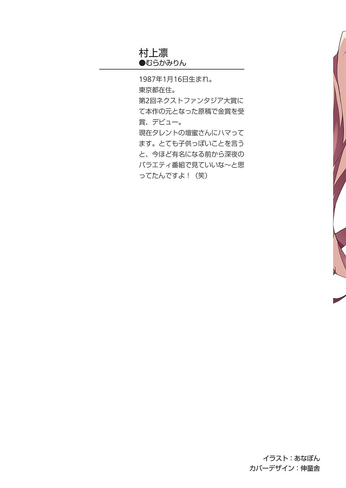
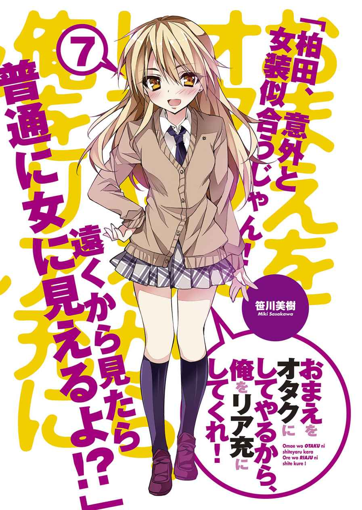
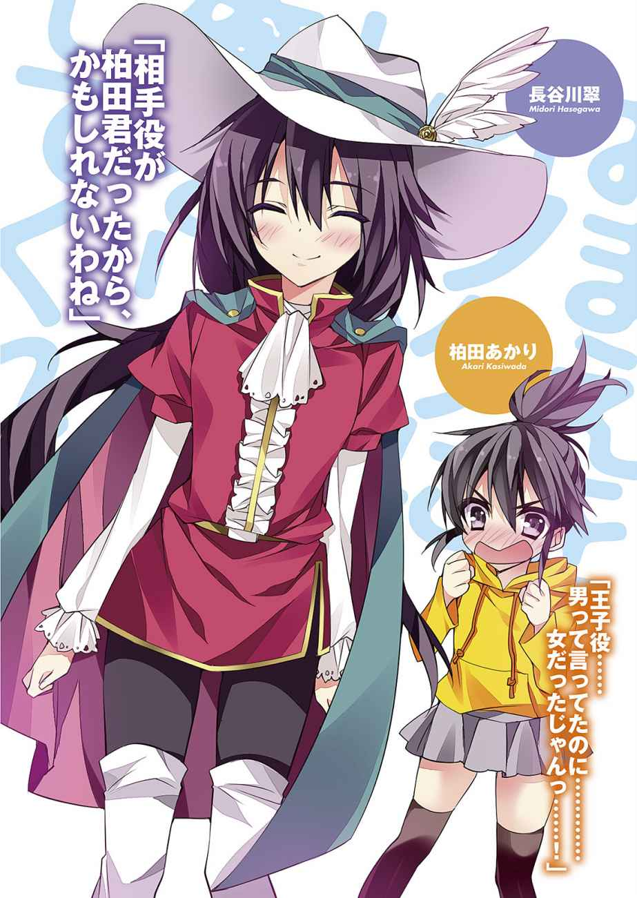
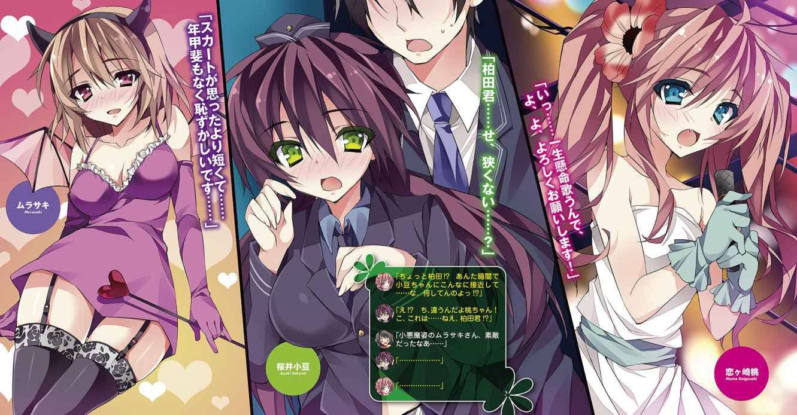
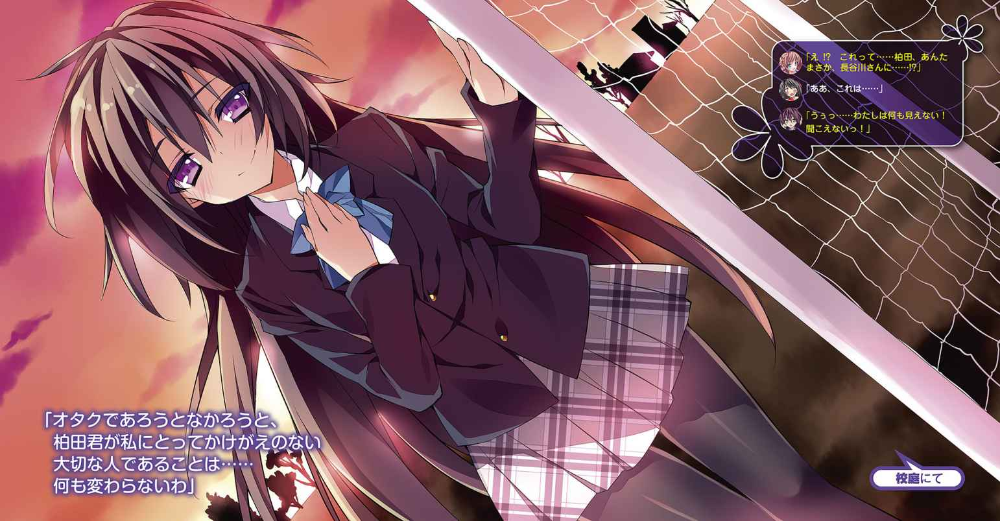
おまえをオタクにしてやるから、
俺をリア充にしてくれ！７
村上 凛

富士見ファンタジア文庫
本作品の全部または一部を無断で複製、転載、配信、送信したり、ホームページ上に転載することを禁止します。また、本作品の内容を無断で改変、改ざん等を行うことも禁止します。
本作品購入時にご承諾いただいた規約により、有償・無償にかかわらず本作品を第三者に譲渡することはできません。
本作品を示すサムネイルなどのイメージ画像は、再ダウンロード時に予告なく変更される場合があります。
本作品は縦書きでレイアウトされています。
また、ご覧になるリーディングシステムにより、表示の差が認められることがあります。
口絵・本文イラスト あなぽん
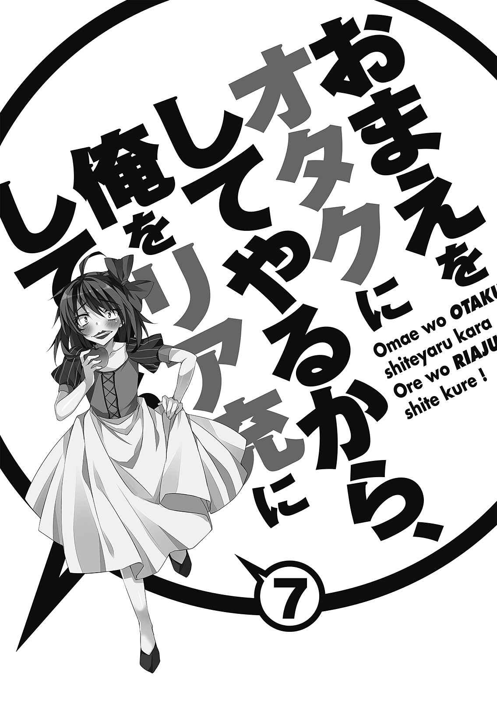
１
「これは......なんと美しいお嬢さんだ」
俺は声を張ってセリフを言うと、舞台の上を颯爽と歩いて、横たわる白雪姫へと近付いた。
客席はたくさんの観客で埋まっている。緊張から来る心臓の高鳴りを抑えるのに、内心必死だった。俺が歩く度に背中のマントがなびくのが分かる。
棺の前で立ち止まり、目を瞑って死んでいる演技をしている白雪姫へと目をやる。白雪姫のドレスに身を包んだ、本物の白雪姫のように......いや、もしかしたら、それ以上に美しい少女が、そこに横たわっていた。
艶やかな黒い髪。白く透き通るような肌に、長い睫毛が影を作る。この美しい白雪姫に、演技とは言え......今からキスをしなければならないと思うと、俺の心臓は今にも爆発してしまいそうだった。
俺は今、文化祭のクラスの演目で、『白雪姫』の王子役を演じていた。
そして、白雪姫役はなんと......俺の想い人である長谷川翠、本人だ。
「う......美しき白雪姫よ、せめてもの慰みに......私の口づけを与えようぞ」
セリフを言い終えて、俺の緊張は最高潮に達する。声が上擦ってしまったのが自分で分かった。
ゆっくりと目を閉じて、腰を折って上半身を倒す。長谷川の唇に......少しずつ、自分の唇を近づけていく。ああ、ついに長谷川と......。
「............ん？」
長谷川の唇に触れる直前......一瞬、意識が途切れた。
一体何が起きたのか分からずに目を開けると......目の前には長谷川の顔があった。目を閉じたまま少しずつ、自分の顔を俺の顔へと近づけている。
よく見ると......なぜか長谷川は、王子の姿に身を包んでいた。
「えっ......えぇっ!?」
今まで長谷川は確かに白雪姫の姿で死んだふりをしていたのに、一体何が起きたんだ？ わけが分からず身体を起こす。
......俺はなぜか今、長谷川の代わりに棺の上に横たわっていた。
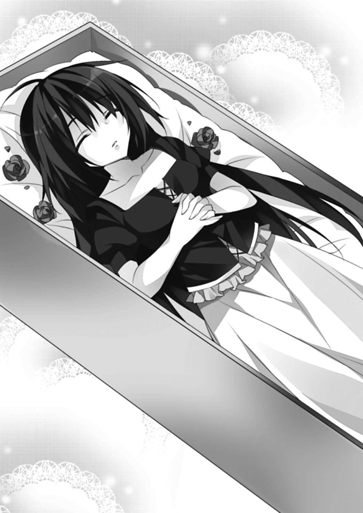
「柏田君......駄目じゃない、まだ口づけをしていないのに起き上がるなんて......白雪姫はまだ死んでいるのだから」
「えっ......!?」
困った顔でそんなことを言う王子姿の長谷川に、俺は益々気が動転する。
なんだよ、これじゃあまるで、俺が白雪姫みたいじゃ......？ 俺が王子役で、長谷川が白雪姫役だったはずなのに......。
そう思って自分の着ている服を見下ろして、驚いた。
なんと、本当に......俺が、白雪姫のドレスを着ていたのだ。
「な......なんじゃこりゃああああ!?」
悲鳴にも近い雄叫び声をあげて目が覚めた。
そこは、教室の自分の机の上だった。
「ゆ、夢......？」
教室内に数人いるクラスメイトたちが、俺を見てクスクスと笑っている。
どうやら俺は、教室で眠りこけていたらしい。時計を見ると、今は放課後のようだ。
「なんじゃこりゃあ、って......一体どんな激しい夢見てたんだよ!?」
後ろの席の桐谷が、馬鹿にしたように笑いながら俺の寝言に突っ込んだ。
奴は席で漫画雑誌を読みながら、俺が寝ながら苦しんでいる姿を見て面白がっていたようだ。
ん？ なんだこれ......気のせいか？ すごい既視感を覚えるのだが......？
そうだ！ ついこの間も俺、教室で眠りこけて長谷川の夢を見たじゃねえか......。そのときも寝ながら悲鳴を上げてめちゃくちゃ恥かいたんだよな......。二回も同じ失態を繰り返すなんて......俺ってある意味すごいな。
しかし、前回の夢は強烈だったが、今回のはやけにリアリティがあったな......。文化祭前日に、文化祭の夢を見るだなんて......。
......というより、今日の夢は、正夢に近い。
実際問題、俺は今、クラスの出し物である劇『白雪姫』で、クラスメイトの恋ヶ崎桃の代わりに女装姿で白雪姫役を演じなくてはならないという窮地に立たされていた。さらにそれだけではなく、俺の好きな相手である長谷川翠が、骨折してしまい王子役を演じることができなくなってしまったクラスメイトの細川の代わりに、王子役を演じることになってしまったのだ。
ただでさえ劇で主役を演じなくてはいけなくて死ぬほど緊張しているというのに、よりによって相手役が長谷川だなんて......。
当然、白雪姫の劇にはキスシーンがある。勿論実際にはしないが、キスするふりをするため、今の夢のように......顔をものすごく近づけなくてはならない。想像しただけで顔から火が出そうだ。
そういえば長谷川は、自分から王子役を志願したのだが......一体どうしてそんなことしたのだろう？
......ま、まさか、俺が白雪姫役だから王子役を......？
......って、んなわけあるか！
しかし、あと本番まで一日しかないというのに、彼女は王子役を演じることなどできるのだろうか？ 俺は自分がきちんと演じられるかも不安だったが、長谷川のことも心配だった。長谷川は、これからたった一日でセリフを覚えて演技の練習をしなくてはならないのだ。いくら長谷川でも、そんなこと可能なのだろうか？
一番前の長谷川の席に視線を移す。しかし、そこに彼女の姿はなかった。
「あれ......長谷川......は、帰ったのか？」
「いや？ 照明とか音響の担当の奴らと一緒に体育館に行ったっぽいけど？ 前日だから最終チェックだってさ」
そういえば長谷川は、劇の演出担当でもあったな。最終チェックにも参加しなければならないのだろう。
「お、俺も行ってくる！」
慌てて椅子から立ち上がり、そのまま足早に教室を後にした。
体育館の中へ入ると、ちょうど最終チェックを終えたらしきクラスメイトたちが、舞台から体育館の出口に向かって歩いているところだった。
「長谷川！」
その中に一人で歩いている長谷川の姿を見つけ、俺は声をかけた。
長谷川は俺の姿に気付いて立ち止まる。
「あら、柏田君......どうしたの？」
「あ、いや、あ、あの......」
少し口ごもり、何を言うかを頭の中で整理した。勢いで長谷川の元までやってきてしまったが、どう声をかけるか考えていなかった。
「えっと......あ、明日の劇......急に王子役決まったけど......大丈夫？」
俺の言葉に、長谷川は少しキョトンとしてから、わずかに笑みを浮かべた。
「えぇ。毎日練習を見ていたおかげでセリフも演技も全て覚えているから、大丈夫だと思うわ」
「えっ......!?」
俺は彼女の発言に驚愕した。
確かに、演出担当である長谷川は、毎日俺たちの劇の練習を横で見て、みんなの意見を聞いてまとめながら、演技指導などもしていた。
しかし、練習の様子を見ていただけでセリフも演技も完璧に覚えているだなんて......どんだけ記憶力いいんだよ。信じられない。俺なんて自分以外のセリフなどほとんど覚えていないというのに。
「す、すごい......長谷川って、ほんとにすごいね......」
万が一、セリフや演技を完璧に覚えていたとしたって、ぶっつけ本番で王子役を買って出ようなんて、普通の人は思わない。長谷川は記憶力だけじゃなくて、度胸も人一倍なんだ。いくら学級委員だからって、クラスの危機のために、そこまでできるなんて......。
異性として惚れてるってだけじゃなくて、人間として心から尊敬できる。長谷川って、本当にすごい人だ。
「突然相手役が変更してしまって、柏田君もやりにくいかもしれないけれど......明日は、頑張りましょうね」
長谷川が、俺に向かって薄く微笑んだ。
こんな状況になっても、尚俺のことを気遣ってくれるなんて......。
「う、うん！ 俺、頑張るよ！ も、もし長谷川が本番でセリフ飛んだとしても、なんとか誤魔化すから！」
実際そんなことできる器量が俺にあるとは自分でも思えなかったが、長谷川を安心させたい一心で口からそんな言葉が出てきた。我ながら本当に調子がいい。
「......そう。じゃあ、頼りにしているわ」
ふっ、と長谷川は笑う。彼女は明日ぶっつけ本番で演技をしなくてはならないというのに、少しも動揺していないようだ。
長谷川がこんなに余裕なのに、俺があせってどうするんだよ。明日はせいぜい、長谷川の足を引っ張らないよう頑張らなくては。俺は今一度自分自身に気合いを入れた。
長谷川と共に教室へと戻り、まだ仕事が残っているという長谷川と別れ、俺は帰宅するべく教室を出た。
すると、廊下に恋ヶ崎がいた。壁に寄りかかってスマホをいじっている。教室内で恋ヶ崎の友達の笹川が男子と話していたので、一緒に帰るために話し終えるのを待っているのかもしれない。
「良かったじゃん」
奴は俺の顔を見るやいなや、突然そんな言葉を投げかけてきた。
「......は？ 何が？」
恋ヶ崎は俺の至近距離まで近付いてくると、小声で囁いた。
「長谷川さんが、王子役に決まって......」
「んなっ......!? ぜ、全然よくねーわ！ 緊張しまくりだわ！」
あせって否定する。せっかく恋ヶ崎が周りに会話が聞こえないように声を抑えてくれているというのに、俺の方がでかい声を出してしまった。
「............」
恋ヶ崎はそんな俺の様子を馬鹿にすることもなく、黙って無表情で俺を見ている。今のセリフは俺のことをからかって言ったのか、本気で言ったのか、感情が読み取れない。
「だって、普通にチャンスじゃない？ 劇を成功させれば、絆......みたいなものも生まれるかもしんないしさ。......劇がうまくいったら、長谷川さんと一緒に文化祭回ろうって誘ってみたら？」
「え、ああ、まあ......そうだな」
急にまともなことを言われて、返答に少し困る。確かに、それはそうなんだよな......。うまくやれば、長谷川との仲を急接近させることもできる......かもしれない。そんでもって、長谷川と文化祭を一緒に回れたら、もう最高だ。
「つーか、それはお前だってそうだろ」
「へ？」
恋ヶ崎は俺のセリフに、何のことか分からないというような反応をした。
「いやだから、鈴木との軽音部のライブ」
「え、......あ、ああ......うん......」
恋ヶ崎は少し動揺した様子で口ごもる。
「？ なんだよ......」
もっと意気込んでいるのかと思いきや、意外な反応だった。
「だって......万が一失敗して、鈴木君たちに迷惑かけちゃったらって思うと......」
恋ヶ崎は俯いて不安げな表情を浮かべた。ライブ前日を迎えて......どうやら奴の中では楽しみという気持ちよりも、緊張や不安の方が勝っているようだ。
「桃～！ ごめんお待たせ！」
笹川が教室から出てきた。
「もう、美樹遅いって！ ......じゃーね、柏田」
「あ、ああ......じゃあな」
恋ヶ崎は素っ気なく俺に挨拶すると、笹川と共に俺の前から去っていった。
そういえばここ最近、軽音部との文化祭の練習の様子を恋ヶ崎からほとんど聞いていなかったことを思い出す。あいつ、あんな調子で明日の本番、本当に大丈夫なんだろうか？
しかし、今の会話で実感したが、この文化祭で俺も恋ヶ崎も、好きな相手との距離を縮める大きなチャンスに恵まれた。劇を成功させて、あわよくば自由時間にも長谷川と文化祭を回ることができたら、俺にとっては大きな進歩だ。長谷川とのラブシーンなんてめちゃくちゃ緊張するが......無事こなして、長谷川と急接近できるよう、明日は全力で頑張らなければ。
＊
「直輝、明日の文化祭、あかりと行くことにしたから」
その日の夜、帰宅した俺が漫画雑誌を読みながらリビングのソファーでくつろいでいると、キッチンで夕食の準備をしているオカンの口からふいにそんな言葉が出た。
「......えっ!?」
オカンのセリフに驚き、ふと、隣で黙々とゲームをしている妹のあかりの横顔に目をやる。奴は、真剣な表情でＰＳＰの画面を見つめていた。
......確かに、セリフ覚えに付き合ってくれた際、こいつは俺の劇を見に来るとか言ってたが......単なるその場の気まぐれで言ったわけじゃなく、本当に来るつもりでいたとは......。一体兄の高校の劇なんか見て、何が楽しいってんだ？
「直輝の女装姿......どんだけキモいかわざわざ見に行ってあげんだから感謝してよね」
あかりは、ゲーム画面から目を離さずに口だけ動かした。
「いや別に、来なくていいんだけど......」
「せっかく見に行ってあげるって言ってんのに何様なわけっ!? ふんっ、まー直輝がなんと言おうと行くけどね。だって......王子役も男子なんでしょ？」
なぜか途端に、あかりの口元が緩み始める。王子役が男子だから一体なんだというんだ......？ あ......っていうか、こいつに王子役が女子の代役になったって言うの忘れてたな。そんな大したことじゃないと思って言うつもりもなかったが、一応今言っておくか......と思ったところ。携帯のバイブがテーブルの上で音を立てて鳴った。
「直輝ケータイうるさい！」
「え？ ああ、俺か......」
携帯を手に取り開くと、そこには着信の文字があった。
発信相手は......バイト先の先輩である、山本さんだった。
なぜ山本さんが？ 彼から電話が来たのは初めてだったので、少し動揺する。
「はい、もしもし」
とりあえず通話ボタンを押して電話に出ながら、階段を上がって自分の部屋へと向かう。なんとなく、会話の内容を問わず家族の前で電話をするのは抵抗があった。あかりもオカンもいろいろうるさいし。
『あ、もしもし柏田君？ 今大丈夫？』
バイト先で聞き慣れた山本さんの声が携帯から聞こえてくる。
山本さんは、バイト先のカラオケ店で、俺が唯一心を開いていると言える先輩だ。
年は正確には分からないが、恐らく二十代前半。今の職場でのバイト歴は割と長いらしく、バイトのリーダー的存在だと言える。男女問わずバイトのメンバーから慕われている、爽やかな好青年だ。バイト先ではコミュ障気味な俺にも優しく声をかけてくれる彼に、俺も好印象を持っていた。
以前までは彼を大学生だと思っていたが、どうやらフリーターらしいということが最近判明した。就職活動中らしく、最近はスーツでバイトに来ることもある。
そんな素晴らしい人柄の彼だが、携帯の連絡先を交換して以来連絡が来たのはこれが初めてだった。何かあったのだろうか。
俺が彼の問いに、
「はい、大丈夫です」
と答えると、山本さんは申し訳なさそうな声で話し始めた。
『いや実は......明日、俺バイトのシフト入れてたんだけど、急用ができちゃってさ......急でほんとに悪いんだけど、明日って入れたりしないかな？』
そういうことか......。明日は土曜日で、本来だったら空いていることの方が多いが、明日は高校の文化祭だ。うーん、文化祭が終わった後、夜だったら入れるかもしれないが......。
「えっと、時間は......？」
『俺がシフト入ってるのは十時から午後三時までなんだ。もし全部の時間無理だったら、午前か午後かどっちかだけでも代わってもらえたらそれでも助かるんだけど......』
十時から午後三時......文化祭の時間ともろかぶりだ。
「すみません、その時間はちょうど予定があって......」
『......そっか。前日だもんな。いや、こちらこそ急にごめん。他の人を当たってみるよ。ありがとう』
山本さんは明るい調子で言うと、電話を切った。彼には恩があるのでできれば代わってあげたかったが、こればっかりは仕方がない。
「直輝ー、ご飯よー！」
オカンが下の階から俺を呼ぶ声が聞こえたので、俺は夕食をとるために自分の部屋からリビングへと向かった。
＊
翌日。いよいよ文化祭一日目を迎えた。
俺たちのクラスの劇は午前十時半から開始のため、朝のホームルームを終えてすぐに劇の準備に取りかかる。
クラスメイトたちはそれぞれ体育館や教室で、慌ただしくそれぞれの準備をしていた。教室内では劇に出る役者がメイクをしたり、男子はその場で衣装に着替えたりもしている。
俺は教室で衣装係が用意した（といってもドン・●ホーテで買ってきただけらしいが）白雪姫の衣装を着て、赤いカチューシャつきのボブカットのウィッグをかぶり、身支度を進めていた。
「きゃはっ、やっばーいマジ超うけるぅ～」
衣装係である雨宮（恋ヶ崎の友人のギャルで、俺は少し苦手な女子）と、他の衣装係の女子二人が、俺の姿を見て笑っていた。雨宮が一応鏡を貸してくれたので、見たくもないが自分の白雪姫姿を一応見てみる。
「..................うっ......」
我ながら、大きなダメージを受けた。当たり前だが一ミリも似合っておらず、ただただ気持ち悪い。
「ぎゃははは、すげー！ 壊滅的に似合ってねー!!」
桐谷や、他の男子どももゲラゲラ笑っている。気付くと、大多数のクラスメイトが俺の姿を見てくすくすと笑っていた。うっ............いや、いいんだ......スルーされるよりは笑われる方がよっぽどマシってもんだ......と、傷つきそうな自分を必死で慰めた。
「あっねえねえ、一応メイクもしてみる～？ コントとかで芸人が女装するときもメイクしてんじゃ～ん」
雨宮がケラケラと笑いながら楽しそうに自分のメイク道具をポーチから取り出した。ちなみに、「メイクもしてみる？」というのは俺に許可を求めてくれているわけではない。同じ衣装係の女子に聞いているだけだ。俺の意思などハナから無視なのだ。
「あ、いいね～、してみよーよ！」
俺が何も言う前に、メイクをされることが決定してしまった。ただでさえ苦手意識を持っている雨宮と、派手な女子二人、計三人の女子相手に、俺が何か意見するなどできるわけがない。完全にされるがままの状態だ。椅子に座らされて女子三人に囲まれる。一見すると男子どもから羨まれるような光景かもしれないが、一歩間違えたら軽いイジメだぞこれ......。
「じゃあえっとー、まずは～......」
雨宮が屈んで、椅子に座る俺の顔を真正面から見た。どう化粧するか悩んでいるようだ。彼女に対して苦手意識を持っているとはいえ、顔だけは割と可愛いため、至近距離で見つめられて緊張のあまり硬直してしまう。
......そこへ、何者かが俺の後ろからズカズカと近付いてくる足音が聞こえた。
「......あたしがやる」
声に振り向くと、そこには恋ヶ崎が仁王立ちしていた。怪訝な顔つきで俺を見ている。
「え？ 桃衣装係じゃないじゃん、大道具じゃ～ん」
雨宮は不思議そうに首を傾げた。
「......い、いいから！ 瑞希だって、柏田なんかのために自分のメイク道具使うとかもったいない、って内心思ってんでしょ!?」
んな......！ なんて酷いことを！ ちなみに、瑞希というのは確か雨宮の下の名前だった気がする。
「えっ？ まあ、そりゃあ、確かに思ってたけどぉ～......」
思ってたのかよ！
恋ヶ崎は無理矢理雨宮を押しのけて、自分のポーチを取り出して俺の顔に化粧を始めた。化粧しながら、俺を侮蔑するかのような眼差しで見つめてくる。一体どういう風の吹き回しで、こいつは俺に化粧などしているのだろうか。恋ヶ崎がいつもつけている香水の香りが漂ってきて、少なからずドキドキしてしまう。
「......何そんなキモい姿で、女子に囲まれてデレデレしてたわけ？ いつもに増してほんっとキモいわあんた」
「......はあ!? だ、誰が......ぐおっ」
デレデレなんぞした覚えはねえ。恋ヶ崎は俺を罵倒しながら、俺の顔に乱暴な手つきでファンデーションを塗りたくる。自分の顔にはいつも丁寧に化粧してるくせに、俺に対してはなんでそんなに雑なんだよ。
「キャー！ 長谷川さん超かっこいー！」
そのとき、女子の黄色い声が聞こえた。声がした教室の隅に目をやると、今着替えを終えたらしき王子様姿の長谷川が、教室へ入ってきたところだった。
俺も恋ヶ崎も、その姿に釘付けになる。黒い髪を後ろで一本にまとめて、つばの広い帽子をかぶり、王子風の青い衣装に赤いマント、腰元には短剣を挿していた。
......麗しい............。
思わず、そんな一言が漏れそうになった。
男装の麗人、というのはまさしく今の長谷川のために存在するような言葉だ、と思った。美しくもあり同時に凜々しくもある、完璧な王子っぷりだった。俺の衣装と同じように衣装係の雨宮たちが用意した●ン・キホーテの適当な衣装なんだろうが、とてもそんな風には見えない。やっぱり本物の美人は、何を着ても様になるのだ。
女子たちが携帯カメラで長谷川の王子姿を撮影している。長谷川は少し恥ずかしそうに戸惑っていた。
......今回のことで、男だけでなく女からも人気が出てしまうんじゃないだろうか、などと内心不安になった。
「また鼻の下伸びてるわよ、白雪姫」
「......えっ!?」
恋ヶ崎のセリフにハッとすると、奴は呆れたようなジト目で俺を見ていた。その不機嫌そうな顔つきのままメイクを再開させる。何か喋ろうとすると「顔動かさないで！」と威圧された。......やがて。
「ほら、できたわよ」
恋ヶ崎はメイク道具を仕舞いながら、無愛想に俺に告げた。
「おお、......鏡ない？」
どのような仕上がりになったか少し見てみたかったので、恋ヶ崎に尋ねる。
「あんた、自分の醜い姿なんか見てどうするつもり？」
ぐっ......醜いって、そんなはっきり言い切りますか。恋ヶ崎は鏡を持っているだろうに、見せてくれなかった。
「......せいぜい、長谷川さんの足引っ張んないように頑張りなさいよ」
「わ......分かってるよ」
「ほんとに分かってんの？ 今日は大チャンスなんだからね？」
「......いてっ!?」
恋ヶ崎は俺の額に軽くデコピンすると、そのまますぐに俺から離れていった。
......あいつ、なんだかんだ言って俺を励ましてくれた......のか？
「うわっ柏田、化粧前よりひどくなってんぞ!?」
桐谷が俺を見るやいなや、思いっきり人の顔を指差して爆笑してきた。
「えぇっ!?」
化粧したのに前より酷くなってるだと!? どういうことだ!? 恋ヶ崎の奴、なんてことしてくれやがったんだ！ 俺は自分がどれだけ醜い姿になったのか気になって、鏡を見るべく男子トイレへ行こうと教室の扉へと向かう。すると、その途中で長谷川と鉢合った。
「柏田君......素晴らしいわ！」
長谷川は俺の顔を見た途端、目を輝かせてえらい感動している。
「今日の劇で笑いをとるためにそこまでしてくれるだなんて......！ その姿で舞台へ上がれば笑いをとれること間違いなしよ！ 若干の出オチ感は否めないけれど、つかみとしては充分すぎるくらいだわ！」
長谷川のセリフの語尾にこんなに『！』がつく日が来るなんて......。
好きな子に自分の顔について言われたセリフだと思うと悲しくなってくるが、劇で笑いをとるためには最適な姿になれたということなのだろう......。長谷川がこんなに喜んでくれているのなら、それもまあ悪くないと思った。一応、恋ヶ崎に感謝しないとな......。
っていうか長谷川、劇直前だってのに随分余裕だなあ。
その後、男子トイレで自分の顔を確認すると、顔全体に雑に塗りたくられた肌の色より白いファンデーションに、濃すぎる頰紅、唇からはみ出しまくっている真っ赤な口紅......という、いかにもお笑いコントの女装でありそうな酷い化粧が施されていた。
「うわー......」
そんな自分の姿に、もはや苦笑いしか浮かんでこない。あの野郎......やってくれやがったな......。
......まあ劇の冒頭のナレーションで白雪姫の容姿について、『雪のように白い肌、赤いバラの様に美しいほっぺた、血のように赤い唇、黒檀のように黒い髪を持つ......』などと説明されるので、ある意味間違っちゃいないような気もするが......。
それから準備を経て、やがて劇の本番の時間になった。
舞台の上で、白雪姫の継母役の男子生徒と、魔法の鏡役の女子生徒がスタンバイする。
舞台に上がっている役者二人は勿論、見ている他のクラスメイトたちからも緊張感が伝わってくる。
いよいよ、舞台の幕が上がった。
『鏡よ鏡よ鏡さん、世界で一番美しいのはだあれ？』
舞台に照明が照らされ、継母役の生徒が最初のセリフを言った。
体育館の舞台の上から客席を見ると、想像していたより客席が埋まっているのが分かり、益々胸の鼓動が早くなる。今にも足が震えそうだった。
「柏田君」
呼ばれて振り向くと、そこには心配そうな表情の長谷川がいた。
「頑張って」
長谷川は小声で俺を励ましてくれた。俺は黙ってコクリと頷き、長谷川の気遣いを嬉しく思いつつ、拳を固く握りしめて舞台へと目を向けた。
『月日が流れて、小さかった白雪姫も成長し娘になりました。
白雪姫は大きくなるにつれて美しくなり、城中に太陽の様な笑顔をふりまきました』
ついに俺の出番がやってきた。
ナレーションが終わった瞬間、俺は意を決して舞台へと出て行った。緊張のあまり手と足が一緒に出ているのが自分で分かったが、もはやそれどころではなかった。
俺が舞台に姿を現した途端、会場内に少し笑いがわき起こった。
良かった、うけてる......。俺は内心少し安堵する。ここでは俺のセリフはなく、笑顔で舞台の上をスキップするだけだが、緊張のあまりうまくスキップができなかった。だが、もしかしたらその下手くそなスキップも、笑いを誘う要因になったのかもしれない。
それにしても、舞台に上がっただけで笑いがわき起こるって......ある意味すごいな。もしかして、恋ヶ崎が塗りたくっためちゃくちゃな化粧のおかげでもあるのか？ 恋ヶ崎は、本番で笑いがとれるようにわざとこんな化粧をしてくれたのか？ ......って、考えすぎだろうか......？
その後、俺は相変わらずガチガチに緊張しっぱなしで、セリフも終始棒読みではあるが、セリフが飛んだりするような大きな失態を犯すこともなく、順調に劇を進めていくことができた。
舞台の上から、客席に妹のあかりとオカンの姿を発見した。くっ......本当に見に来やがった......。なるべく気にしないように努め、舞台に集中した。
やがて、劇もクライマックスを迎えた。毒リンゴを食べて死んでしまった白雪姫（......というか俺）は、棺の上に寝かされ、七人の小人たちに囲まれている。後で吐き出す演技をするために口の中にリンゴの欠片を含み、俺は黙って死んだふりをする。
ああ......ついに、このシーンがやってきてしまった......。
「これは、なんと美しいお嬢さんだ」
凜とした美しい声が響き渡る。王子役の長谷川だ。
長谷川の声って、よく通るいい声だなあ......。
「王子様、このお方はもう、息をしていないのです」
「おお、それは可哀想に......」
長谷川の声は堂々としていて、緊張しているような様子は微塵も感じられなかった。セリフを完璧に覚えているのは勿論、発音も良く、大きな声で丁寧に、感情を込めて、ぶっつけ本番とは思えない程素晴らしい演技を披露している。ものすごい舞台度胸だ。本当に長谷川って、超人なのかもしれない。ああ、できることなら長谷川の勇姿をこの目に焼き付けたかったなあ......。死んだふりをしているため目を開けられないのが悔やまれる。
「美しき白雪姫よ、せめてもの慰みに、私の口づけを与えようぞ」
長谷川のセリフに、つい身体を強ばらせてしまう。
──来た。ついに来てしまった。
長谷川が、俺が横たわる棺に近付いてくる足音が聞こえてくる。
「～～～!!」
長谷川の手が、俺の頰に触れた。うおおおお、まさか顔を触られるとは思っていなかったので、びっくりして一瞬で顔が火照った。
頰にふわっとしたくすぐったい感触がした。彼女の長い髪が垂れてきて、俺の頰に触れているのだと分かる。今かなり至近距離にいるのだろう、長谷川のものすごくいい香りが漂ってくる。耐えきれなくなって一瞬だけ薄目を開けた。
ぬおおおおおおおおおっ！ は、は、長谷川が目を瞑って俺に口づけようとしている......長い睫毛、透き通るような白い肌、形の良い桃色の唇......長谷川の美しい顔が、すぐ目の前に......う、噓みたいだ......。当然だが昨日見た夢なんかよりずっと迫力があり、俺の心臓は今にも壊れそうだった。バレる前に俺は再度固く目を瞑った。
「..................」
──当然ながら、実際に長谷川の唇が俺の唇に触れることはなかった。
ほんの少～～～～しだけ期待していた俺は、我ながらバカだと思う。
目を瞑ったままぼけーっとしていると、肩をポン、と叩かれた。............っ、やべっ！ 次、俺の演技の番だった！
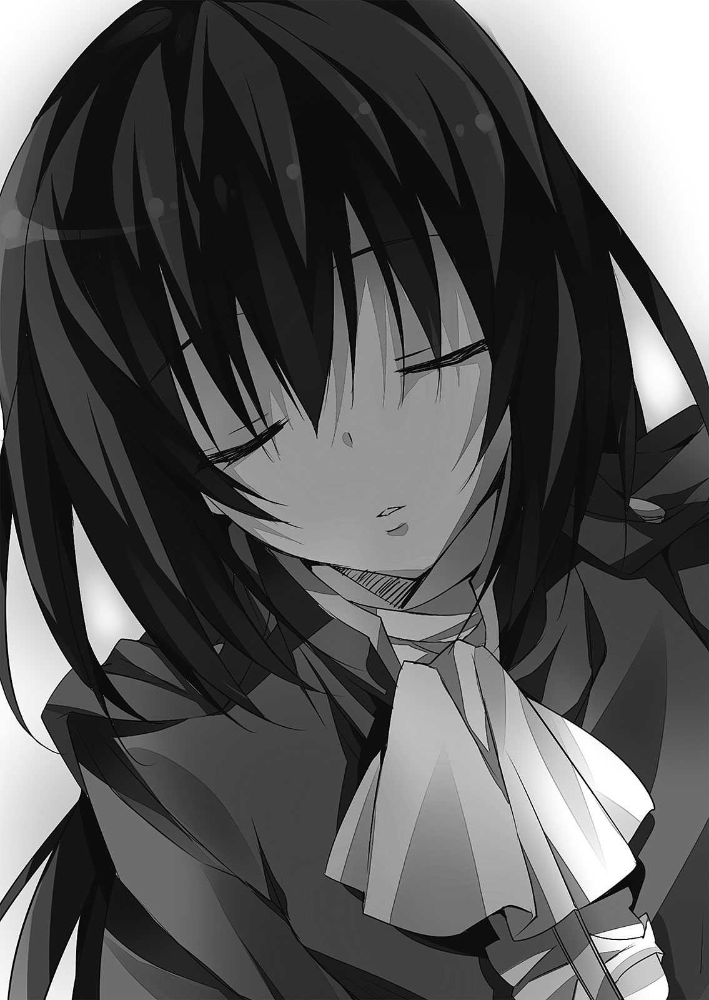
「ゲホッ」
俺は咳をしたフリをして、口の中に含んでいたリンゴの欠片を吐き出した。王子のキスで白雪姫が毒リンゴを吐き出して生き返る、というシーンである。
「う、うーん、私は一体今まで、何をしていたのかしら......」
慌てて身体を起こしてセリフを言い、そのまま演技を続けた。
──ああ、やばかった......。キスシーンで完全にぼーっとしてしまって、演技することを忘れていた。肩を叩いてくれたのは長谷川だろう。目覚める演技を始めない俺を不思議に思って合図を送ってくれたのだと思われる。ああ、俺が長谷川をフォローするよ、とか調子よく言ったくせに、結局ぶっつけ本番の長谷川に逆に助けられるだなんて......自分で自分が情けない。
やがて、劇が終幕を迎えた。
最後のナレーションが終わり、客席から拍手がわき起こる。
自分の出番を全て終えた俺は、舞台袖へ戻ってきたとき、気が抜けてつい座り込んでしまった。
「柏田君、お疲れ様」
俺と同時に舞台袖へと戻ってきた長谷川が、俺に声をかけてくれた。
「長谷川......さ、さっきはありがとう。キ、キスシーンの後、肩叩いて合図送ってくれて......。ほんと助かった」
長谷川は俺の言葉に微笑んだ。
「長谷川、ぶっつけ本番なんて信じられない程、セリフも演技も完璧だったね！ びっくりしたよ！」
長谷川は俺の言葉に、少し考えるような仕草をした。
「......出番直前は少し緊張していたのに、不思議と......いざ本番を迎えたら全く緊張しなかったのよね......」
「えぇっ、すごいね!? 長谷川って、すごい本番に強いんだね!?」
「............」
長谷川は黙って俺の顔をじっと見てから、
「............相手役が柏田君だったから、かもしれないわね」
と、軽く微笑みながら言った。
「......えっ!?」
相手役が、俺だったから......？ それは、俺だから安心して緊張しなかった、という意味ととらえて良いのだろうか？ もしそうだとしたら、めちゃくちゃ嬉しい。
クラスメイトたちが俺たちの元へと近付いてきた。
「長谷川さんも柏田も、お疲れー！」
それほど親しくないクラスメイトたちも労いの言葉をかけてくれて、俺は素直に嬉しかった。
ああ、なんとか、大きな失態もせずに最後までやり遂げることができた......。長谷川に嬉しい言葉をかけてもらえて、クラスメイトたちにも労ってもらえて......。一時はどうなることかと思ったが、文化祭って、結構いいもん......だな......。なんか今俺、すげー青春を謳歌してるっぽいぞ！
俺の心は、充実感と達成感で満たされていた。
......まあ、劇はまだ明日もあるんだけどな。
クラス全員で劇の片付けを終え、体育館から出ようと歩いていると、前方にあかりとオカンの姿を発見した。俺に声をかけるために、体育館の中で待っていたようだ。あかりは、なぜか俺のことを鋭い眼差しで睨み付けている。
「まさかあんた、白雪姫役だったとはねえ～。すごい格好！」
オカンは俺の姿を見て笑っていた。
「本当に見に来るとは......。お、俺、これから着替えたりしなきゃなんねえから......」
家族と話しているところをクラスメイトたちに見られるのが恥ずかしく、周囲の視線を気にしながら小声で話す。早々に立ち去ろうとしていたところ......。
「──っ!?」
突然、あかりが俺に向かって膝蹴りをかましてきた。
「いって──！ お、おま......いきなり何する......!?」
「なっ......直輝のウソツキ！ 不潔！ 変態オカマ野郎！」
「......は、はあぁ!? な、何が......!?」
百歩譲って『変態オカマ野郎』は今の俺の酷い女装姿を見たらそんな言葉が出てきてもおかしくないかもしれないとして......他の『ウソツキ』『不潔』は身に覚えがない。
「王子役......男って言ってたのに............女だったじゃんっ......！」
見ると、あかりは涙目でブチギレていた。
「え？ ......あぁ、あれは......」
「............男同士のラブシーンが見れるって超期待してたのに......」
......今あかりの口からなんだかおぞましい言葉が聞こえた気がしたが、あえて聞かなかったことにした。
こ......この腐れ妹が！ 兄の高校の文化祭の劇にまでそんなもん期待するだなんて、どんだけ節操ない腐女子なんだよ!?
「し、し、しかも..................ちゅー......してたし......」
「えっ!?」
あかりは、俯きながら顔を真っ赤にして、わなわなと震えながら言った。
ちゅー......？ 何を言ってるんだコイツは......。もしかして、キスシーン......客席から見たらしてるフリではなく、実際にしてるように見えた......のか？
「......あっ！」
突然あかりが視線を移動させて声を上げた。一体何を発見したのかと、あかりの目線の先を追うと......。
「あっ......」
思わず俺も、声を上げてしまった。そこには、王子姿の長谷川がいた。体育館から出るべく颯爽と歩いていたが、俺たちの姿に気付いて立ち止まった。
長谷川は俺たちにペコリと会釈をすると、再び歩き始めた。
「王子役の子、すっごく綺麗だったわね～！」
「くうっ............ぐぬぬ」
オカンが長谷川を褒めていることが気に食わないのか、あかりは立ち去る長谷川の後ろ姿を険しい目つきで睨み付けていた。
「いくら劇だからって、女とちゅーしていい気になってデレデレしてぇ～！」
あかりがとんでもないことを言い出して、俺のことをぽかぽかと殴りつけてくる。
「ほらあかり、お兄ちゃんは忙しいんだからもう行くわよ。じゃあね、直輝」
オカンは喚いているあかりの手を無理矢理引いて、俺に挨拶してからその場を去った。
二人が体育館から出て行く後ろ姿を見て、とりあえず怒り狂うあかりから解放されて助かったと、一人でほっと胸をなで下ろした。まさかあかりが男同士のキスシーンを期待して劇を見に来ていたとは......。我が妹ながら、とんでもない奴である。
体育館の出入り口で、見慣れた姿が目に入った。
「あ、柏田......」
恋ヶ崎と桜井さんが立ち話をしていたのだ。
「お疲れ。とりあえず失敗とかなくて良かったんじゃん？」
恋ヶ崎が無愛想に俺に労いの言葉をかけた。
「劇、お疲れさまでした！ 良かったですよ～」
桜井さんも俺に声をかけてくれた。
「えっ......桜井さん、劇見てくれたの？」
見に行きます、と言ってくれてはいたが、本当に見に来てくれていたなんて......。
「あ、はい......」
桜井さんは頷いた。しかし......気のせいだろうか。なぜか表情は無理して笑っているような作り笑顔で、ぎこちなく感じる。
「あ、あの、その......」
桜井さんが何だかそわそわした様子で口を開く。
「ん？」
俺が彼女の顔を見て問いかけると、
「............い、いえ！ えっと......劇すっごく面白かったです！ 客席もウケてました！ 柏田君の白雪姫役も良かったですし......」
少しかぶりを振ってから、再び笑顔を作ってそんなことを言った。
「え？ う、うん......ありがとう......」
やっぱり何か態度が不自然だと感じつつ、返事をする。
「そ、それに......王子役の子もすっごく綺麗で格好良かったですね！ 王子役の男子が出られなくなったから急遽代役で決まったって桃ちゃんに今聞いてたんですけど、全然そんな風に思えないくらい演技も上手で......」
「え!? ......だよね～！ 俺なんか何回か練習しても、ガチガチに緊張して下手くそな演技になっちゃったっていうのに、ぶっつけ本番であんなに演技がうまいなんてほんとすごいよね～！ 実はさ、舞台上でも助けられちゃって......」
桜井さんが長谷川のことを褒めたので、俺もついテンションが上がって長谷川を褒めちぎってしまった。
「............」
慌ててはっと我に返る。やべえやべえ、長谷川のことを好きだってことは一応隠してるっていうのに、こんな態度したら怪しまれるかもしれない......。
「........................」
桜井さんは、そんな俺の様子を黙って見つめていた。少し驚いたような表情で目を見開いている。
「......あっ......わたしそろそろクラスの出し物の当番があるので......失礼しますね！ 桃ちゃん、ライブ頑張ってね！」
桜井さんは俺たちに挨拶してから、慌てて俺たちの前から立ち去った。
恋ヶ崎はそんな桜井さんの後ろ姿を......なぜか心配そうな表情で見つめていた。かと思うと、急に俺の方に顔を向けて俺をキッと鋭く睨み付けてきた。
「な......なんだよ!?」
「............別に？」
恋ヶ崎は不機嫌そうにそう答えると、先に教室へと戻ってしまった。
......一体なんなんだ？ 桜井さんの様子も少し変だったが、恋ヶ崎の態度は更に理解不能だ......。
それから俺も教室へ戻って、白雪姫の衣装から制服へと着替える。トイレで顔を洗って化粧を落とした。クラスの奴らは流れ解散状態で、片付けや自身の着替えを終えた者から、自由に教室から出て行った。
自分のクラスの出し物である劇を終えた俺は、部活にも入っていないため、完全に自由の身となった。
俺は勿論、長谷川を誘って、長谷川と文化祭を見て回りたい......と思っていた。
しかし、トイレから教室へ戻ると、既にそこに長谷川の姿はなかった。しまった、姿を見失う前に『文化祭一緒に回ろう』と誘っておけば良かった......。勿論、長谷川の文化祭中の行動なんて把握していない。長谷川は部活には入っていないが、学級委員としての仕事があるかもしれないし、もしかしたら......他の人と文化祭を回る約束をしていたのかもしれない。
一応教室付近を軽く探してみたが、長谷川の姿は見当たらなかった。携帯で連絡をとってみるという手もあるが......正直、そこまでする勇気はない。他のことで忙しくしていたら、空気が読めない奴になってしまうとも思うし。
普通、文化祭を回るのは親しい友人と行うもんなんだろうが、唯一親しいと言える鈴木は、一日目はクラスの出し物と部活の出し物に追われているらしく、同じクラスの桐谷も、部活の出し物で忙しいようだ。
仕方なく、一人で文化祭を適当に見て回りながら、ダメ元でさりげなく長谷川の姿を探し続けることにする。一人で文化祭を巡るなんて、空しいことこの上ないのだが......。
適当に校内をぶらつくが、一人でクラスの出し物に入る気になどなれなかったので、校庭に出て模擬店で焼きそばを買い、校庭の片隅の花壇に座って一人黙々と空腹を満たした。クラスの奴らに一人でいるところを目撃されたらとても恥ずかしいので、終始周囲に目を配ってビクビクしながら行動した。
友達同士やカップルで文化祭を楽しんでいる生徒がたくさんいる中、俺は涙がちょちょぎれる寸前だった。人の目がなければ泣いていたかもしれない。
はあ......。さっき劇を終えた頃までは、好きな子と文化祭の劇を成功させることができて、文化祭っていいもんだな！ 俺って結構リア充じゃね!? とか思ってたのに......何だこの有様。いや、こっちが俺の本当の姿なんだよな......。たまたま主役をやることになって、文化祭の熱に浮かされて調子に乗ってたけどさ。好きな子と文化祭を見て回ることも叶わないどころか、一緒に見て回る人もおらず、一人寂しくぶらぶらして......はあ......。先月、長谷川と他校の文化祭を回ったときのことを思い出す。あのときは本当に楽しかったな......。今となってはあのときの出来事が夢のように思えてくる。
ひとしきり落ち込んだ後、ふと校舎の時計を見て、あることを思い出した。
午後一時から恋ヶ崎と鈴木が出る軽音部のライブのステージが始まる。開始時間まであと少しだ。
いくら落ち込んでいようが、奴らの勇姿は見ておかなければ。俺は重い腰を上げて立ち上がり、軽音部のライブが行われる体育館へと足を向けた。
「あっ......」
「あれっ、柏田君!?」
体育館に向かう途中の廊下で、意外な人物と遭遇した。
桜井さんだった。さっき劇を見に来てくれたときは制服姿だったが、今彼女はミニスカポリスのコスプレに身を包んでいる。
「す、すごい格好だね......」
お尻のラインまで分かってしまいそうな青いタイトなミニスカートから、綺麗な白い足がスラリと伸びている。
桜井さんって、スタイルがいいから何のコスプレしても似合うなあ......。こんな魅惑的な警察官だったら、いつでも連行されたい。
「あっこれは......わたしのクラス、監獄喫茶やってて」
桜井さんは少し恥ずかしそうに笑いながら説明する。はにかんだ笑顔が可愛かった。
「監獄喫茶？」
「男子は囚人、女子はミニスカポリスの格好して接客するんです。あと、メニューがちょっと監獄を意識してたりとか......」
「へえ～、面白そうだね」
「さっきまで当番だったんで、着替える時間なくてその格好のまま来ちゃいました！」
そういえばさっき、これからクラスの出し物の当番だって言ってたもんな。
「もう当番は終わったんだ？」
「はい。もう漫研もやめちゃったから、クラスの当番以外の時間はフリーなんです。柏田君は、白雪姫の格好着替えちゃったんですか？」
そうか、そういえば以前ちらっと聞いたけど、桜井さんは漫研をやめたんだったな。
「そりゃあ、あんな格好で出歩いたら公害だからね......」
「えぇ～、そんなことないですよー！ あのまま移動しても面白かったと思いますよー？」
桜井さんは俺をからかうように笑いながら言う。
「..................」
それから急に真剣な表情になって、覚悟を決めたかのように俺の顔を見た。
「..................あ、あのっ......す、少し、気になったことがあって......ほんとはさっき聞こうとしたんですけど、聞けなくって......。......き、聞いてもいいですか!?」
「え？ う、うん？」
気になったこと......？ もしかして、さっき様子がおかしかったのは、それを聞こうか迷っていたせいなのだろうか？
彼女は俺の言葉に一息ついてから、俺の目を見て口を開いた。
「キ、キキキ、キスシーン......あったじゃないですか......。あ、あれって......ほ、本当にしたんですか......!?」
「えぇっ!?」
俺は質問の内容に驚いて声を上げた。
彼女は恥ずかしいのか、質問の後すぐに俯いてしまった。
「い、いや......本当にしたわけないでしょ！ 勿論フリだよ！」
慌てて真実を説明した。やはり、客席からだと本当にキスしているように見えたのか......。
「え............」
桜井さんは俺の言葉に、少しの間ポカンとしていた。
「..................あっ、そ、そう、でしたか......！ ......あはは......そうですよねえ......！ もうわたしってば、何聞いてるんだろ......」
それからへにゃっという効果音が似合うような気の抜けた笑顔になって、恥ずかしそうに赤面した。
こ、この反応は......一体......？
......俺が、長谷川とキスしたかどうかが、そんなに気になっていたのか......？
「はあっ！ やばっ、もう桃ちゃんのステージ始まっちゃう！」
次の瞬間、俺が深く考える暇もなく、突然桜井さんが自身の腕時計を見ながら叫んだ。
「あっ、やべ！」
すっかり忘れてた。俺は今、恋ヶ崎と鈴木のライブステージを見るために、体育館に向かっているところなんだった......。
「あ、っていうか、桜井さんも恋ヶ崎のライブを見に来たんだね？」
「はい！ 柏田君もなんですね！ じゃあ、一緒に行きましょう！」
俺たちは駆け足で体育館まで向かった。
......歩きながらも俺は内心、先ほどの彼女の質問とその後の反応のことが気になって仕方がなかった。
体育館に入ると、既に軽音部のライブが始まっていた。
体育館の舞台の上で、鈴木がギターを演奏しながら歌っている。鈴木の歌声がマイクを通して体育館中に響いていた。そうか、確か助っ人である恋ヶ崎が歌うのは最後の一曲だけで、最初の二曲は普通に軽音部のメンバーのみで舞台に上がり、鈴木が歌う......と、事前に鈴木から聞いていたのを思い出した。
鈴木が歌っているのは、俺でも知っているくらい有名な日本のバンドの、最近映画かなんかの主題歌になって流行った曲だった。鈴木はＪポップをほとんど聴かないので、恐らく他のメンバーが好きな曲なのだろう。
「あのボーカルの人って、柏田君のお友達......でしたよね？ 確か、一緒にコスした仲の......」
俺の隣でライブを鑑賞している桜井さんが、俺に向かって尋ねてきた。
「え？ あ、うん、そうそう」
そういえば、俺と鈴木がアニメ『サイキッカーズ』のコスプレ合わせをしたこと、桜井さんは知ってるんだったな。よく覚えてるなあ、そんなこと。
「鈴木く──ん！」
気付くと、何人かの女子生徒が鈴木に黄色い声援を送っていた。......っていうか、ライブを見ている観客の八割方が女子生徒であることに、今気付いた。これのほとんどが鈴木目当て......ってことは、さすがにないよなあ......？
しかし......女子たちがキャーキャー騒ぐ気持ちも理解できる。鈴木がイケメンなのはいつものことだが......奴の歌とギターはとてもレベルが高く、素人の俺が聴いても分かるくらい、他のバンドメンバーの演奏との差が歴然だった。こうして歌や演奏を聴いていると、改めてあいつってすごい奴なんだなあ、と思えてくる。いつもガチオタでロリコンという残念なイケメンっぷりしか見ていないため、普段の様子とのギャップに少し戸惑ってしまう。
「......柏田君、なんか少し驚いてる様子ですけど......もしかして、お友達の格好いい姿を見て、惚れ直しちゃった感じですか......!?」
「......はっ!? なっ、何言ってんの......!?」
突然桜井さんにわけの分からないことを言われて動揺する。
「はっ......！ つ、つい、柏田君がそんな顔してるように見えたもので......すみませんっ！」
桜井さんは慌てて口を押さえながら謝罪の言葉を口にしつつも、顔を赤くして何やら興奮しているようにも見える。
いや、確かに今鈴木に対してすげえなとは思ってたけど......。
勘違いだったら恥ずかしいが、桜井さんは......俺たちにＢＬ的妄想を膨らませているのか......？ 思い返してみれば、今までにも何度か、そんな風に思える出来事があったような気がする......。桜井さんって、三次元もいける方の腐女子なのか......？
俺が複雑な表情で考え込んでいたせいか、桜井さんが不安げな顔になって再度謝ってきた。
「あ......す、すみません......わたしまた暴走しちゃって......柏田君だって、腐女子の妄想のおかずにされるのなんて気持ち悪いですよね......」
妄想のおかず!? 突然何を言い出すんだこの子は!? な、なんつーか......無駄にエロい響きだな......。
「そんな風に妄想されていやな気にならないわけがないって分かってるのに......うぅ、本当に申し訳ないです......」
桜井さんは落ち込んだ様子で付け加えた。
しかしよりによってこんな身近にいる魅力のない地味男をＢＬ妄想のおかずにできるだなんて、物好きな子だなあ......。まあぶっちゃけ俺も百合萌えの気はあるし、女の子同士がきゃっきゃっとくっついてたら可愛いなとか思うから、お互い様かもな。......これが、ＢＬ妄想される相手が、嫌いな奴や生理的に受け付けないキモい男だったら今すぐやめてくれと全力で説得するが、仲の良い鈴木であればそんなに不快なわけでもないし......。いや、別に深い意味はなく。
「ああいや別に、気持ち悪いとかはないよ。まあ俺はホモなわけじゃないけど......妄想するだけだったら別に自由にしてもらって構わないっていうか......」
って、我ながらなんてことを言ってるんだ俺は。正直、不安げな表情で謝ってくる桜井さんを見ていたら、可哀想になってきた、ってのもある。
「えぇええっ!? まっ、まさかの本人公認!?」
桜井さんは俺の言葉にえらく驚いた様子で、今までの中で一番というくらい目を輝かせて俺を見つめてきた。その反応にこっちがびっくりする。
「あわわわ......あ、あ、ありがとうございます！ ありがとうございます！ か、柏田君って......本当に優しいですね......！ なんか、感動しました......はあ、はあ......腐女子にとって理想の人です......じゃあありがたく今後も妄想のおかずにさせて頂きます......！」
桜井さんは赤面しながら口元を押さえている。目は爛々としていて、こんなに興奮している彼女を見るのは初めてかもしれない。
「えぇ!? あ、うん......」
..................。
面と向かって女子に『おかずにさせて頂きます』って言われて、しかも承諾してしまった......。
「......あ、それと......柏田君のお友達の、確か......鈴木君......でしたっけ？ 桃ちゃんの好きな人......でもあるんですよね......？」
桜井さんが、今までのはしゃいでいた様子から一転して、落ち着いた口調でそう口にした。
「え......？ こ、恋ヶ崎から聞いたの？」
桜井さんのセリフに少し驚きつつ、俺は尋ねた。
「はい。桃ちゃんが......柏田君と、お互いの恋愛をうまくいかせるために協定関係を結んでることとか......いろいろ教えてくれました」
同人イベントにサークル参加した日、確かに恋ヶ崎は『小豆ちゃんにちゃんと全部言う』と言っていたが......そうか、本当に全部、桜井さんに話したんだな。
「わたしってば、今まで勝手に色々と勘違いしちゃってて......ほんと恥ずかしいです......」
桜井さんは言いながら、苦笑いを浮かべている。
確かに、今まで彼女は俺と恋ヶ崎の関係について、変な勘違いしているような節があったもんな......。大きな誤解が解けて、本当に良かった。
やがて、一曲目の演奏が終わった。
「ありがとうございました～」
鈴木が観客に礼を言った途端、女子生徒の黄色い悲鳴が飛び交う。うおお、思った以上に鈴木のファンだらけだな......やっぱり、この体育館にいる女子生徒の大半は、鈴木のファンなんじゃ......？
「では、続いて二曲目いきまーす。次の曲は、作詞作曲を俺がやりました」
鈴木の言葉に、歓声と拍手がわき起こる。え......？ 鈴木が作詞作曲......？ あいつ、そんな高度なことできたのか......。一体どんな曲なのか気になるな。
「聞いて下さい......『片想いforever』」
鈴木が曲名らしきものを言ってすぐ、演奏が始まる。
『片想いフォーエバー』......？ タイトル的に、どっからどう聞いても、ラブソング、だよな......？ 鈴木の奴が、ラブソング？ わけが分からない。あいつにとって恋愛なんて、一番遠いところにあるように思えるのだが......。
やがて、鈴木の歌が始まったので、耳を研ぎ澄まして歌詞を聴き取った。
『君のこと好きになって どのくらい経っただろう
これから先もこの想いは 届かないと分かってる
そのあどけない笑顔 本当は独り占めしたいよ
君以上に好きになれる人など 他にいない
どんなに想っていても 君に触れることすら出来ない
片想いforever 報われないこの恋は辛すぎるよ
それでも君に出会えて 良かったと
好きになって幸せだと 今日も僕は思ってる』
........................。
キャッチーなメロディー。切ない歌詞。友人が作った曲だという贔屓目を抜きにしても、いい曲だと思った。
きっと、鈴木のことをよく知らない奴が聞けば、正真正銘の正統派ラブソングだと信じて疑わないだろう。
だが、俺には分かってしまった。
これは......恐らく、ただのラブソングではない。
あいつが......『好きな二次元キャラへ向けて作った』ラブソングなのだ。
『これから先もこの想いは届かない』『どんなに想っていても君に触れることすら出来ない』『報われない恋』......そんな歌詞を聴いているうちに、俺は勘づいてしまった。同じオタクである俺も、少なからず、二次元キャラを好きになったときそのような感情を抱いたことはあったから......気付くことができたのだと思う。
きっと、客席から黄色い声を飛ばしている女子生徒の誰もが、これがそんな歌であることに気付いておらず、純粋なラブソングだと思ってうっとり聞いているのだろう。
「......あれ？ この曲って、まさか......!? いやっさすがにそんなわけない............いや、でも、歌詞的に、どう考えてもっ......！」
桜井さんがボソッとそんなことを口にしたので、まさか桜井さんもこの曲の真意に気付いたのか......!? と、一瞬思ったが、彼女の様子を見る限りどうも違うようだ。なぜか興奮した様子で俺をチラチラ見てくる。
............まさか、またとんでもなく見当違いなＢＬ的妄想を膨らませているんじゃ......!? 何をどう妄想しているのかは彼女の脳内を見てみないことにはハッキリ言えないが、一体どこまで妄想力豊かなんだろうか......。
やがて二曲目が終わり、会場内に歓声と拍手がわき起こる。
「ありがとうございました......。では、次が最後の曲になります」
鈴木の『次が最後』という言葉に、観客の女子生徒の『えーっ!?』という不満の声が上がった。鈴木はさほど気にする様子も見せず、次の曲の説明に入る。
「次は、ボーカロイド『響音ルル』の人気曲、『I am your princess』という曲をやります。この曲はめっちゃ可愛い曲で、俺が歌うには抵抗があったので、特別ゲストに歌ってもらいます。......どうぞ」
鈴木が、舞台袖に向かって呼びかけると......ステージ衣装に身を包んだ恋ヶ崎が、緊張した面持ちで舞台袖から出てきた。
「桃──っ！」
客席から、恋ヶ崎の友人であると思われる女子たちが、恋ヶ崎に声援を送る。
「よしっわたしも......桃ちゃぁ──んっ！」
俺の隣で、桜井さんが気合いを入れて恋ヶ崎に声援を送った。度胸あるな......俺はとてもじゃないがそんなことできない。
「恋ヶ崎さ──んっ！」
会場内にいる二割程度の男子生徒の一部も、野太い声で恋ヶ崎の名を叫ぶ。恋ヶ崎のファン......なのだろうか？
恋ヶ崎は真っ白のドレスを着て、大きな髪飾りを髪につけており、ヘアスタイルもメイクもいつも以上に気合いが入っていた。こりゃあ、あいつ、鈴木と同じステージに立てるとなって、めちゃくちゃ気合い入れて着飾ったんだなあ......。
「桃ちゃん、すっごく綺麗......」
桜井さんはそんな恋ヶ崎の姿にうっとりしていた。
「一年Ａ組の恋ヶ崎さんです。彼女は軽音部ではないんですが、特別に歌ってもらうことになりました」
「いっ......一生懸命歌うんで、よ、よ、よろしくお願いします！」
うわっあいつ......どんだけ緊張してんだよ。挨拶一言でどもるとは......。あんな様子で、ちゃんと歌えんのかあ？ 見てるこっちが不安になってきた。
鈴木のかけ声で、演奏が始まる。恋ヶ崎は両手でぎゅっとマイクを握りしめて、目を瞑って集中していた。
やがて、歌が始まった。
........................。
完全に、余計な心配だったようだ。
恋ヶ崎の歌は、文句なしに素晴らしかった。カラオケで歌ったときよりもずっとうまくなっている。
「......桃ちゃん......すごい、すごいよ......」
ふと声がして隣を見ると、桜井さんが感動した面持ちで舞台を見上げていた。
『やっと気付いたの 君が私の王子様だって
君だけのお姫様になりたいよ』
サビの歌詞がはっきりと聴き取れた。恋ヶ崎はこの曲を......鈴木のことを思って歌ってるんだろうな。だからこそこんなに思いを込めて、情緒たっぷりに歌い上げることができるのだろう。
一番が終わり間奏に入ると、恋ヶ崎がマイクを口から離して、鈴木の方を見た。すると......鈴木もギターを演奏しながら恋ヶ崎の方を見ていて、恋ヶ崎に笑顔を向けたのだ。恋ヶ崎もそれに応えるように、恥ずかしそうに笑った。
ほんの一瞬の出来事だったが、俺は見逃さなかった。
............なんだよ、恋ヶ崎の奴......なんだかんだ言って鈴木とうまくいってそうじゃねえか......。
そうか、恋ヶ崎は......文化祭の練習を通して、俺が見ていないところで確実に、鈴木との距離が縮まったんだな。
良かったな、恋ヶ崎......。本当に、良かった......。
でも、なんだろう......この、ほんの僅かに、心に何か引っかかるような感じは......。
やがて、三曲目が終わり、軽音部のライブは観客に惜しまれつつ無事終了した。
「桃ちゃんの歌、すっっっごく良かったですね～！」
桜井さんは満面の笑みで恋ヶ崎の歌を褒めた。
「あ、うん......そうだね」
俺は、動揺しているのを桜井さんに気付かれないよう、必死に取り繕った。
「あ、あの......柏田君って、この後どうするんですか？」
「え？ この後？ クラスの出し物終わったから暇でさ、......一人でぶらぶらするくらいしかやることなくて......」
言いながら、我ながら本当に情けなかった。どんだけ友達いねーんだよお前は、って、桜井さんに思われてるんだろうな......。
「え!? そ、そうなんですか......!?」
桜井さんは俺の言葉に驚いて、それから下を向いて何かを考え始める。
「あ......あ、あの......も、もし良かったら......この後、一緒に文化祭回りませんか......!?」
「えっ......!?」
俺は驚いて一瞬何も言えなくなってしまった。
「あっ......だ、だめ......ですか？」
「いや！ だめなわけないよ！ むしろ、俺も助かるよ！」
まさか桜井さんが誘ってくれるだなんて......想定外だったが、嬉しかった。
「ほ......本当ですか!? ほんとに、わたしなんかと......いいんですか!?」
「勿論！」
「............良かったぁ......」
俺の言葉を聞いた途端、桜井さんは柔らかい笑顔を浮かべる。
こうして俺は、桜井さんと文化祭を回ることとなった。もうあんな寂しい思いをして一人で文化祭を回らなくて済むと思うと、とてもありがたかった。
２
ライブを終えた恋ヶ崎と鈴木に一言挨拶していこうかとも思ったが、恋ヶ崎は女友達に、鈴木はファン？の女子たちに囲まれていて話しかけにくかったので、また後で感想を伝えようということになり、俺と桜井さんは体育館を後にした。
「えっと、それじゃあどこへ行きましょうか。柏田君、行きたいところありますか？」
「俺？ うーんそうだな......さっき焼きそば食べたばっかりだから、食べ物系以外がいいかな......。あっでも、桜井さんが何か食べたければ全然それでも......」
「あ、わたしも当番の最中、暇な時間にお昼ご飯食べたので大丈夫です！」
「そっか。桜井さんはどこか行きたいところある？」
「えっと、わたしはこの『お化け屋敷』と『逃亡中』っていうのに行ってみたくて......」
桜井さんはパンフレットを開いて俺に見せてくれた。
「じゃあそれに向かって歩いて、その途中にも気になるところあったら入ってみようか」
「はい、そうですね！」
ここから近いのはお化け屋敷だったので、まずはそこへ向かうことにした。
行く途中に美術部の展示や有志のフリマなどがあって少し気になったので、入って見学したり物色したりしつつ、お化け屋敷に辿り着いた。
お化け屋敷、か......。先月長谷川と他校の文化祭に行ったとき、入って大変な思いをしたんだよなあ......。長谷川は冷静だったのに俺が怖がって先に逃げるという大失態を犯してしまったのだ。今回は前回の反省を踏まえて、同じ失敗を繰り返さないようにしなければ。
「いらっしゃいませー。どうぞお入り下さ～い」
受付の生徒に言われて、お化け屋敷に改造された教室内へと入る。
教室内は暗闇に包まれており、一気に恐怖心がこみ上げてきた。
今まで俺は自分ではお化けとか平気な方だと思っていたのだが、前回長谷川と行った他校の文化祭のお化け屋敷で、全然ダメであるということが判明してしまった。
いや......同じ学校内の生徒がやってる催しものなんだから、それ程怖いはずない......と自分で自分に言い聞かせる。そういえば桜井さんは、お化け屋敷へ来たがったということは、こういうのが平気な方なのだろうか？
「きゃあああああああああ～～～～～～～～～～～～～!!」
「っ!?」
入って早々、桜井さんが絶叫した。
「どっ、ど、どうしたの......？」
「い、い、今......足首を摑まれて......」
桜井さんに言われて彼女の足下に目を落とすと、確かに暗幕の下から人間の手が出てきて、桜井さんの足首を摑んでいた。その手はすぐに足首を離して暗幕の中へと引っ込んだ。
「はあ、はあ......怖かった......」
「大丈夫？ 桜井さんってもしかして......こういうの苦手？」
「はい！ お化けとかホラーとか大の苦手です!!」
ものすごい勢いで肯定された！
「じゃあなんでお化け屋敷に!?」
思わず全力で突っ込まずにはいられない。来たいと言ったからには、てっきり好きなんだと思っていたのだが......。
「怖い物見たさっていうか......怖いからこそ楽しいじゃないですか！」
「そ、そういうものなんだ......？」
「けど......なんか思ったより本格的で怖いです......」
入ってそうそう脅かされたせいなのか、暗闇の中でも分かるくらい、桜井さんの表情は恐怖に怯えていた。
「あっ、あの、あのあの......も、も、もし良ければ............柏田君の、服......摑ませてもらってもいいですか......？」
桜井さんは涙目で俺を見つめながら訴えてきた。
「えっ!? あ......も、勿論......」
「すみません、ありがとうございます......」
彼女は震える手を伸ばし、そっと、俺の制服のブレザーの裾を摑んだ。
女の子に服の裾を摑まれて、正直悪い気はしない。しかし、果たしてこんなんで彼女の恐怖心は軽減されるのだろうか？ 摑まれてるんだかないんだか俺には全然分からないくらいなんだが......。
教室内は暗くて周囲がよく見えず、歩くことすらままならない。少しずつ前に進んでみるが、何度か壁や何か物にぶつかったり、桜井さんの頭が俺の肩にぶつかったりして、不便で仕方がない。
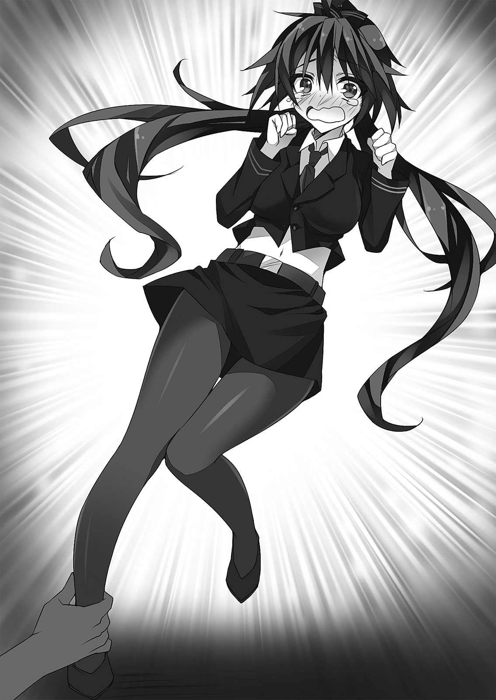
「あのさ......」
「えっ!? あ、さっきからぶつかっちゃってごめんなさい！」
「いや、あの、よ、良かったら............う、腕に、摑まってくれないかな......」
動揺していると分からないように、なるべく冷静を装って言う。暗闇のおかげで赤面しているのがバレなくて助かった。
「へええええ!?」
思いの外、桜井さんが大きな声を上げて驚いた。う、そ、そんなに大声を上げる程嫌だったか......？ 確かに、好きでもない男の腕に摑まるなんて嫌かもしれないが......。
「いっい、い、いいんですか......？ ......あの、じゃあ......すみません失礼します......っ！」
と思いきや、桜井さんはすぐに素直に俺の腕に両手で摑まった。
しっかりと摑まるわけではなく、触れるか触れないかくらいにそ～っと摑まっているので、なんだかもどかしい。
............。......あれ？ き、気のせい、かな......？
桜井さんの手は、小刻みに震えていた。
そんなにお化けが怖いのだろうか。......それとも、腕に摑まることに緊張して......？
う～んどっちにしろ、このままだと歩きにくいな......。......こ、これなら、いっそ......。
「さ、桜井さん......」
俺は、意を決して......桜井さんの顔の前に手を差し伸べた。
後から一気に恥ずかしくなり、彼女の顔が見られなくなって俯いてしまう。
「へっ............え、え、えぇええぇっえぇえええ!? こ、ここ、これって......」
桜井さんは酷くテンパった様子で大声を上げている。
「あ、い、嫌だと思うけど......こ、こうするのが一番いいと思うから......」
「...............あ...............えっと.....................は、はい.........」
桜井さんに拒否されたらもうそれまでだ......と思っていたが、彼女は小さくそれだけ返事をすると、そっと......俺の手を握った。
うおおぉぉぉお、初めて女の子と手を繫いじまった......！
いや、正確には......最近、後夜祭のフォークダンスの練習で、一応クラスの女子全員と手を繫いだりしているわけだが......それこれとは全然別物だ。
自分から手を差し伸べておいて何だが、思っていたよりずっと緊張するぞこれ......。汗をかきそうな程顔は熱いし、めちゃくちゃ心臓が高鳴ってる......。やべーもうこれは正直お化け屋敷どころじゃねえ！ 俺、なんつー大胆なことをしてしまったんだ......。
ありとあらゆる所に、怪しく光るドクロやら、ゾンビっぽい人形やら、怖がらせるための小道具が置かれているのだが、俺たちはそれらを見ても完全に無反応だった。さっきまであんなに怖かったのが噓みたいに、不思議と、全く恐怖を感じない。手を繫いでいる右手に全神経が集中してしまい、もはやそれどころではないのだ。
恥ずかしさのあまり桜井さんの顔を見ることができず、ひたすら俯いて歩いた。彼女は今、どんな顔をしているのだろう......。さっきまであんなに騒いでいたのに、手を繫いだ途端に何も話さなくなってしまった。二人の間を流れる静寂が、益々俺を緊張させる。
手を握っている状態なのに、彼女の手は震えていた。だが震えながらも、俺の手をしっかりと握ってくれている。......どうしても気になってしまい、俺は恥ずかしさを抑えて彼女の方へ顔を向けた。桜井さんは、俯いていた。暗くて表情はよく分からない。俺が見ていることに気付いたようで、俺の方に顔を向けたので、目が合ってしまった。
「..................」
目が合ったまま、硬直してしまう。緊張した面持ちで目を潤ませている彼女は、なんというか、ものすごく............可愛かった。
次の瞬間。
「このリア充どもめが～～～!! 呪ってやる～～～～～!!」
「ギャ────────────ッ!?」
突然黒い布の中から幽霊（に扮した人）が現れて、俺たちは一斉に悲鳴を上げた。
「!?」
気付くと、桜井さんは、俺の手を離し......俺にしがみついていた。
............お、おもいっきり......胸が当たってる......。
「ひゃあああああああ!? ごっ、ごごっ、ごめんなさい！ ついっ......！」
桜井さんはすぐに俺から離れると、相当恥ずかしかったのか......そのまま出口まで一目散に駆けていってしまった。
「ちょ、桜井さん......！」
慌てて俺もその後を追いかけた。
「はーい、お疲れ様でした～！」
「はあ、ぜえ、はあ......」
走って出てきた俺たちは、お化け屋敷の出口で息を切らして休憩する。
「ごっ、ごめんなさい......突然走っちゃって......」
「い、いや......」
「そそ、それに......他にもいろいろ......ほんとすみません！」
桜井さんは中での様子を思い出してか、謝罪しながら耳まで赤くなっている。
俺はといえば、先ほど抱きつかれたときの桜井さんの柔らかい胸の感触がずっと腕あたりに残っていて、幸せいっぱいな気分だった。
「えーっと......じゃ、じゃあ、気を取り直して......次、行きましょうか！」
桜井さんは不自然なくらい明るく俺に声をかけた。恥ずかしいのを必死に誤魔化しているような感じがする。
「あ、う、うん！ そうだね！ 次はえっと......『逃亡中』だっけ!?」
俺もやけに白々しい態度になってしまった。
俺たちは恥ずかしさのあまり互いに目も合わさずに、自分自身のパンフレットを見ながら会話した。
「えっと、『逃亡中』は......さ、三階だね！」
「あ、は、はい！」
会話しながら、ギクシャクと三階への階段を上る。
「占いどうですか～!? 今ならすぐ入れますよ～！」
三階に辿り着いてすぐ、女子生徒に声をかけられた。
「占い......!?」
桜井さんが少し興味ありげにしている。
「行ってみる？」
「え、いいんですか!?」
女子生徒に誘導されるまま、『占いの館』へと向かう。
教室内に入ると、机が三つほどあり、それぞれの椅子に占い師のコスプレをした生徒が座っていた。それぞれ『タロット占い』『誕生日占い』『手相占い』と看板があり、二つは既に他の客で埋まっていたが、唯一『誕生日占い』の机だけ席が空いていた。
『誕生日占い』の机の前まで誘導され、二つ並んだ椅子へと俺たちは腰掛けた。
「えーっと......ではまず、こちらの紙に、フルネームと、西暦で生年月日を書いて下さい」
差し出された紙に、言われた通り名前と生年月日を書いた。十一月十六日生まれ......と。自分の生年月日を書き終えてから、桜井さんの方をチラ見する。五月二日......桜井さんの誕生日は五月か......じゃあもう十六歳なんだな。
気付くと、桜井さんも俺の手元をじっと見ていた。
「ありがとうございます。では少々お待ち下さい」
占い師風の女子生徒は、俺たちが生年月日を書いた紙を見ながら......手元にあったパソコンのキーボードに文字を打ち込み始めた。
......まさか誕生日占いって、単にネットの無料の誕生日占いで占うだけ......？
まあ、プロの占い師でもないし、高校の文化祭なんだからそんなもんか......。
「はい！ 出ました！」
エンターキーをターン！ とかっこよく押してから、占い師の生徒は得意げに言う。
「えーっと、ではまず......彼氏、柏田直輝さんの基本の性格から読み上げますね」
「「彼氏っ!?」」
俺と桜井さんは驚いて同時に大声を上げた。
そ、そうか......そりゃあ男女二人で占いなんかに来たら、カップルって勘違いされてもおかしくないよな......。
占い師の生徒は同時に声を上げた俺たちに不思議そうな顔をしながらも、占いの結果を読み上げ始めた。
「ええっと......柏田直輝さんの基本性格は、温厚で優しくお人好し。自分の思い込みで偏見や反発心を持ったりしやすい。自分の意見はしっかり持っていて、頑固な面も。それでいて、優柔不断で気が多い。人見知りが激しく社交性に乏しいが、一度仲良くなった人とはトコトン仲良くなる。根は真面目だが、誘惑に惑わされやすい。普段は控えめで消極的な性格だが、ここぞというときはしっかりやる人」
「めっちゃ当たってますね！」
桜井さんが大きな声でおもいっきり肯定したので、俺はその反応にびっくりした。
当たってる......か......？ 自分では微妙なんだが......。っていうか、偏見や反発心を持ちやすいとか頑固とか優柔不断とか社交性に乏しいとか誘惑に惑わされやすいとか、決して嬉しくないこともいっぱい言われてるんだが......俺は桜井さんの目にそう映っているのだろうか......？ 軽くショックだ。
「それから......次に、恋愛運。ほうっておけない、と周りの女性から思われており、好意を持たれることが多いでしょう。ぶっちゃけ、モテます」
モテる!? この俺が!? 何かの冗談ではないのだろうか......。
「あ、当たってないな～......はは......」
言いながら、ふと桜井さんの反応が少し気になってさりげなく彼女の方を見ると......。
「!?」
桜井さんは、眉間に皺を寄せて難しい顔をしていた。口元を手で押さえている。この反応は、一体......？
「それでは次、桜井小豆さんの基本性格を読み上げます」
「............えっ!? は、はいっ！」
はっ、と我に返った桜井さんは、少し緊張した面持ちで返事をした。
「桜井小豆さんの基本性格は......周囲からの信頼が厚く友達も多い人。自己主張が強い割には協調性が高く、相手に不快感を与えない。ただ、本人は人の好き嫌いが激しく、自分が苦手な人物は避けたりしてしまうが、同性、異性問わず一度好きになった相手には素直に好意を示したり尽くしたりする。また、自分が興味を持ったことに関しては自分が納得のいくまで極めるという面も。気分が高揚すると周りが見えなくなってしまうところがあるので注意」
「めっちゃ当たってんね！」
「えっ!? そ、そうですか──......？」
桜井さんはあまり納得がいかないというような感じで不満げにしている。いや、俺よりいいことたくさん言われてるし、いいじゃねえか......と、内心思った。
「恋愛運......モテるのに、運やタイミングが悪かったりして、うまくいかないことが多い。タイミングを見極めて計画的にアプローチすることを勧めます」
「はああっ！ な、なるほど～！」
桜井さんは占い結果を聞くと、すぐに鞄から手帳とペンを取り出してメモを取り始めた。え......？ 基本性格の話のときには一切メモをとる様子などなかったのに、突然どうしたのだろうか。そんなにためになるようなことを言われたのか......？
......あ、そうか、そういえば、色々あって忘れてたけど、以前遊びに行ったとき桜井さんも『好きな人がいる』って言ってたもんな......。
好きな人、か......。俺と今こうして一緒に文化祭を回ってくれていても、他に好きな男がいるんだもんなあ......。その事実を聞いたときはあまり何も思わなかったが、なぜか今は......少し寂しく思っている俺がいる。占いの結果をそんなに必死になってメモるほど、好きな相手なんだな......。一体どんな奴なんだろう。正直、めちゃくちゃ羨ましい。
「......？ か、柏田君......なんで遠い目になってるんですか？ なんか魂抜けてますよ？」「......えっ!? ああ、ごめん、何でもない！」
......まさか本人に、『あなたに好きな人がいることを思い出して悲しくなってました』なんて言うわけにもいかないので、慌てて誤魔化した。
「では、最後に二人の相性を発表します」
「相性!?」
俺と桜井さんはまたしても同時に声を張り上げた。まさか相性まで占われるとは想定していなかったのだ。俺たちはカップルではないというのに......。二人で占いに来た時点で、完全にカップルだと誤解されてたんだな......。カップルではない俺と桜井さんが相性占いの結果を聞くのは大概気まずいが、しかしここで「いや相性はいいです！」なんて言うのはそれ以上に気まずい。よって、このまま黙って聞くしかない。
「お二人の相性は......ドゥルルルルルルルルルル............」
占い師の生徒は巻き舌でドラムロールを再現し始めた。いや、そういうのいいから早くしてくれ。
「じゃーん！ なんと......一〇〇パーセントですっ！」
占い師の生徒は俺たちに向かって拍手をしながら衝撃の結果を口にした。
「......えっ!?」
一〇〇パーセント、だあ......？ そんな結果、簡単に出るわけないだろ......。相性占いをしたカップル全員にそう言ってんじゃねえのか？
「ほんとに一〇〇パーセントなんですよ！ ほら！ 正直私だってびっくりしてます！ こんな結果出たの初めてですよ！」
俺が疑いの眼差しを向けていたことに気付いたのか、占い師の生徒は慌てた様子でパソコン画面を俺たちに向けて見せてきた。......そこには確かに、『柏田直輝さんと桜井小豆さんの相性は一〇〇％です』という文字があった。
「非常に相性の良い二人です。趣味も合い、二人でいると楽しい時間を過ごすことができます。この二人であれば、どんな困難にも打ち勝つことができるでしょう」
占い師の生徒はすらすらと結果を読み上げる。俺はただただ驚いていた。確かに今まで、桜井さんと一緒にいて楽しいと感じることが多かったし、女の子でこんなに趣味が合う人って他にいないな、とも思ったことがあったけど......それは相性が良かったから、なのか......？ いや、まあこんなネットの無料占いを、どこまで信じるかって話だけどな......。
先ほどから一言も発してない桜井さんの様子が気になり彼女の顔を見ると......桜井さんは目を大きく見開いたまま放心状態になっていた。完全に硬直していて、少しも動かない。
「さ、桜井さん......!?」
「......はっ！」
俺の呼びかけに、慌てて我に返った。何なんだその反応は......？ 俺と相性が良かったことが、そんなに放心状態になるほどショック、だったのか......？
「それでは、誕生日占いは以上になります。ありがとうございました」
「あ、はい、ありがとうございました......」
俺たちは占い師の生徒に挨拶をしてから、『占いの館』を後にした。
「いや～～～～すごく面白かったですね！ あれで無料なんてほんと素晴らしいです！ わたし占いって今まで半信半疑でしたけど、今日のはかなり信じられると思いましたよ！」
桜井さんは廊下を歩きながら、『占いの館』をベタ褒めし始めた。
「え？ あ、うん......そうだね？」
「え～っとじゃあ次はー！ もうこのまま『逃亡中』に行っちゃってオッケーですかー!? 柏田君も行きたいところがあったらどんどん言って下さいよー!?」
先ほどお化け屋敷で怯えていた彼女とは別人のように、ハイテンションでそんなことを言いながらスキップしている。......？ 何かめちゃくちゃ機嫌良くなってないか？
今の占いがそんなに楽しかったのだろうか？ 何か本人的にすごく嬉しいことを言われたとか？ なんだろう......確か基本性格は結構いいこと言われてたけど、本人は不服そうだったよな。もしくは、恋愛運？ でも恋愛はうまくいかないとか言われてたし......。
......ええっと、もしくは、..................いや、最後のアレで機嫌が良くなるだなんて......それだけは..............................ありえない、よな......？
「ん!? 柏田君、どうかしたんですか!?」
桜井さんが不思議そうに声をかけてきた。気づくと俺は、真剣に考え込んでしまっていたようだ。
「あっ、ごめん！ なんでもないよ！ えっと、次は『逃亡中』だっけ？」
まさか本人にそれを聞くわけにもいかないので、とりあえず一旦考えるのをやめ、慌ててごまかした。
上機嫌の桜井さんと共にそのまま、『逃亡中』という出し物を行っている教室へと向かった。
「いらっしゃいませ～！ 二名様ですね～！」
教室内へと入ると、早速係の生徒に案内される。
『逃亡中』......って、最近似たようなタイトルのバラエティ番組がよくＴＶでやってたような気がするけど、それの模倣なのだろうか？ 確か、出演者の芸能人たちがハンターから逃げ惑うっていう......簡単に言えば、規模がでかい鬼ごっこだ。
「『逃亡中』は、その名の通りお客様が逃亡するゲームです！ 制限時間は一〇分で、一〇分間追いかけてくるハンターから逃げ切ることが出来たら、お客様の勝ちです。賞品を差し上げます」
係の人は説明しながら、ゼッケンを渡してきた。やっぱり、例のバラエティ番組をパロってるようだ。
「ハンターから逃亡者だと分かるように、このゼッケンを着て下さいね」
言われた通り、その場で服の上からゼッケンをかぶる。
「人のいるところは危ないですので、出し物が行われてない一階上の四階と、その上の五階、六階のみを使います。その中で逃げて下さい。ハンターは男子なので、女子トイレには逃げ込まないで下さい。お客様がこの教室から逃げてから一分後に、ハンターが追いかけます。こちらがハンターです」
ハンターと紹介されたのは......スーツを着てサングラスをかけた男子生徒二名だった。細身で背が高く、見るからに足が速そうだが、運動部だったりするんだろうか......？
一〇分間、足の速そうな二人に追われ続けるのか......。なんか、既に勝てる気がしないのだが......。
「ちなみに、二人一緒に逃げても、別々に逃げても構いませんよ。一〇分経ってまだ捕まっていなければ、この教室に戻ってきて下さいね」
既に時間がセットされているらしき小型タイマーを渡される。
「はあ......」
「スタートしたら真っ先に階段で四階よりも上に上がって下さいね。それでは位置について、よーい......」
まだ心の準備ができていないが、そのかけ声に慌てて走る準備をする。
「スタート！」
俺たちは一斉に教室から飛び出した。
「と、とりあえずそこの階段から......」
四階に上がろう、と桜井さんに言おうとして彼女を振り返ると......。
「......えっ!?」
既に、桜井さんの姿は俺より遥か後ろにあった。
驚いた俺が走るスピードを遅くすると、なんとか桜井さんが追いついてくる。
......もしかして桜井さん、走るの遅い？
「はあ、はあ......ごめんなさい、遅くて......」
「いや、俺こそちゃんと見てなくてごめん......とりあえず上の階に行こう！」
「は、はい......！」
近くあった階段を駆け上がる。
「はあ、はあ......」
桜井さんは既に疲れ切った様子で、階段を必死に上っている。
「ご、ごめんなさい......別々に逃げた方が......いいかも、しれないです......足手まといになっちゃう、し......」
桜井さんは息を切らせながら、申し訳なさそうに言う。
「いや、一緒に逃げよう！」
俺は考える間もなく即答していた。だって、一人で逃げたって何も面白くなさそうだしな......。
「え......」
そんな俺の言葉に、桜井さんは驚いて目を見開いている。
「......？ ど、どうしたの？ 早く行こう！」
早くしないとハンターに追いつかれる......。
「は、はい......！ ありがとうございます......！」
桜井さんは何やら感激したかのような様子で礼を言い、そのまま階段を駆け上がって俺に追いついた。
四階に辿り着き、とりあえずこの階にいようということになり、二人で廊下を走る。ハンターは二人もいるので、どこからやってくるか分かったもんじゃない。
「はあっ！ あれ！」
桜井さんが大声を上げた。なんと、早速前方にスーツを来たサングラス姿の男を発見してしまった。俺たちに気付いて、こちらに向かって一目散に走ってくる。俺たちは慌てて方向転換して今来た道を戻る。
「はあ、はあ......」
走りながら、後ろを振り返る。やばい、桜井さんが遅れてる......こ、こういうときは......。
「ひゃっ!?」
「ごっ、ごめん！」
俺は戸惑いながらも彼女の手を摑んだ。桜井さんがハンターに追いつかれないためにはこうするしかなかった、と彼女にはどうにか理解してもらいたい。ま、まさか......一日のうちに桜井さんと二回も手を繫ぐことになるなんて......。
「桜井さん、こっち！」
階段を見つけたのでまたもやそのまま駆け上がる。
たかが文化祭のゲームになんでここまで必死になっているのか分からないが、普段味わえないスリルに、途中から俺は楽しくなってきていた。走ることは、唯一得意なことだしな......。
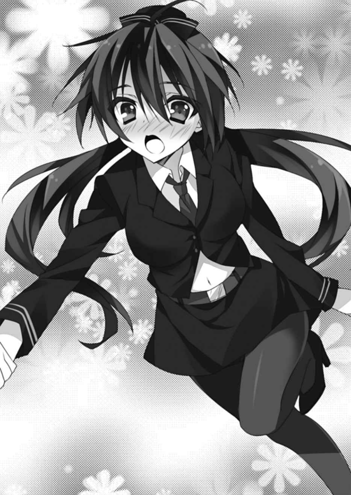
「ふう......なんとかまいた、かな......」
五階に辿り着き、ハンターの視界から逃げることができたので、一旦落ち着いた。まあ、油断はできないのだが......。
「はあ、ぜえ、はあ......」
桜井さんは完全に疲れ切って床にへたりこんでしまった。
「あっ......ごめん！」
手を繫いだままだったことに気付き、俺は慌てて手を離す。
「い、いえ......むしろ、ありがとうございます......柏田君、足速いんですね......すごく、かっこ......いえ、頼りになりますね......！」
桜井さんは息を切らしながらも、目を輝かせて俺を見つめてくる。
「え、いや......ってかごめんね、無理して走らせちゃって......」
「いえ、わたしが......体力ないのが悪いので......」
しかし、いつまでもここで休んでいるわけにいかない。いつハンターに見つかるか気が気じゃなかった。だが、桜井さんが未だに息を切らしている様子を見ると、これ以上無理して走らせるのも可哀想になってくる。
制服のポケットからさっき渡された小型タイマーを取り出して時間を確認すると、あと四分程で制限時間である一〇分が経過するところだった。よし、ここは一か八か......。
「制限時間終わるまで、教室の中に隠れてようか」
我ながらいい案だと思った。これ以上桜井さんに大変な思いをさせなくて済む。
「え、ほんとですか!? 助かります！」
二人で空き教室に入り、念のため前の扉と後ろの扉を両方閉める。
「......なんか足音聞こえません？」
桜井さんが怯えた顔つきをしながら、小声で言う。慌てて耳を澄ませた。
............確かに、走ってくる足音が聞こえてくる。出し物が行われていないこの階に人はいないはずなので、おそらくハンターだ。ハンターがこの階にいる！
「教室に入ってくるかも......隠れよう！」
俺は教室を見渡して隠れられそうなところを探す。
............どう考えても、完全に身体が隠れられそうなところは一つしかない。
「ど、どうしよう......柏田君、早く隠れないと......」
後ろから怯えている桜井さんの声が聞こえてきて、俺は決意した。
「......えっ!? ほ、ほ、本当に......そこに......隠れるんですか!?」
桜井さんは赤面して酷く動揺している。
「ご、ごめん、ここしかないんだ............」
もう余計なことを考えないようにして、俺たちは隠れて息を潜ませた。
............。........................。
俺はつい先ほどの自分の判断を、酷く後悔した。
いくら隠れる場所がここしかないからって、なんて無謀なことをしてしまったんだ俺は......!?
そこは俺が思っていた以上に狭く、密着せざるを得なかった。
咄嗟だったが、一応桜井さんの胸が俺に当たらないよう考慮して、俺の前に桜井さんが、俺に背中を向けて隠れているような状態になっていた。俺のすぐ目の前に彼女の後頭部がある。シャンプーか何かのいい匂いが漂ってきて、なんとも言えない、いい気分になってきてしまう。ここぞとばかりにバレない程度に匂いを嗅いでしまう俺は、我ながら少し変態っぽかった。
なるべく桜井さんの身体に自分の身体が当たらないよう、限界まで後ろに下がってはいるが、それでも俺の太ももあたりに、彼女のお尻や、ミニスカートから出た綺麗な生足が......僅かに当たっていた。
くぅ......なんだこの天国のような地獄のようなひとときは！ 早く終わって欲しいような、いや、永遠に続いて欲しいような......。しかしもう俺の下半身はとっくに限界を迎えている。少しでも桜井さんが今の位置より後ろに下がってこようものなら俺終了のお知らせだ。
「柏田君......せ、狭くない......？」
「!?」
突如、桜井さんが首だけで振り向いて、顔を俺の方に向けた。
いや狭いけどそれどころじゃないよ！ 頼むからそれ以上顔を近づけないで!? 小声で囁かないでくれぞくぞくするから！ 普段敬語なのになぜタメ語になる!? 興奮するだろ！ ありとあらゆる萎える映像を色々脳内に垂れ流して必死に耐えていたというのに、全部無駄になった。
......このまま恥を曝すくらいなら、いっそここから出てハンターに捕まった方がマシかもしれない......たかがゲームだしな......。
「..................」
桜井さんは、俺の方に顔を向けたまま、黙って俺のことを見つめていた。
俺は今きっと恐ろしい形相になっていることと思うのだが......なぜそんなに見つめてくる!? こんなに至近距離で見つめられたら、もうどうにかなってしまいそうだった。少し顔を近づければ、キスしてしまうくらいの距離で............俺は自分の脳みそが溶けていくかのような感覚に襲われ............
バンッ!!
「!?」
次の瞬間、突然ものすごい勢いで扉が開けられ、明るくなった。
「発見しました！」
目の前には、スーツ姿のハンターがいた。
俺たちは、教室の片隅にある掃除用具箱の中に隠れていたのだ。
え......？ ハンター、いつの間に教室に入ってきてたんだ......？ なんか頭がぼーっとしてて全く気付かなかった......！
桜井さんは勢いよく掃除用具箱から飛び出して俺から離れた。そのまま床に座り込み、俺の顔を見ようとしない。
ううっ......そんなに一刻も早く俺から離れたかったのか......？ 後ろからだと彼女が今どんな顔をしているのか見えないが......耳が真っ赤になっていることだけは分かった。
もしかして、恥ずかしかった......のだろうか？
俺はといえば、なんだか放心してしまって、硬直したまま掃除用具箱から出られずにいた。
その時突然、ピピピピピピ......と、アラームか何かの音が二重に鳴り響く。
俺は渡された小型タイマーをポケットから取り出す。
同時に、ハンターもポケットから小型タイマーを取り出した。
「今ちょうどゲームの制限時間が終わりました」
「えぇ──っ!?」
ってことは、本当にあと少しだったのか......。悔しいな......。
「惜しかったですねー。では、ゲームはこれで終わりになります。良かったらまたチャレンジして下さい！」
「は、はあ......」
それから俺たちは受付をした教室まで戻り、タイマーとゼッケンを返して預けていた荷物を引き取り、教室を後にした。
「..................」
先ほど、掃除用具箱の中で至近距離で見つめ合ったことが頭から離れず、俺は恥ずかしさのあまり桜井さんの顔も見られない状態になっていた。桜井さんも気まずいのか、何も喋らない。もしかして、怒っていたらどうしよう......。
「あ、あの......このあと......どうしましょうか？」
そう思っていたとき、桜井さんが沈黙を破ってくれたので少しほっとする。
「あ、うん......どうしようか......」
「喫茶店やってまーす、どうですか～!?」
俺たちの耳に、呼び込みの声が飛び込んでくる。
「走り回って疲れたし......喫茶店入ってみる？」
「あ、そうですね！」
どこかでゆっくり落ち着きたかったので、ちょうど良かった。
「二名様ですね、こちらの席どうぞ～！」
喫茶店をやっている教室へ入ると、すぐに席へ案内された。
「俺、オレンジジュースで......」
「あ、わたしもそれでお願いします」
「少々お待ち下さ～い」
係の生徒が行ってしまい、再び沈黙が訪れてしまう。
「............あ、あのさ......なんか......色々と、無茶させちゃってごめんね......」
『逃亡中』のゲーム中、無理して走らせたりした上に、最終的にはあんな狭いところに俺なんかと一緒に閉じ込めてしまって、桜井さんが気分を害していないか不安だった俺は、謝罪の言葉を口にした。
「......えっ!? いえ、そんな！ むしろ、色々助けてくれてほんとにありがとうございました！ 本当に逃亡してるみたいな気分になれて、スリルいっぱいですっごく楽しかったです！」
彼女が笑顔でそう言ってくれたので、俺は心から安堵した。
「その、か、柏田君って......改めて、頼りになるんだなあ......って、思っちゃいました」
「えっ!? そ、そうかな......？」
桜井さんが恥ずかしそうに付け加えた。言われた俺の方も恥ずかしくなってくる。お、お世辞だとしても......嬉しいなあ。
すぐに注文の品が運ばれてきた。
「あ、あのさ......さっき桜井さん、『占いの館』で、すごいメモとってたけど......」
俺は先ほどから気になっていたことを話題に出してみる。
「──っ!?」
俺の言葉に、彼女はジュースを喉に詰まらせたようで、咳き込み始める。
「ケホッ、ケホッ......」
「だ、大丈夫!?」
「あ、す、すみません......」
そんなに驚いたのか......。
「あ、は、はい......メモ、とってました......見られてたんですね......」
桜井さんは恥ずかしそうにしている。
「あ、いや......前に好きな人がいるって言ってたから、それで一生懸命メモとってるんだろうな、って思ってさ......」
「えっ......!? あ、は、は、はい......」
「その後、好きな人と......ど、どうなのかな～って......ちょっと気になって......」
なるべくさりげない感じを装って、俺は尋ねる。
俺は桜井さんと好きな人がその後どうなっているのか、非常に気になっていた。これで、『この間から付き合うことになりました～！』とか返ってきたら、結構凹むな......。
「えっ!? 好きな人と、ですか......!?」
桜井さんは俺の質問に、俺が想像していた以上に戸惑っている。
そんなに、聞かれたくない質問だったのだろうか......？
「え、ええっと......そうですね......と、特に......何も......進展ない感じ、ですかね......」
彼女は俺から視線を逸らしながら、しどろもどろに返答した。
進展なし、か......。ああ、桜井さんには申し訳ないが、その返答に少し嬉しくなっている俺がいる......。
「そうなんだ......」
「あっあの！ か、柏田君は......どうなんですか......？ その、好きな人と......」
「え、俺!? うーん............俺も、進展なし、かな......」
桜井さんと以前好きな人の話をして以来、俺は好きな相手である長谷川と......一緒に他校の文化祭に行ったりはしたものの、特にこれといって大きな進展はなかったので、正直に答えた。
「あっ、そ、そうなんですか！ ............あ、あの......柏田君の......好きな人って......」
「えっ!?」
「......い、いえ、なんでもないです！」
桜井さんは慌てて笑顔を浮かべて取り繕った。
今、好きな人を聞かれるのかと一瞬思ったが......そういうわけではなかったのだろうか？
「ありがとうございました～！」
充分休むことができたので、俺たちは喫茶店を後にした。
「えっと、この後どうしよっか。他に行きたいとこ......」
俺がパンフレットを広げて桜井さんに尋ねようとした、そのとき。
「──！」
長谷川の姿が目に入った。
彼女は、一人でパンフレットを持って廊下を歩いていた。一人で文化祭を回っている......のか？ さっきあれほど探していたときは見つからなかったのに、こんなところで出会うなんて......。
「は、長谷川......！」
「柏田君......」
長谷川も俺の姿に気付いて、俺と、隣にいる桜井さんの姿を見ている。
「......あっ！ さっきの、王子様役の......」
桜井さんは長谷川の姿を見て、そんな言葉を口にした。
今長谷川は王子の衣装から制服姿へと着替えていたが、桜井さんは顔を見て気付いたようだ。
えーっと、俺はこういうとき......一体どうしたらいいんだ？
「あ、えっと、この人は......俺と同じクラスの、長谷川翠......さん。で、こっちは......Ｄ組の桜井小豆さん......です」
とりあえず俺は、狼狽しながらもなんとか二人を互いに紹介した。
「宜しくお願いします！ 王子役、すっごく似合ってて格好良かったです！」
桜井さんは笑顔で長谷川に挨拶した。前にも思ったけど、桜井さんってほんとコミュ力あるよなあ......。
「あ......ありがとう。宜しく」
長谷川はそれに、少し戸惑いながらも礼を言った。
「あ......長谷川、文化祭見て回ってたの......!? い、委員会の方とかは......」
俺は動揺しつつ、長谷川に質問を投げかける。
「ええ。文化祭実行委員の仕事を手伝っていたのだけれど、さっき終わったから、出し物を見て回っていたところ」
「あ、そ、そうなんだ！」
......ということは、やはり長谷川は一人で文化祭を見て回っていたのか......。先ほどまで一人で見て回っていた俺には、それがどれほど寂しいことかが分かる。
ああ、どうしたらいいんだこの状況......長谷川も誘って、桜井さんと三人で文化祭を見て回る......なんて、やっぱり都合が良すぎるだろうか？ 思わず、長谷川と桜井さんの顔を交互に見てしまう。長谷川と桜井さんは初対面だし、無理があるかなあ......。俺はどうしたらいいか分からず、ひたすら狼狽えていた。ああ、本当に俺って、こういうところがダメなんだよな......。
「..................」
気付くと、桜井さんが俺の顔をじっと見ていた。動揺している俺を見て、不思議に思っているのかもしれない。
「では、私はこれで......」
長谷川が俺たちにそう声をかけた。
「えっ!? あ、ちょっと待っ......」
俺が長谷川を引き止めようとした、そのとき。
「......あ～！ そ、そうだ......わたし......この後......クラスの当番あるの忘れてました～っ！」
「......!?」
桜井さんの言葉に、俺は驚いた。
クラスの当番......？ 桜井さんは俺たちのクラスの劇の後もクラスの当番だったと言っていたが......またあるのか？
「なので、すみません......わたしは、自分のクラスに戻りますね！」
「え......えっ？ あ......うん......」
俺は戸惑いながら、彼女の言葉に返事をする。
「じゃあこれで、失礼します！」
桜井さんは笑顔で俺たちに挨拶をして、そのまま自分のクラスへと戻ろうとする。
「が、頑張ってね......」
突然のことに驚きながらも、彼女の背中に声をかけて見送ろうとすると、突然桜井さんが何かを思い出したかのように振り返った。
「あっ！ ......あの......柏田君......い、一緒に回ってくれて......ありがとうございました！ その......すっごく、楽しかったです！ ......それじゃあ！」
桜井さんは満面の笑みでそれだけ言うと、すぐにまた俺たちに背を向けて、そのまま早足で自分のクラスへと戻っていった。
お礼を言いたいのはこっちの方だ......。俺だって桜井さんと回れてすごく楽しかった。だが、俺がそんな言葉を言う暇もなく、桜井さんはあっという間に俺の前から去ってしまった。
残された俺たちの間に、少し気まずい空気が流れる。
「......え、えっと......長谷川......もし、一人で回ってるんだったら......い、一緒に回らない......？ 俺、その、一緒に回る人いなくなっちゃったから......」
我ながら調子がいいとも思ったが、せっかくのチャンスなので、勇気を出して長谷川を誘ってみる。
「......えぇ、私でいいのなら......」
長谷川は少し戸惑いながらも、俺の誘いを受けてくれた。
こうして俺は、想い人である長谷川と一緒に文化祭を回ることになった。
３
「長谷川は、今までどこ回ったの？」
廊下を歩きながら、長谷川に質問を投げる。
「まだそんなに回っていないわ。主に展示を回っていたところかしら......」
「そ、そっか......」
そりゃあ、一人でお化け屋敷とか逃亡中とかは入れないよな......。
「これから行こうと思ってたところとか、ある？」
「そうね、えっと......ここ、かしら......」
長谷川は俺にパンフレットを広げて見せてくれた。
そこには、『爆笑寸劇』との文字が書かれていた。
「へえ、寸劇かあ......１─Ｃの教室でやってるんだね」
いかにも、お笑い好きである長谷川らしい、と思った。
「あ、そうだ......柏田君。実は、この後莉緒が来ることになっているの」
「え!? あ、そうなんだ！」
莉緒......というのは、中学時代の長谷川の親友の園田莉緒さんのことだ。前々から話は聞いていて、先月園田さんの高校の文化祭に長谷川と行った際、初対面した。
そうか、園田さんが来るのか......それは想定外だった。
「ご、ごめん......そうとは知らず軽々しく誘っちゃって......俺、邪魔者になっちゃうんじゃ......」
長谷川の言葉を聞いて俺は不安になった。
「え......？ そんなことないわ。むしろ、莉緒は喜ぶと思うわ」
長谷川は微笑みながら、俺の言葉を否定してくれた。
ということは、三人で文化祭を回ることを認めてくれた......と、とっていいのだろうか。
園田さんがもうすぐ到着するとのことだったので、俺と長谷川は『爆笑寸劇』の教室へ移動する前に玄関で園田さんを待つことにした。
「翠～っおっまたせー！」
玄関に到着するや否や、園田さんは長谷川に飛びついた。突然のことに驚いて、二人を凝視してしまう。
「ちょ、ちょっと莉緒......玄関でなんてことするのよ！」
長谷川が照れつつ困惑した表情で園田さんを注意するが、彼女は全く気にしていない。嬉しそうな笑顔で長谷川にじゃれついているその姿はまるで......長谷川の飼い犬？ って、そんなこと失礼だから本人には言えないが......。
「あっ、柏田君じゃん！」
園田さんはやっと俺に気付いてくれたようで、人懐っこい笑みを俺に向けた。
「ど、どーも......お久しぶりです」
「つーかなんで敬語!? タメじゃんタメ！」
なんとなく敬語になってしまったのを、園田さんに即指摘された。
そ、そうだよな......同い年なんだし、今後はタメ語で話すことを心がけよう......。
「ってかさー、ほんとは今日翠の晴れ姿を見たかったんだけど、寝坊しちゃってさ～」
園田さんは頭をかきながらぺろっと舌を出した。長谷川の晴れ姿......というのは、勿論劇の王子役のことだろう。
「寝坊って......もう午後の二時半よ？ あなた一体、何時に起きたの？」
「昨日遅くまで部活だったから疲れてたみたいで、気付いたらすげー寝ててさあ～」
園田さんはくしゃっとした笑顔で笑う。長谷川は呆れた様子でため息をついた。
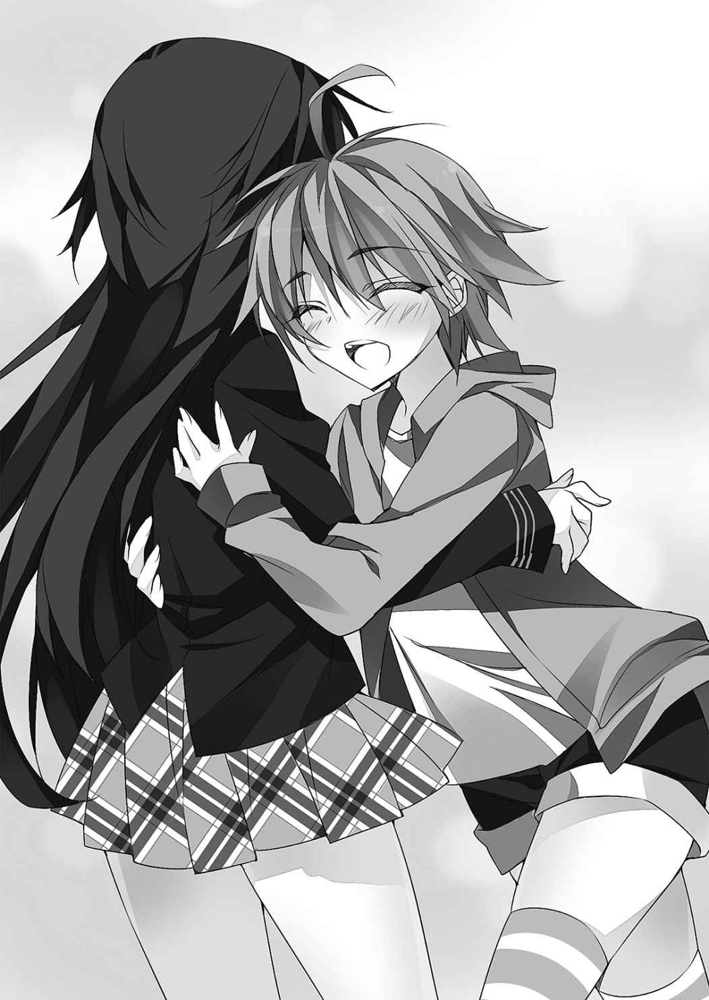
「遅くまで部活......？ ってことは、運動部とか......？」
なんですか？ と聞こうとしてしまったが、辛うじて直前で敬語を回避した。
「そうそう！ バスケやってんだ～」
バスケ、か......。なんとなくの見た目のイメージだけど、運動得意そうだもんな。そんな遅い時間まで練習があるなんて、大変だな。
「でもさー、劇は明日もやってるんだよな？ だから、明日見ればいっかな～って」
「莉緒、あなた......二日連続でうちの文化祭に来るつもり？」
「おうよ！ まー明日は、バイトがあるから劇見たらすぐ帰んなきゃだけどな」
二日連続で来るほど長谷川の王子役が見たいのか......。園田さんの長谷川に対する気持ちも、相当なもんなんだな。
「ってかさー、めっちゃお腹すいてんだけど、なんか食べていい!?」
「昼食、食べてきてないの？」
「昼どころか朝も食べてないぜ！ 寝坊したからな！」
「偉そうに言うことじゃないでしょう！」
園田さんと一緒にいると、長谷川は突っ込みに回るのか......。これまた新発見だ。
園田さんの希望で、校庭の模擬店で何か食べることになった。既に昼ご飯を済ませている俺と長谷川は何も食べず、園田さんがフランクフルトとたこ焼きを買って食べている。朝から何も食べてないとはいえ、すごい食欲だ。下手したら俺より食べる量多いんじゃないだろうか？ 運動やってるから消費カロリーもすごいんだろうけど。
「いやーうまいっ！ んー？ 翠も食べたいのかー？ どうしてもって言うんなら食べさせてやらないこともないぞ？ ほら、あーん」
園田さんが、たこ焼きを一つ割り箸に挟んで長谷川の口元へと運ぶ。
おおおお、まさかこんなところで女の子同士......それも長谷川への、『あーん』が見られるなんて！ 俺にとってはちょっとしたご褒美だぜ。
「ん？ あ、熱くて食べられないのか？」
口を開けようとしない長谷川の様子を見て、園田さんがたこ焼きをフーフーし始めた。
「余計なことしてないでさっさと食べなさい」
長谷川が呆れた様子で冷たく言い放つ。ちょっとＳっぽい長谷川も最高だった。冷たさの中にも、子供を叱るお母さんみたいな優しさが含まれているような気がした。
「ふぅ～っ満腹満腹！ じゃ、次どこ行くー!?」
満足げに自分自身の腹を軽く服の上から叩いている園田さんに、「やめなさい」と長谷川が注意する。
「あ......さっき『爆笑寸劇』に行きたいね、って話になってたんだけど......」
俺は、パンフレットを開いて園田さんに説明した。
「『爆笑寸劇』～!? どーせ翠の趣味だろ～っ!?」
「な、何よ......悪い？」
「いやーっ、高校生がやる寸劇......コントなんて、とても面白いとは思えねえなあ。タイトルに『爆笑』を自ら付けちゃってるところから若干滑ってるし？ ま、どんなもんか怖いもの見たさで見に行くのも悪くないかもなーっ！」
一応園田さんの同意（？）も得ることが出来たので、俺たちは三人で１年Ｃ組の『爆笑寸劇』へと向かうことになった。
「あ......ごめん、その前に、トイレ行ってもいいかな？」
「ええ。勿論構わないわ」
爆笑寸劇へと向かう前に、俺の希望でトイレへと向かう。長谷川と園田さんも行くというので、トイレの前で一旦別れた。用を足してからトイレを出ると、二人の姿はまだそこになかった。
男子トイレの前で長谷川と園田さんを待ちながら、文化祭を楽しんでいる人たちを観察する。うちの学校の生徒もいれば、私服の人や、別の学校の制服の人もいる。
「......えっ!?」
そんな中......俺は、ここにいるはずのない人物の姿を、見つけてしまった。
「やっ......山本さん!?」
俺は驚きのあまり、その名前を声に出していた。
そこには、俺のバイト先の先輩である、山本さんがいたのだ。
一体なぜ、彼がここに？
「えっ......柏田君!?」
山本さんの方も、俺の姿に驚いている。
「びっくりした～。柏田君って、藤見高校の生徒だったの？」
「はい、そうです......。山本さんは、なんでここに？」
昨日の電話で確か、今日急用ができてバイトに入れなくなったと言っていたが......。
「俺は......妹がこの高校に通ってて」
「あ、それで見に来たんですか!? 昨日電話で言ってた急用って、もしかして......」
「あ、うん......恥ずかしいから言えなかったんだけど、そうなんだ......。あのあと無事シフト代わってくれる人が見つかってさ」
山本さんに妹がいることは知っていたが、まさかうちの高校の生徒だったなんて......こんな偶然もあるもんなんだなあ。
そういえば、山本さんってシスコンだとかって噂をバイト先で聞いたことがあるが......バイトのシフトを代わってもらってまで妹の高校の文化祭を見に来るくらいだし、まんざらデマでもないのかもしれない......なんて、失礼ながら思ってしまった。
「まさか妹さんがうちの学校の生徒だったなんて......驚きました」
でも、少なくとも俺の知り合いではないようだな。山本なんて名字の女子、知らないし。
「はは、でも、本人に言ってないからなあ......会ったら追い返されるかもな......」
山本さんは苦笑いを浮かべて言う。まんざら冗談を言ってるようにも見えない。
......そういえば以前、妹に嫌われてる、みたいなこと言ってたよな......。何か複雑な事情でもあるのだろうか？
その時、山本さんが俺の背後に視線を移し、大きく目を見開いてひどく驚いたような表情になった。
「......翠......？」
彼の口にした名前に驚いて、俺は後ろを振り返る。
そこには、女子トイレから出てきた長谷川と園田さんがいた。
長谷川が......これまた、ひどく驚いた表情で立ちすくんでいる。
「な......なん......で......？」
長谷川は、驚いているような、悲しんでいるような、なんとも言えない表情になって......消え入るような声で言葉を発した。
「......今日が文化祭だって、母さんから聞いたんだ......」
山本さんが、一歩ずつ長谷川の近くへと歩み寄る。
......これは一体、どういうことだ......？
まさか......山本さんの妹って、長谷川!?
いや、でも......長谷川と山本さんじゃ、名字が違うのに......。
「..................あ、私......ちょっと、急用を思い出して......」
「えっ!?」
長谷川は酷く動揺した様子でそれだけ言うと、突然俺たちに背を向けて走り出した。
「......長谷川!?」
「翠!?」
驚いた俺と園田さんは、それぞれ長谷川の名を呼びながら慌てて長谷川の後ろ姿を追いかけた。しかし......人混みに紛れてしまい、俺たちは長谷川の姿を見失ってしまった。
「翠......どうしたんだ？」
園田さんが心底心配そうな顔で呟いた。俺も、彼女と同じ気持ちだった。
一体......長谷川はどうしたのだろう？ 今のは、完全に......逃げたんだよな......？ いつも冷静沈着な長谷川が、あんな風に動揺して逃げ出すだなんて......。
足音がして振り向くと、山本さんが俺たちの後を追いかけてきていた。
「あ............あの、......もしかして......山本さんの妹って......」
俺は恐る恐る、口を開いた。
「ああ......長谷川翠が、俺の妹だよ」
山本さんの言葉に、俺も園田さんも呆然としてしまった。
園田さんの様子を見るに、園田さんも長谷川の兄である山本さんと、たった今初めて会ったようだ。
園田さんはポケットから携帯を取り出して、電話をかけ始めた。相手は勿論、長谷川だろう。
「ちょっと翠、勝手に逃げてどこ行ったんだよ～......えー？ あー、うん......」
少し会話をしてから、園田さんは電話を切った。
「ちょっと翠、今混乱してるみたいだから......ここは、あたしに任してもらってもいーかな？ ま、全然大したことはねーと思うんだけどさ」
園田さんは苦笑いを浮かべて俺に言う。
「あ......うん、分かった......長谷川のこと......宜しく」
「柏田君、また別の機会にゆっくり遊ぼうな！」
園田さんは俺に挨拶してから、山本さんにも会釈して、そのまま長谷川の元へと走って行った。
長谷川の様子が心配だったが......園田さんに任せておけば大丈夫、だよな......。
俺は、ゆっくりと山本さんの方へと向き直って、彼を見た。
「あ、......あの......」
聞きたいことがありすぎて、なんと声をかけていいのか分からずにいると......山本さんの方から、俺に声をかけてくれた。
「......柏田君、この後、少し時間あるかな......？」
＊
俺と山本さんは校庭に出て、模擬店で飲み物を買ってから、人混みから少し離れた階段に腰掛けた。
「いやあ、本当に驚いたよ......柏田君が藤見高校の生徒だってこともそうだけど......まさか、翠の知り合いだったなんて......」
「はは......いや、俺も驚きましたよ......」
「..................」
山本さんは、真剣な表情になってから、ゆっくりと口を開いた。
「さっき言ったとおり......翠は、俺の妹なんだ」
俺はゴクリと唾を飲み込んだ。......名字が違うということは、つまり......。
「三年前......両親が離婚した。翠と会ったのはそれ以来だな......」
「............」
一瞬、頭が真っ白になる。そういえば......以前一度、長谷川の話の中に、父親の話が出てこないことを疑問に思ったことがあった。
「今俺は父親と、翠は母親と妹と暮らしてる」
そういうこと、だったのか......。
「長谷川から......そういう話、全然聞いたことなかったんで......びっくりしました」
「はは、そっか......。............翠にとっては、忘れたい過去だろうからね......」
「えっ!?」
俺は声を荒らげた。
「それって、どういう......？ 長谷......妹さんとの間に、何か......あったんですか......？」
人の家の事情をこんなにずけずけと聞いていいものか分からなかったが、もう聞かずにはいられなかった。
「............翠が小さい頃までは、俺たちは......割と仲が良かったんだ」
山本さんは、悲しげな表情で語り始めた。
「翠が小学校四年生くらいのとき......だったかな。アニメやゲームにハマりだしてね」
「......えっ!?」
長谷川が、アニメやゲームに......!?
確かに、長谷川がオタクなんじゃないかと疑う場面は今までに何度かあった。だが、彼女はオタクを嫌っていると、本人の口からはっきり聞いている......。
昔は好きだったのに、何らかの事情で嫌うようになってしまった......ということなのだろうか？
「その影響で、当時大学生だった俺も、それまでは全然興味なかったのに、アニメやゲームに興味を持ち始めてね。最初は、翠と一緒にゲームをやったり、アニメを見たりする程度だったんだけど......そのうち、俺の方が本格的にハマっちゃってさ。所謂、オタク......になっちゃったんだよね」
「......！」
山本さんが、オタク......。全然知らなかった。バイト先でもそういう話をしたことはなかったし、外見だってオシャレで格好いいし、全体的に見て、彼は全然オタクっぽくないのだ。
「あ......そういえば、以前、長谷川......妹さんが、ビッグサイトに行ったことあるって言ってました......。それって......」
不意に、夏休み中長谷川とお台場に遊びに行った際、長谷川がそう言っていたことを思い出した。あのとき俺は、ビッグサイトに行ったことがある＝夏コミもしくは冬コミ!? 長谷川ってもしやオタクなんじゃ!? なんて、勝手に考えを暴走させてしまったのだ。思えば、あの頃から長谷川がオタクなんじゃないか、って疑い始めたんだよなあ......。
「ああ......翠が小学生のとき、アニメのイベントに連れて行ったんだよ。ビッグサイトで毎年春にやってる大型のイベントなんだけどさ。翠が行きたがってたし、俺も好きな声優が出るってんで行きたくて。二回くらい、二人で行ったかな......」
「アニメイベント......ですか......」
ビッグサイトでやるイベントといったら夏コミか冬コミしか思い浮かばなかったが、よく考えたらそれ以外にもたくさんイベントってやってるもんな......。
でも、当時は二人でイベントに行くほど、仲が良かったのか......。
「それで当時......まあ今も流行ってるけど、ネットゲームがめちゃくちゃ流行ってて。翠が先にやってて、俺もやり始めて、二人で一緒にやってたんだ。だけどそのうち、翠より俺の方がどんどんハマっていっちゃってさ......」
「ネットゲーム、ですか......」
俺も何度かやったことはある。ネット上でも人見知りが激しい俺は、本格的にハマる前に面倒になっていつもやめてしまうのだが。
「うん......情けないことにさ......ネトゲ廃人、ってやつになっちゃったんだよ、俺」
「ネトゲ廃人......!?」
言葉は聞いたことがある。日常生活に支障をきたしてしまうほど、ネットゲームにハマってる人のことだ。山本さんが、ネトゲ廃人......!? 今の彼の姿からは想像もつかない。
「大学にも行かなくなっちゃって......中退しちゃったんだ」
「そ、それは......かなり、深刻な......」
「ほんと、アホだよな......そのまま就職もせず、ヒキコモリになって......。うちの親、その頃から些細なことでよく喧嘩するようになってたんだけど、俺がそんな風になってから、親父が母さんを責めるようになって......。お前がちゃんと見てないから子供があんなになったんだろ、ってさ......。益々両親の関係が悪化してって」
衝撃的な彼の過去に、俺は何も言うことができなかった。
「両親からは毎日叱咤されて、それでもネトゲがやめられなくて......そのうち親は俺を更生させることを諦めて、何も言わなくなった。だけど......俺がそんな状態になっても、翠だけは、変わらずに接してくれたんだ。当時の俺にとって、翠だけが救いの存在だった」
......長谷川は、そんな幼い頃から心優しい子だったんだな。その頃の二人は、とてもいい関係を築けていたように思えるが......。
「だけど......ある日、......同人誌......って言っても分かんないかな？ 素人が描いてる......」
「あ......わ、分かります......。その、俺も......オタクなんで」
説明しようとした山本さんの言葉を遮り、俺はカミングアウトした。
「え？ 柏田君も、オタクだったんだ......？ そっか、なら話は早い」
山本さんはふう、とため息をついてから、何かを決心したかのように口を開いた。
「俺が買って、部屋に隠しておいた同人誌を......当時小学生だった翠に......見られちゃったんだ......」
「......っ!?」
俺は彼の言葉に、飲んでいたジュースを思わず吹き出した。
同人誌を......小学生の長谷川に、見られた......!?
「それも、バリバリ十八禁のやつ。......しかも、さらに最悪なことに......よりによって、翠が好きなアニメの、翠の好きなキャラの本を......」
山本さんは、頭を抱えてうなだれた。当時を思い出してか......心底辛そうにしている。
「う、うわあああああ......」
聞いている俺まで心が折れそうな話だった。
小学生......って言ったら、まだ純情で、性的なものへの免疫もついていない頃だろう。そんなときに、好きなキャラのエロ同人誌を......。
「......ついでに言うと、レイプものだった......」
「ひいいいいいいい！」
もうやめて！ 辛い！ 辛すぎる！
思わず俺まで声を上げて頭を抱えてしまった。
ゆっくりと顔を上げた山本さんは、死んだ魚のような目をしていた。
いつもしっかりしていて頼りになる、男女問わず信頼の厚い普段の彼の姿からは、まるで想像もつかないような表情だ。
「隠し場所が甘かったんだろうな......単に机の引き出しの中に入れていただけだったから......俺がいない間に辞書か何かを借りに俺の部屋へ来た翠が、発見してしまったんだろう......。翠には何も言われなかったけど、机の上にその同人誌が置かれていたから......間違いなく見られたと思う。翠はその日から、俺への態度がおかしくなったんだ......。今まで仲が良かったのに、俺のことを避けるようになって......。俺は翠に謝って、あの本のことを忘れろと言ったんだが......ダメだった。俺たちの間に大きな溝が出来てしまった......」
......なんという悲劇だろうか......。
うちも妹にエロ同人誌を勝手に見られているが、あいつはもう中学生だし、何よりあいつ自身がホモエロ同人誌ばっかり読んでるバリバリの腐女子で、免疫もつきまくっているので、それとこれとでは話が大きく違ってくる。
「あのときのことは悔やんでも悔やみきれない......。俺の不注意で、幼い翠の心に、大きな傷をつけてしまった......」
山本さんは、心底悔しそうに唇を嚙みしめた。
もしかして、長谷川がオタク嫌いになったのって......その出来事が原因なのか......？
「それから間もなく......翠との溝が埋まらないまま......両親が離婚したんだ。母さんが翠と下の妹を連れて、家を出て行った」
「..................」
俺は山本さんに何も言葉をかけることができなかった。どんな言葉をかけたらいいのか、分からなかった。
「全部......俺のせいなんだ。翠が心に傷を負ったのも、両親が離婚したのも......。俺は翠に恨まれて当然だ......。親が離婚してから、何度か翠に会おうと思ったけど......できなかった。合わせる顔なんてなかった」
山本さんは全てを諦めたかのような表情で、自嘲気味に言う。
......だけど今日、彼はこうして長谷川に会いに来た。まだ完全に長谷川との仲を諦めたわけではないのかもしれない。
「それじゃあ......今日はご両親が離婚してから初めて、長谷川に会おうとしたんですか？」
「うん、そうだね。母親とは連絡を取り合ってるから、昨日、母親からメールがあって。今日が翠の高校の文化祭だから、会いに行ってあげたら？ って......。既にバイトも入れちゃってたし、すごく悩んだんだけど......この機会を逃したら、もう会えないような気がしてさ......」
「長谷川と、仲直りをしようとして......？」
「............いや、翠が俺を許してくれるとは思ってない。だけど、一言......謝りたくてさ。それから......久しぶりに、あいつの顔を見たかった、ってのもある」
山本さんは、長谷川に恨まれていると思いながらも、それでも......今でも長谷川のことを思い続けているんだな。
「あいつが俺を憎んでることなんて知ってたし、あんな風に避けられることだって覚悟してた。......はずなんだけど、それでも、実際目の前で拒絶されると......結構凹むもんなんだな......」
「......山本さん......」
山本さんは、苦笑いを浮かべて深いため息をついた。
「ごめんね、長話に付き合わせちゃって......」
「いえ、なんか、こちらこそすみません......辛い話を思い出させてしまって......」
「柏田君......君は、翠と仲いいの？」
「えっ......」
山本さんの質問は、少々返答に困るものだった。
「仲がいい......のかは分かりませんが、同じクラスで......と、友達......ではあると思います。俺はもっと仲良くなりたいと思ってますし......。あっ、別に、変な意味ではなく！」
長谷川が俺のことをどう思っているのかが分からない以上、こう答えるしかなかった。
「そっか......ありがとう」
なぜか山本さんが、笑顔で俺に礼を言った。
「翠は......学校ではどう？」
「えっ......」
またしても、一瞬言葉に詰まる。
「......えっと......学級委員をやっていて、すごく成績優秀で、いつもクラスのことを考えてくれてて......」
自分で話しながら、学校でどう？ という質問の答えになっていないということに気付いた。だけど俺は、長谷川に友達がほとんどいない、という事実を山本さんに言う気にはなれなかった。......ついでに、今でもオタク嫌いである、ということも......。
「そっか......あいつは相変わらず、頑張ってるんだな......」
山本さんが俺の言葉を聞いて嬉しそうにしていたので、俺は安心した。
「俺は母親から翠の連絡先を聞いてるんだが、どうしてもメールする勇気はなくて......だから今日、翠に会えるかどうか不安だったんだ。結果的に偶然会えたから良かったけど、今思えば行き当たりばったりだったよなあ......」
山本さんは頭をかいた。
「あ、そうだったんですか？ 危なかったですね、会えなかったかもしれなかったんですね」
トイレの前で偶然会えたのは、相当運が良かったんだな。
「うん、あいつのクラスは母親に聞いてたから、そのクラスの出し物に行けば会えるかな～なんて適当に考えてたんだ。でも、どうやら翠と柏田君のクラスは、劇をやったみたいだね？ 俺がここに来たときには既に終わってたから見られなかったんだけど......」
「あ、そうなんですか......」
俺は山本さんに、うちのクラスが白雪姫の劇をやったこと、長谷川が王子役であることを話した。
「......うわー、マジで？ まさか、翠か王子役だったなんて......。......劇、ちょっと見たかったなあ......」
山本さんは、俺の話を聞いて酷く落胆した。それほど長谷川の勇姿を見たかったのだろう。
「明日もやるから、見に来たらどうですか!? 長谷......翠さんの王子役、めちゃくちゃかっこいいですよ！」
「えっ、明日もやるの!? っていうか、文化祭って明日もあるの!? 俺、てっきり今日一日だけなのかと......」
山本さんは俺の言葉に驚いていた。......そうか。山本さんは一日だけかと思っていたから、バイトのシフトを他の人に代わってもらってまで、今日文化祭に来たのか......。
「......でも、翠はきっと嫌がるだろうからなあ......」
「そ......そうですかね......？ 本当は内心、自分の勇姿をお兄さんに見てもらいたいと思ってる可能性も......」
「柏田君、さっきの翠の様子見ただろ？ あいつは俺の顔も見たくないんだよ......」
俺は先ほどの長谷川の様子を思い出して、何も言えなくなった。適当なことを言って山本さんを元気づけようとしてしまったことを、恥ずかしく思った。
「......柏田君、時間とらせちゃってごめんね。俺はそろそろ帰るよ。......これからも、翠をよろしくね」
『俺の代わりに』......山本さんは、そんな風に言いたげに見えた。
山本さんを校門まで見送って、時計を見ると、もう文化祭一日目の終了時間を迎えていた。
文化祭中にも帰りのホームルームをやるらしいので、一度教室へと戻る。
教室には、既に長谷川の姿があった。
俺はさっき山本さんから聞いた話を思い出すと、何とも言えない気持ちになって、ホームルーム中長谷川の後ろ姿を見つめていた。
小学生のときに、仲の良かった兄がエロ同人誌を読んでいることを知ってしまって、しかもそれを実際に目にしてしまうなんて、さぞかしショックだったことだろう。
その上、その後兄がひきこもりになり、両親が離婚し......。さらに、彼女は中学でクラスメイトたちに無視されたり、親友の園田さんが不登校になったりもしている。
長谷川はそんな辛い過去があっても卑屈にならず、いつも学級委員としてクラスのために努め、人付き合いが苦手なのに、友達を作ろうと前向きに頑張っている。
俺は長谷川のことを考えれば考えるほど辛くなった。長谷川のために何かできることがあれば、何でもしたいと思った。
「柏田君......」
ホームルームが終わると、驚くべきことに、長谷川の方から俺に声をかけてきた。
「さっきは......突然走り出してしまったりして、ごめんなさい」
「ああ、いや......長谷川、大丈夫だった？」
「ええ......。柏田君にも、莉緒にも心配かけてしまって......悪いことをしたわ」
長谷川は、沈んだ様子で言う。
「......あの......柏田君は、どうして......その、あの人と......話していたの？」
長谷川の質問に少し驚いた。あの人......というのは、山本さんのことだろう。長谷川は、山本さんのことを気にしているようだ。
「あ、うん、実は......山本さんは俺のバイト先の先輩なんだ。だから、長谷川と兄妹だって知ってすごくびっくりしたよ」
「え......!? そ、そう、だったの......」
長谷川は俺の言葉に驚きを隠せない様子だ。
「その......あの後、山本さんに、いろいろ......聞いちゃったんだ。勝手に聞いて悪いとも思ったんだけど......」
「......そう」
長谷川は俺の言葉に、怒るわけでもなく、ショックを受ける様子もなく、素っ気なく返事をした。
長谷川は今......一体山本さんのことをどう思っているのだろう。
俺は純粋にそのことが気になっていた。
昔は仲が良かった二人だ。山本さんは強く後悔しているし、今でも長谷川のことを大切に思っている。どうにかして、仲直りすることはできないのだろうか？
「あの......長谷川は、お兄さんのこと......今、どう思ってるのかな？」
恐る恐る、俺は尋ねた。
「..................」
長谷川はいつも通りの無表情で黙っている。全く感情を読み取ることができない。
「もう......あの人は、関係のない人だから......」
「......えっ!?」
長谷川は無表情のままそれだけ言うと、踵を返して俺の机から去ってしまった。
『関係のない人』......。長谷川は、山本さんに対して確かにそう言った。
......実の兄に対して、そんなことを言うなんて......。
長谷川の中では、兄妹の縁すらも切れてしまっているというのか？ 昔は仲が良かった兄妹なのに、そんなのって悲しすぎる......。
やはり長谷川は、今でもお兄さんのことを許せないでいるのだろう......。
勿論同人誌の件もあるだろうし......兄のせいで両親が離婚してしまった......という思いもあるのかもしれない。
俺には、どうすることもできないのだろうか......？
家庭の事情にむやみに首を突っ込むのは良くないとも思うのだが......俺はこのまま、黙って見ていることしかできないのか......？
悶々としたまま帰宅するべく玄関へ向かうと、玄関で女子グループが固まって話しているのが目に入った。その中に、恋ヶ崎の姿を発見する。
そういえば、あいつにライブの感想言うの忘れてたな......。まあ、俺の感想なんか聞きたかないだろうけど、頑張ったな、と一言くらい声をかけてやりたいと思っていた。
俺が遠目から恋ヶ崎の姿を見ていると、思いが伝わったのか、恋ヶ崎と目が合った。
......次の瞬間、恋ヶ崎は周りの女子に何かを告げてから、なぜか俺の方へとずかずか歩いてきた。
「な、何だよ......」
突然俺の元へやってきた恋ヶ崎を前に、戸惑う。
「そっちこそ、何!?」
「え？」
「今、めっちゃあたしのこと見てたじゃん。何か用があったんじゃないの？」
えっ......。こいつは、俺が見ていたというだけで、わざわざこっちに来てくれたというのか......？
「えっと、用というか、話したいことはあったんだが......ここではちょっと......」
「............あっそう」
恋ヶ崎は俺の言葉を聞いて、すたすたと歩き出した。
......え？ 俺の煮え切らない態度に苛立って、女子グループの元へ戻るのか？ と不安になっていると......
「ちょっと、何してんのよ！ ここでは話せないんでしょ!?」
恋ヶ崎が振り向いて、ぼけーっと突っ立っていた俺に腹立たしげに声をかけた。
「え、あ、ああ......！」
情けない返事をして、俺は恋ヶ崎の後についていく。
学校を出て、俺たちは学校の近くにある小さな公園のベンチに座っていた。
黙ったまますたすた歩いて行く恋ヶ崎の後へとついてきたら、ここへ辿り着いたのだ。
「こんなとこに公園あったんだな......初めて来た。お前、よく来るの？」
「あーもう、そういうのどうでもいいから。話って何よ？」
せっかちな野郎だな......。
「あー......えっと、軽音部のライブ、うまくいって良かったな」
「......えっ......？ あ、うん......」
恋ヶ崎は俺の言葉に、拍子抜けしたような様子で返事をする。
「ああ、あんた......見に来てたね......小豆ちゃんと一緒に......」
「あぁ。......あのステージ見る限り、鈴木ともうまくいってそうじゃねえか」
「......マジで？ そう見えた!?」
恋ヶ崎は俺の言葉を聞いた途端、分かりやすく表情を緩めた。今まで苛立ってる様子だったってのに、相変わらず単純な奴だ......。
「あぁ......見えたよ」
「鈴木君、練習中もライブ中も超気遣ってくれて、超優しくてねっ！ 鈴木君のおかげで本番中も失敗せずに歌えたし......」
恋ヶ崎はテンション高く語り始める。そんな奴の様子を見て......俺は共に喜んでやらなきゃいけない立場だというのに、とてもそんな気分にはなれなかった。
「そらー良かったな......。せいぜい、鈴木のライブを見てたファンの女たちに妬まれないよう気を張っとけよ......」
無愛想にそんな言葉を言うのがやっとだった。
「............で？ 本題は？」
恋ヶ崎は突然真剣な表情になって、俺の目を見ながらそんなことを言う。
「......へ？」
恋ヶ崎の言葉に俺はポカンとしてしまう。
「......だって、それを言うためだけにあたしのことガン見してたわけじゃないよね？」
恋ヶ崎は眉間に皺を寄せて、俺の気持ちを探るかのように俺を見る。
「えぇっ!?」
「なんかすっごい暗いじゃん、今のあんた。うざいくらい憂鬱オーラ出しまくってるし......」
こいつは、俺の様子を見ただけでそこまで分かるって言うのか......？ まるで全てを見透かしているかのような恋ヶ崎のセリフに、俺は啞然とした。
「何よ。今度は一体、何があったわけ？」
......どうやら俺は、こいつに隠し事などできないようだ。
それから俺は、長谷川の兄と俺がバイト先の知り合いであったこと、長谷川と兄が仲違いしていること、それを俺が今日偶然知ってしまった経緯を恋ヶ崎に話した。
長谷川のプライベートを全て話してしまうのも悪いと思ったので、長谷川と山本さんが仲違いしてしまったきっかけとなった出来事や、長谷川の両親が離婚していることなどは一応伏せた（恋ヶ崎も突っ込んで聞いてくることはしなかった）。
「..................」
恋ヶ崎は真剣な表情で俺の話を聞いた後、難しい顔をして悩み始めた。
「まあ詳しくは聞かないでおくけど......長谷川さんのお兄さんは、今でもその仲違いの原因になっちゃった出来事を悔やんでるのね......。仲直りしたがってる......ってこと？」
「うーん......本人は、『一言謝りたいだけ』って言ってたけど......きっと本心では、仲直りしたいと思ってると思う。長谷川のこと、文化祭を見に来るくらい気にかけて、今でも大切に思ってるみたいだし......」
「そう......でも、長谷川さんはお兄さんを拒絶して、『関係ない人』とまで言ってるのよね......」
「ああ......。家族間の問題だから下手に口出しするのも悪いって思ってるんだけどさ......このままほっとくなんてできねえんだよ......。俺、どうしたらいいんだろう......」
「うーん......」
恋ヶ崎は、俺と一緒になって難しい表情のまま考え込んでいる。
「なあ、俺......どうしたらいいと思う？」
「えぇ!? ちょっ、あたしに意見求めてどうすんのよ！」
恋ヶ崎は困惑した表情でピシャリと言った。
......ううん、どうしてもこいつ相手だと素の自分になってしまう。俺は今まであまり自覚できていなかったが......相当こいつに、精神的に頼りきってしまっているのかもしれない。何でもかんでもこいつに解決してもらおうなんて、依存してるにも程があるな......我ながら情けない。
「大体、あたしは詳しい情報を知らないんだから、何も言えないわよ......」
「そ、そう......だよな......」
詳しい情報を恋ヶ崎に伝えてないのは俺のくせに、都合がいいにも程があるよな......。「......だけど......」
恋ヶ崎は考え込みながら、ゆっくりと話し始める。
「長谷川さんの気持ちは、分からないけど......自分に当てはめて考えると......そんな状況耐えられない、かな......。あたしは、喧嘩することもあるけど、お姉ちゃんのことも妹の柚子のことも大好きだから......」
「......恋ヶ崎......」
......俺だって、いつも言い争いばっかりしてるけど......妹のあかりのことは、それなりに大事に思っている。
万が一、長谷川と山本さんのように、俺があいつと喧嘩して仲違いして、そのまま何年も会えなくなってしまったら......あまり認めたくないが、寂しい。きっと、耐えられないかもしれない。
「長谷川さんは......そうじゃないのかな？ 兄妹なのに、『もう関係ない人』なんて......そんなの寂しすぎる......」
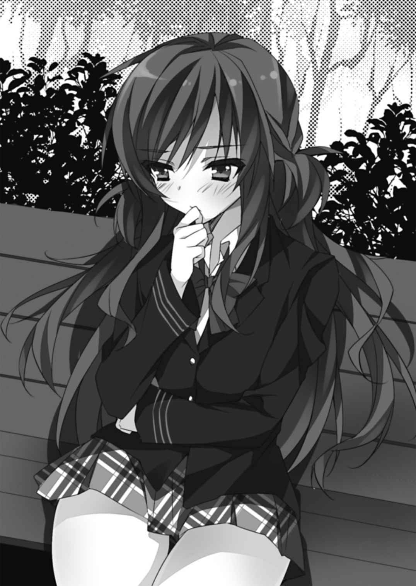
長谷川は、俺や恋ヶ崎のように、お兄さんのことを思う気持ちはないのだろうか？ 小学生のとき、同人誌を見てしまう事件が起こるまではとても仲が良かったはずなのだ。
お兄さんを避け続ける態度。お兄さんに対しての、『もう関係ない人』というセリフ。それらを見ると、まだ長谷川はお兄さんのことを許せていないように思える。
「あたしは、お姉ちゃんとか柚子とかと喧嘩しても、超っっっムカついてても、実際に顔見て話したら......なんか許せちゃう。仲直りしたくなっちゃう。兄弟って......そういうもんじゃないのかな......？」
喧嘩してても、兄弟だったら、顔を見て話したら許せてしまう、か......。
確かに俺だって、妹にムカつくことがあっても、喧嘩しても、『まああかりだから仕方ない』って心のどこかでいつも思っていて、なんだかんだ言っても許してしまう。
..................もしかしたら、長谷川だって......。
............。
「一か八か、だな......」
俺は、ある決意を固めた。
「え？」
「......余計なことして長谷川に嫌われる可能性もあるけど......それでも、このまま何もしないよりはマシだ、って思っちまうんだよな......」
きれい事に思えるかもしれないが......俺は今、『長谷川に好かれたい』と思って、この事態をどうにかしたいと思っているわけではなかった。俺自身が、この状況が嫌で仕方がなかった。このままこの事態を見て見ぬふりをしたくなかった。山本さんは今でも長谷川のことを思っているんだ。長谷川だって、昔は兄のことが好きだったのだから、本当は仲直りしたいと思っているかもしれない。できることなら、あの二人の仲をどうにか修復させたい。
よし、決めた。俺は明日、長谷川と山本さんを、もう一度直接会わせようと思う。
山本さんは、長谷川に言いたいことがたくさんあるはずだ。
山本さんが長谷川に謝って、二人がきちんと話すことができれば......さっき恋ヶ崎が言ったように、『顔を見て話したら許せてしまう』かもしれない。その一か八かの可能性に賭けてみたい。
だが、そんな余計なことをしたら、長谷川にうざったく思われてしまう可能性だって......勿論ある。
「はは......万が一、しくじって、長谷川に嫌われたら......そのときは、慰めてくれよ」
俺は冗談半分に恋ヶ崎にそんなことを言った。
「......はあ!? な、な、慰める......!? って、あんた、あたしに一体何させるつもり!?」
しかし、恋ヶ崎の反応を見て呆然とする。奴は突然顔を真っ赤にして、怒り出したのである。
「何って......いや、だから、言葉のままだろ......。元気出せよ、とか適当に慰めの言葉をくれ、って意味だけど......」
一体今の会話の流れで何を怒ったのだろうか。
「え!? ......あ、ああ......そ、そう......そうね......！」
恋ヶ崎は真っ赤な顔のまま、焦った様子で苦笑いを浮かべた。こいつは一体、今何を考えていたんだ？
「......まあ、あんたが何しようとしてるのか、大体は想像つくけど......何をするにしても、やるからには絶対うまくいかせなさいよね！」
恋ヶ崎は、バシッと思いっきり俺の肩を叩いてきた。
「......あ？ ああ......そうだな！」
恋ヶ崎の一言で、なんだか前向きな気分になれた。正直、『うまくいかなかったら』『長谷川に嫌われたら』と弱気になっているところもあったが......そうじゃない、と思い直す。うまくいかせればいいのだ。そうだ、それだけの話じゃないか。
「よしっ！ 俺はやんぞ！ やってやんぞ!!」
ベンチから立ち上がり、自分自身に気合いを入れた。恋ヶ崎に叩かれた肩の痛みが、俺をより頑張ろうという気持ちに駆り立てた。
ああ、また恋ヶ崎に元気づけられてしまったな......。
恋ヶ崎......お前はすごいよ。やっぱりお前は、俺にはない力を持ってる。
肝心なところでいつも俺は、背中を押されている気がする。
......協定関係を結んだ相手が恋ヶ崎で、本当に良かった......。
改めて、そんなことを思った。
公園を出て、駅まで帰る道のりで。
恋ヶ崎がまたわけの分からないことを言ってきた。
「あのさ......」
「あ？」
「あたしとあんたは......協定関係を結んでるから......こんなこと言っちゃいけないってのは分かってるけど......」
恋ヶ崎はいつになく神妙な顔つきだ。
「何が？」
「だから......今から言うことは、全部忘れて！」
「......はあ!?」
いくらなんでも、その前フリは一方的すぎる。
「もし......もしもよ？」
恋ヶ崎は何かを決意したかのようにすう、と軽く息を吸ってから、
「もしも............すっっっごく優しくて、しかもあんたには勿体ないくらい超可愛い子が......あんたのこと、思ってくれてたら......どうする？」
「............はあ？」
俺は恋ヶ崎の質問に、怪訝な顔になった。
こいつはまた、サッパリわけの分からんことを......。
「だ、だから......もしもだって言ってんじゃん！ いいから答えなさいよ！」
質問の意図が全く分からないのだが、回答するまで恋ヶ崎は問い詰めてきそうなので、俺は頭をフル回転させて無理矢理想像してみる。
優しくて可愛い子が、俺のことを思ってくれていたら......？
............ダメだ！ やっぱり、『そんなことありえねえ』って気持ちが真っ先に来てしまう......。
「......で、どうなのよ？」
だがそんな答えじゃこいつは多分納得しないだろうと思ったので、俺は考えこんでから、慎重に言葉を選んで話し始める。
「う～～～～ん............たとえ、そんな都合がいい展開になったとしてもだな......俺は今、長谷川のことで頭がいっぱいだ。その子と付き合う、とかは......考えられねえかな」
第一、俺がもしその女の子と付き合う、なんて返答をしたら......俺が入学してから今日までしてきた努力は一体どうなるんだ？ 全くの無意味になってしまうではないか。
恋ヶ崎は......俺の言葉に、一瞬、目の中の光を失ったような気がした。
「..................あ、......そう......」
素っ気なくそれだけ言うと、俺から視線を逸らす。
「......え？」
俺は恋ヶ崎のそんな反応が気にかかり、奴の顔を今一度見る。
「......まっ、単なる例えば、の話だから。そんな真剣に悩む必要ないわよ！」
恋ヶ崎はキッパリと言うと、再び俺の肩を、さっきより強く音を立てて叩いてきた。
「いてっ！ ......なっ、なんなんだよ!?」
恋ヶ崎の表情は、元に戻っていた。
............さっきの顔は、俺の気のせい、だったのだろうか......？
「......じゃーね、柏田！ また明日！」
「えっ......!?」
まだ駅まで辿り着いていないのに、奴は突然俺に別れを告げて、そのまま走り去ってしまった。
......一体、なんだったんだ......？
恋ヶ崎の態度に疑問を抱きながら、俺は一人帰路についた。
４
翌日、文化祭二日目を迎えた。
朝起きてすぐ、携帯をチェックする。
受信メール、一通。山本さんからメールが来ていた。
俺は昨日の夜、家に帰ってから山本さんにメールを送った。
『件名：無題
本文：今日は色々と話して下さってありがとうございました。明日の文化祭で話したいことがあるので、都合がついたら来て頂けませんか？ 時間は何時でも構いませんが、俺たちのクラスの劇は午後二時から、体育館でやります。翠さんの勇姿を見に来てもらえると嬉しいです』
その日のうちに返信が来なかったために半ば諦めかけていたのだが......今日の早朝に、返信が入っていたようだ。俺は慌ててメールを開く。
『件名：おはよう。
本文：柏田君、昨日はこちらこそありがとう。誘ってもらって一晩考えたんだけど...翠に嫌がられるの覚悟で、今日も文化祭に邪魔しようと思う（笑）。劇の時間も教えてくれてありがとう。せっかくなので、見させてもらうよ』
俺はとりあえず、山本さんに、
『了解しました、では劇の後少しお時間下さい』と返信し、それから長谷川へメールを打った。
『件名：おはよう！
本文：昨日は文化祭お疲れさま！ 二日目の今日も頑張ろうね！
今日劇が終わった後、少し時間あるかな？ ちょっと話したいことがあって......』
学校へ行くための準備をしているうちに、長谷川から返信が来た。
『件名：Ｒｅ：おはよう！
本文：了解しました。今日は頑張りましょう』
ひとまず、俺はほっと胸をなで下ろした。
だが、これだけで安心してはいけない。本当に頑張らなければならないのは、これからなのだ。
通学中、ふと思い出した。そういえば昨日の帰り、恋ヶ崎が『今日の文化祭にムラサキさんが来てくれるかもしれない』と言っていた。
最近ムラサキさんや恋ヶ崎とSkypeで会話をすることが全くなくなってしまった、と思っていたところ、どうやら『LINE』とかいう新たな通信手段で恋ヶ崎やムラサキさん、桜井さんはやりとりをしているらしい。俺はやったことがないのだが、どうやらその『LINE』とやらは、今スマートフォンユーザーの間で流行っている、無料でメールや電話のようなやりとりができるコミュニケーションアプリ......とのこと。未だにガラケーの俺にはさっぱりだ。恋ヶ崎にガラケーでもできると言われたが、よく分からないので俺は一切手を出していない。
その『LINE』で、ムラサキさんが文化祭に来るかもしれない、という話になったらしい。来たがっているが、ちょうど同人誌の原稿の締め切り前らしく、原稿の捗り具合によって来るかどうか決めるとのことだった。
......ムラサキさんと会うのは、先週の同人イベント以来だ。
あのとき、アフターで彼女は酔っ払って、お好み焼き屋のトイレでまた俺をからかってきたんだよな......。今でも思い出すと興奮......じゃない、恥ずかしくなってくる。果たして今日俺は、落ち着いて彼女と顔を合わせられるだろうか？
勿論、今日彼女が文化祭に来れば......の話だが。
学校に到着して、朝のホームルームを終える。
今日うちのクラスの劇は、昨日と上演時間が異なり、午後二時から行うことになっていた。それまでの時間、俺はフリーだ。
「カッシーおはよー！」
教室から廊下に出ると、Ａ組の前で鈴木に会う。
今日俺は、鈴木と文化祭を回る約束をしていた。
「昨日カッシーのクラスの劇見たよー！ すごいウケてたね！」
「えっ、マジで!?」
鈴木も見に来ていたのか、全然気付かなかった......。
「あ、俺も昨日軽音部のライブ見たよ」
「あ、カッシー来てくれてたよね！ 舞台から気付いたよ！」
廊下を歩きながら、話を続ける。
「すげー大盛況だったな。ライブ、良かったよ」
言ってから俺は、そういえば昨日恋ヶ崎にライブの感想を伝え忘れたことを思い出した。鈴木にはこうやって素直に言えるんだがな......。
「ほんとー!? ......何曲目が一番良かった？」
「......えっ!?」
思いがけない質問に戸惑う。まさかそんなことを聞かれるとは思わなかった。
昨日の軽音部のライブを思い出す。一曲目......の流行のＪポップは、普通にいい曲だったし鈴木の歌も上手かったが、正直俺が好きなジャンルの曲ではなかったからなあ......。二曲目の鈴木が作ったという曲と、三曲目の恋ヶ崎が歌ったボカロの曲は、どちらもすごく良かった。俺の中では同じくらい良かったので、甲乙付けられない。だが......三曲目は鈴木がボーカルをやっていないので、三曲目が一番良かったと言ったらこいつに対して失礼のような気もしないでもない。
「うーん......どれも良かったけど......二曲目、かな......」
なぜか友達相手に必死に最善の選択肢を考えてしまった自分に疑問を抱きつつ、答えた。
「マジで!?」
鈴木は俺の回答に驚いている。
「うん、あの二曲目ってお前が作ったんだよな？ お前作曲なんてできたんだな......。あれって......実際の恋愛の歌じゃねえよな？ 二次元キャラへ向けての曲だろ？」
俺は少し気になっていたことを鈴木に尋ねた。鈴木は俺の言葉に目を見開いてポカンとしていたが、やがて
「............すげ──っ！ よく分かったね!? 俺の周り誰も分かんなかったのに、一回聞いただけで分かっちゃうなんて......！」
と、興奮気味に言う。そりゃあ、軽音部の連中や取り巻きの女子たちはオタクじゃなさそうだし、まあ分からんだろうな。
「いや～......カッシーはほんとすごいよねー！ やっぱ他の人とは違うよね！」
それは、俺がオタクだからってだけだと思うけど......。鈴木は感激したような様子でいるので、とりあえず、俺が選んだ選択肢は一応正解だったようだ。
それから、鈴木の希望で漫研の展示＆販売を見に行った。
俺は鈴木と恋ヶ崎の仲が進展しているのかどうか、鈴木は恋ヶ崎のことをどう思っているのかが気になり、回りながら聞こうか迷ったのだが......なんとなく、聞くことができなかった。
もしかしたら俺は......認めたくないが、気になる一方で......真実を知るのが怖かったのかもしれない。
漫研を見た後、小腹が空いたという話になり、喫茶店へと入ることになった。
「あっそうだ！ カッシーに報告があったんだった！」
喫茶店でお菓子と飲み物を頼んだ後、鈴木が何かを思い出したようで、突然大きな声を上げた。
「報告......？」
ま、まさか......
『恋ヶ崎さんに告白されて付き合うことになったんだ～！』とか......。
いや、まさか、な......。恋ヶ崎は昨日何も言ってなかったし、いくらなんでも展開早すぎるだろ......。
「犯人が分かったんだよ！」
「は、犯人......？」
俺は想定外の鈴木の発言にクエスチョンマークを浮かべる。
「いや......犯人なんて言ったら失礼......だね。ほら、俺が散々不思議がってた、夏コミで、俺が好きなサークルの本を買ってきてくれて、スケブまで描いてもらってきてくれた人が、誰だか分かったんだよ！」
「えっ......!?」
鈴木が言っているのは......恋ヶ崎が夏コミで鈴木の好きな同人作家（ムラサキさん）の同人誌を購入して、スケブも描いてもらい、鈴木に渡した件だ。鈴木の机の上に置いたのはいいが、あいつは手紙に自分の名前を書き忘れたので、鈴木は一体誰が同人誌をくれたのか未だに分からないでいたのだ。
それが、分かった、だと......？
「昨日の軽音部のライブの前にさ、恋ヶ崎さんが......最後の確認で曲の歌詞を見直してたんだよ。その歌詞は、恋ヶ崎さんが自分で紙に書いたものだったんだけど、すっごい見覚えのある字でさ。あの同人誌には一緒にお菓子とスケブと手紙が入ってたけど、その手紙の字にめちゃくちゃ似てたんだよ！ それで本人に聞いたら、やっぱりそうだって！」
鈴木は興奮気味に早口で言い切った。
マジかよ......。恋ヶ崎が渡したってこと、ついに鈴木に分かったのか......。
それも、このバレ方って......恋ヶ崎が望んでいたバレ方そのものじゃないのか？ あいつは、『鈴木に俺がバラしてやる』と言ったら『もっと自然な形で知られたい』と言った。そんな都合のいいバレ方なんてあるものか、と俺は思っていたが......。
しかし恋ヶ崎の奴、昨日一緒に帰ったときそんなこと一言も言ってなかったよな......？ なんでだ......？ 渡すときついてきて欲しいと言ってきたり、どうやって渡したらいいかとか相談してきたり、散々俺に協力させたくせに......何で何も報告しないんだよ？
やっぱり......あいつ、俺に気を遣ってる......のか？ 俺の予想通り、恋ヶ崎と鈴木はもう既に相当仲良くなっていて、それなのに俺は長谷川と、まだそこまで進展していないから......俺に悪いと思って、言えないでいるのだろうか？
そこで俺は、もう一つ疑問が湧いた。
鈴木が欲しがっている同人誌の情報を恋ヶ崎に流したのは俺だが......その辺、恋ヶ崎は鈴木に伝えたのだろうか？ もし伝えていたら、鈴木に『カッシーなんで今まで言ってくれなかったのー!?』と俺が責められる立場になり、少々都合が悪い。今のところ鈴木は、そんなことを言ってくる気配はないが......。
「そ......そうだったんだ......」
つい呆然としてしまったが、あまりにも長い時間黙っていても怪しまれると思ったので、とりあえず相槌を打つ。
「マジびっくりだよね～！ 恋ヶ崎さん、俺のmixi見てたらしくてさ」
「えっ......mixi!?」
突然出てきた単語に反応する。
「そうそう。俺とカッシーってマイミクじゃん。で、恋ヶ崎さんとカッシーもマイミクでしょ。カッシーのマイミク一覧から飛んで、俺のmixi把握してたんだって。で、俺が夏コミ前に全体公開で『ブルーベリーさんの夏コミの新刊欲しいけど夏コミ行けない』って日記書いたのを、たまたま見てたらしくて」
mixi......なるほど、あいつ、そういうことにしたのか......。よくよく思い返すと、恋ヶ崎と俺がマイミクになったのはちょうど夏コミの日だから、その話には矛盾が生じるのだが......鈴木は勿論そんなこと知らないからな。
恋ヶ崎の奴......俺が鈴木に責められる立場にならないよう、機転をきかせて誤魔化してくれたっていうのか......。
「びびったよ、知らない間に日記チェックされてたんなんてさー」
鈴木の言葉に、一瞬焦る。
確かに、マイミクでもない知り合いのmixiをまめにチェックしてるだなんて......一歩間違えたらちょっとストーカーっぽい。しかも、勝手に日記をチェックした上に、そこで欲しがっていたものを勝手に購入して来るだなんて......。俺を庇うために、恋ヶ崎はそんなストーカーっぽい行為をしたことになってしまったのだ。
鈴木は、恋ヶ崎がそんな行為をしていたと聞いて、一体どう思ったのだろうか？
このことで、鈴木の恋ヶ崎に対する印象が悪くなっていたらと思うと......。
「そ、そうか......鈴木は、その......どう思ってるんだ？ そのことに関して......」
「え？ いやーめっちゃありがたいよ！」
「......えっ？」
脳天気にそう答えた鈴木に、俺はポカンとする。
「新刊買ってきてもらえたことも勿論嬉しいけど、もし俺が実際買いに行けてたとしても、女性限定で描いてもらえるっていうスケブは描いてもらえなかったわけだしさ！ ほんっと助かったよー！ いや～、恋ヶ崎さんには何か恩返ししないとなー」
鈴木は無邪気な笑顔を浮かべてそう答えた。
「え？ あ、ああ......そ、そうだな......」
鈴木は、恋ヶ崎が勝手に日記を見ていたという件に関して、特に何も思っていないようだ。その様子を見て俺は心底安心した。......こいつが細かいことを気にしない奴で本当に良かった......。
「あんなギャルっぽい子が夏コミ行くほどのオタだったなんて驚きだよねー！ 昨日の文化祭のライブが終わった後、空き教室で軽く打ち上げみたいのやったんだけどさ、恋ヶ崎さんとオタ話で盛り上がっちゃったよ！ 響音ルルの話とか、俺の好きなサークルの話とかさ。恋ヶ崎さん、響音ルルのコスプレもしたことあるんだって！ それに、俺の好きなサークルで夏コミで新刊買ったときに、サークルの作家さんと知り合いになったらしくてさ～。すげえ羨ましいよ！ 軽音部にオタいないからオタ話できて楽しかったな～」
「え......？ ......へ、へえ......」
オタ話で盛り上がった......だって？
恋ヶ崎は昨日、『鈴木に同人誌を渡したのが自分だと知られたこと』も言わなかった上に......『打ち上げで鈴木とオタ話で盛り上がったこと』も俺に言わなかった、ということになる......。
なんなんだよあいつ......。俺たちは協定関係を結んでるっていうのに、なんで何も言ってこないんだ？
そこまで考えて、気付いた。
そういえば俺は昨日、長谷川と山本さんのことがあって、恋ヶ崎曰く『うざいくらい憂鬱オーラ出して』いたのだ。そんな状態の俺に......自分は鈴木と進展することができた、なんて、言いにくかったのではないだろうか？
「......カッシー、大丈夫？ なんか難しい顔してるけど......」
「えっ......!? いや......なんでもねえ......」
恋ヶ崎が俺に何も言ってくれなかったことはとりあえず一旦置いておくとして......。恋ヶ崎の苦労に反して、今まであまり進展できずにいた二人の仲が、ここへ来てやっと、大きく進展したのだ。あの女嫌いの鈴木が、恋ヶ崎と『盛り上がった』『話できて楽しかった』とまで言ってるだなんて。
ああ、そうだ、俺はもっと......喜んでやらなくちゃいけないはずなのに......どうして今俺は、こんなに複雑な気分なんだろう......。
喫茶店を出て、次にどこへ行こうかと鈴木とパンフレットを見ながら話し合っていると......。
「あっいたー！ 鈴木だーっ！」
突然、前方から男子生徒が四人ほど走ってきた。こんな血相変えて走ってくるなんて、一体何事だろうか。
「誰だ？」
「クラスの奴ら......」
鈴木も驚いた様子で俺の質問に答える。
「お前を探してたんだよ！ 頼む！ 店手伝ってくれ！」
「えー？ 俺、当番昨日で終わったじゃん」
「全然客入らねえんだよ！ 昨日はお前のおかげで女の客いっぱい入ったのに......このままじゃ大赤字なんだよ！」
必死な形相で説明しながら、男子生徒たちは鈴木の両側に回り......鈴木の両腕をしっかりと摑んで、身柄を確保した。
「ええっ!? 俺まだあんまり回れてないのにー！」
鈴木は不満げに抵抗する。
「お前のクラスって......一体何やってるんだ？」
「執事喫茶......」
鈴木の返答に、俺はとても納得した。
なるほど......イケメンである鈴木の執事姿をエサに、女性客を集客しようって魂胆か......。
「もー嫌だ～～～～！ 働きたくない～～～～」
抵抗も空しく、鈴木はクラスの男子たちに連行されてしまった。
「が、頑張れよー......」
だんだんと離れていく鈴木の姿に向かって、同情心から声援を投げかけた。
残された俺は、廊下に一人空しく立ちすくむ。
やべ......また一人になっちまった......。
午後のクラスの劇まではまだ時間あるだろうしなあ......と思い、携帯を取りだして時間を確認する。
すると、メールが一件来ていた。慌てて確認すると......。
『送信者：ムラサキさん
件名：文化祭お疲れさまです♪
本文：来ちゃいました（^o^）』
......来ちゃいました？ って、文化祭に来た、ってことか......？
よく見ると、そのメールは一斉送信で恋ヶ崎と桜井さんにも送られているようだ。
「......えっ!?」
そのメールの受信時間を見て驚く。
なんと、今から一時間以上前に受信していたのだ。やっべー、全然気付かなかった......！
俺は慌てて返信を打つ。
『すみません、メール今気付きました（T_T）
今どちらにいますか？ ってか、まだいますか？』
すぐに返信が来る。
『今、２年Ｃ組の喫茶店にいます♪』
２年Ｃ組の喫茶店......というと、先ほど俺と鈴木が入った喫茶店ではなく、昨日桜井さんと入った喫茶店だな......。『今から行きます！』とメールを打ち、すぐに向かった。
２年Ｃ組の喫茶店に辿り着くと、ムラサキさんと恋ヶ崎がお茶を飲んでいた。
「あ、柏田さん、こんにちは♪」
「こ、こんにちは......」
二人が座っていたテーブルに同席する。
「あんた遅すぎ～」
不満を言ってくる恋ヶ崎の顔を見て......先ほどの鈴木の話を思い出す。同人誌の件、打ち上げで話が盛り上がった、という件......。
「何よ？」
俺が黙って恋ヶ崎の顔を見ていたため、恋ヶ崎が不審に思ったようで、睨みつけてくる。
......とりあえず、今はムラサキさんもいるし、話せないな......。この件は、また今度二人だけのときにじっくり聞くしかないか......。
「さっきまで小豆ちゃんもいたんだけど、クラスの当番があるから行っちゃった」
「あ、そうだったのか......」
「ってか、あたしもそろそろ放送委員の仕事があるから行かなきゃなんだよね」
恋ヶ崎は自身の腕時計を見ながら言う。ああ......そういえばこいつって、放送委員なんだっけ......。
「どこ回ったんですか？」
「お化け屋敷とか、漫研とか、いろいろ回りましたよ♪ 桃さんと小豆さんが案内して下さって......」
俺の問いに、ムラサキさんが答える。他愛もない会話をしてから、喫茶店を後にした。
「......さてと、じゃああたし行くね。ムラサキさん、来てくれてありがとうございました！」
「いえいえ。お仕事頑張って下さいね！」
恋ヶ崎が挨拶してから、放送委員の仕事へと向かった。
「..................」
......ムラサキさんと二人きりになってしまった......。
一瞬、この間のイベントの後酔った彼女に絡まれたことを思い出して、赤面しそうになるが、慌てて頭からかき消した。
「そっそういえば......原稿は大丈夫なんですか!?」
なるべく自然な感じを装って、質問してみた。原稿が大丈夫そうだったら来る、という話だったと思うので、今日来ているということは大丈夫ということなのだろうか？
「..................」
「............えっ!?」
しかし、俺が何気なく投げた質問に、ムラサキさんは遠い目になった。
「も、もしかして......あんまり大丈夫じゃないんですか......？」
「い、いえ......そんなことないですよ？」
「めちゃ笑顔引きつってますよ!?」
原稿やばいのに来てくれたってことか......。ありがたいけど、ちょっと心配だな......。
「いいんです、今日一日は原稿のことは忘れるって決めましたから！」
何が『いいんです』なのかはいまいち分からないが、彼女がそういうのだからもう原稿のことは話題にしないようにするか......。
「柏田さんは、この後お時間大丈夫なんですか？」
「あ、はい。午後に劇に出るんですが、それまではフリーです」
「あ、白雪姫で主演なんですよね？ 桃さんから聞いてますよ！ 今から楽しみです♪」
うっ......ってことは、見に来る気マンマンなんだな......。ムラサキさんにあの醜態を見られるなんて......。
「柏田さん、どこか行きたいところはありますか？」
「え？ う──ん......」
今１年Ｄ組の出し物である監獄喫茶に行けば、桜井さんが働いている姿が見られるのか......。でもムラサキさんに『女子のミニスカポリス姿が見たいのか......』って思われるのも嫌だしな......。
「あっ！ 私ここ行きたいです！」
「え？」
俺が考え込んでいると、ムラサキさんが俺にパンフレットを指差して見せてきた。そこには、『ハロウィン仮装写真館』とあった。
「柏田さん、明日はハロウィンですよ？」
「あ、そういえば......そうでしたね......」
ハロウィンなんて毎年あんまり馴染みのないイベントだからなあ......。
「せっかくなので気分だけでもハロウィンを楽しみましょう♪」
「そうですね」
ムラサキさんと二人、パンフレットを見ながら『ハロウィン仮装写真館』をやっている教室へと向かう。
教室内に入ると、既に他の客が仮装して撮影をしていた。仮装......というより、コスプレのような気もする。女の子二人がメイド服を着て撮影していた。
教室内の係の生徒も、みんなコスプレしている。基本的に女子は制服系の可愛い衣装で、男子は着ぐるみなどウケ狙いの物を着用していた。
「いらっしゃいませ～！ こちらからお好きな衣装を選んで下さい！」
係の生徒に、コスプレ衣装一覧の写真が掲載されている紙を渡された。
「柏田さん、何が着たいですか？」
「えっ......!? お、俺は何でも......」
さすがに、ムラサキさんに着て欲しい衣装をリクエストする勇気はなかった。まあ、彼女がコスプレしてくれるのなら何の衣装にせよ楽しみだな......。あ、でも、俺も何かコスプレしなくてはならないのか？
「そうですか？ せっかくなので、ハロウィンっぽい衣装がいいですよね♪ じゃあ私はこれ、柏田さんはこれでお願いします！」
ムラサキさんは俺の許可をとらずに、係の人に希望を伝えてしまった。一体何を選んだんだろう......。
「じゃあ、女性はこちら、男性はこちらで着替えて下さい」
係の人に衣装を渡され、教室内に作られた簡易更衣室（ついたてで仕切られている）の中へと案内される。
簡易更衣室の中で、俺が渡されたコスプレ衣装を広げてみると......。
「......ヴァンパイア......？」
それは、表地が黒、裏地が赤のマントに、フリルのついたシャツ、赤いベスト......という、吸血鬼の伯爵みたいな衣装だった。
そうか、せっかくだからハロウィンっぽい衣装にしよう、とかさっきムラサキさん言ってたもんな。まあ、変な着ぐるみを着せられたり女装させられたりするよりはマシかな。こういう衣装、イケメンが着ればかっこいいんだろうけど、俺は似合わないだろうなあ......。
着替えを終えて、簡易更衣室から出る。まだムラサキさんの姿はなかった。
「............」
ついつい、教室内にたくさんいるコスプレ姿の女子に目がいってしまう。
今撮影しているのは......おおぉ、スリットの入ったチャイナドレス姿の女の子と、バニーガール姿の女の子だ。あんな肌の露出度が高い衣装もあんのかい......。正直、目のやり場に困る。
係の女子生徒たちも、セーラー服だったり、チアガールだったり、みんな気合いを入れてコスプレしていた。
「可愛いっすね～！」
「ありがとうございま～す」
他校の生徒っぽい（制服がうちの学校のではないので）男子たちが、コスプレ姿の係の女子生徒に声をかけている。確かに、女子高生のコスプレって目の保養になるなあ......なんてぼーっと見ていると......。
「柏田さん、お待たせしました♪」
「......！」
簡易女子更衣室から、ムラサキさんが出てきた。
その瞬間、教室内の生徒たちの視線が一気に彼女に集まる。
「おぉ──っ！」
つい今ほど係の女子生徒に声をかけていた男子たちが、ムラサキさんの姿を見て声を上げた。
「..................」
無理もない......。コスプレしたムラサキさんは、間違いなく、この教室にいるどの女子高生たちよりも魅力的だった。思わず、俺も見とれてしまった。
彼女は小悪魔風のコスプレ衣装に身を包んでいた。黒いミニスカートの小悪魔風ワンピースに、悪魔の角と尻尾、羽を生やして、手にはステッキを持っている。脚には......セクシーなガーターベルトで太ももまでのストッキングを固定していた。ミニスカートとストッキングの間の絶対領域である白い太ももが眩しかった。
中身も小悪魔的魅力を兼ね備えているせいか......彼女の小悪魔姿は、下手したら私服姿以上に妙にしっくりきていた。
「スカートが思ったより短くて......年甲斐もなく恥ずかしいです......」
ムラサキさんは短いスカートを手で押さえて、恥ずかしそうな笑顔を浮かべている。いや、年甲斐もなくって......まだ充分若いだろ......。
「すげー可愛くね!?」
「やべ、俺めっちゃ好みなんだけど......」
「あんな子、うちの学校にいたっけ!? 他校の子!?」
他校の男子だけでなく、係の男子生徒までもがムラサキさんを見て興奮した様子で話している。声がでかいので丸聞こえだ。ムラサキさんにも聞こえているのだろうが、まるで何も聞こえていないかのようにスルーしている。
「柏田さんのヴァンパイア姿、やっぱり思った通り似合いますね！」
俺があまりにも魅力的な姿のムラサキさんを前に何も言えなくなっていると、彼女が俺のコスプレ姿を見て褒め始めた。うおお、やめてくれ......周りの男子たちからの視線が痛い......。『なんであんな可愛い子とあんなダサい奴が？』って声が聞こえてきそうだ......。
「それでは、撮影しまーす！」
係の生徒が、撮影するために俺たちにチェキを向けた。
「はーい♪」
「!?」
その瞬間、ムラサキさんが腕を組んできたので、俺は一瞬で赤面してしまった。
「はい、チーズ！」
撮影を終えて、制服に着替えている間に、写真の現像が終わっていた。
「はいどうぞ～！」
俺とムラサキさんに、それぞれ一枚ずつ写真が渡される。赤面して硬直しているダッサいヴァンパイアと、魅惑的な小悪魔がそこに写っていた。
「ふふっ......文化祭って楽しいですねえ♪ 高校生に戻ったみたいでテンション上がります」
『ハロウィン仮装写真館』を後にして廊下を歩いていると、ムラサキさんが写真を見ながら楽しそうにそんなことを言ってきた。
突然立ち止まって、俺の顔をじっと見つめる。
「............？ な、なんですか......？」
「共学だったらこんな感じだったんでしょうかね～？ ......こんな高校生活、送りたかったなあ～......」
俺の顔を見つめたまま、意味深に言ってくる。
「えっ......？ あ......そういえばムラサキさんって、女子校なんでしたっけ？」
「えぇ、そうですよ」
「やっぱり、共学と女子校じゃ文化祭も違うんですか？」
「うーん......そうですねえ......文化祭自体は、そこまで変わらないかもしれませんねぇ」
そこまで変わらない......？ それじゃあ、『こんな高校生活送りたかった』というのは、どういう意味なんだ？
「柏田さん、行きたいところありますか？」
「えっと......じゃあこの、『自主制作映画』ってのどうですか？」
パンフレットに書かれている映画の上映時間を確認すると、ちょうどもうすぐ始まるところだったので、提案してみた。
「あ、いいですねえ♪ 高校生の作った物語を見たら、創作意欲が湧いてきそうです！」
ムラサキさんも賛同してくれたので、俺たちは『自主制作映画』が上映される視聴覚室へと向かった。
視聴覚室の中に入って、驚いた。ほとんど客がいなかったのだ。俺たちの他には三人組の女子グループが座っているだけだ。たまたま今回の上映だけそうなのか、元々人気がないのかは分からないが......。
そんでもって、下手したらお化け屋敷と同じくらい......暗かった。窓からの光を完全に遮っている。
やべっ......『暗闇に連れ込みたかったんじゃ？』とかムラサキさんに思われてたらどうしよう......。
「なんか、思ったより暗くて興奮してきちゃいますねっ！」
「はあ......っ!?」
そんな俺の思考を遮って、ムラサキさんが爆弾発言をした。
俺が驚いている様子を見て、ムラサキさんはやべっ、というような顔をして口元を手で押さえる。
「えっ!? あ！ ごめんなさい間違えました......『思ったより暗くて怖くなってきちゃいますね！』......」
「どんな間違いですか!?」
必死に突っ込みつつ、隅の方の椅子へと腰掛けた。
「あ......安心して下さいね？ いくら暗闇だからって......学校内で襲ったりなんかしませんから......！」
「さっきから一体何を言ってんですか!?」
じゃあ学校じゃなかったら......？ って期待しちゃってる俺のこの気持ちの昂ぶりをどうしてくれる!?
これ以上変なことを言われたら俺の心臓と突っ込みが持たない......と思っていたところ、映画が始まったので助かった。
映画は......なんというか、その......言っちゃ悪いがとても退屈だった。
ジャンルとしては恐らく『恋愛映画』で、高校生の男女のすれ違いや恋心を描いている......いや、描きたかった、のだろうと思うのだが......。いかんせん演技がわざとらしくて見ていられない。演技経験などない高校生なので、仕方ないのだが......。セリフ回しも白々しいし、展開も唐突だし......こりゃあ客の入りが少ないのも納得だ。暗闇でムラサキさんがすぐ隣に座っている、という緊張感のある状況でなければ、確実に眠くなってたな......。そんなことを考えていた矢先。
「......っ!?」
突然、俺の太ももの上に、ムラサキさんの手が置かれた。置かれた、というよりは、落ちてきた......という表現の方が近いかもしれない。
なっ......な、な、なんだ!? 誘われてる!? 俺は混乱状態に陥る。さっき学校では襲わないって言ったくせにっ......噓つき！
しかし、次の瞬間......ボスッ、という音がしたかと思うと、今度は、俺の肩に彼女の頭が落ちてきた。激しく動揺しつつ、彼女の方を見ると......。
「..................」
彼女は、目を瞑ってすやすやと眠りについていた。
一瞬、からかって寝たふりをしているのかとも疑ったが......一向に目覚める気配がなく、本当に眠っているようだ。
そういえば、原稿が忙しい状況の中、文化祭に来てくれたみたいだもんなあ......。きっと寝不足状態だったのだろう。
肩にかかるムラサキさんの感触に、気持ちよさと緊張感を覚えながら、俺は映画が終わるまでなるべく彼女の睡眠を邪魔しないようにするべく、そのままの姿勢から動かないように必死に耐えた。
「ごっごめんなさい......私途中から爆睡しちゃって......もしかして、柏田さんに寄っかかってしまってました？」
「え!? い、いえ......そんなことないですよ!?」
映画が終わり目覚めた彼女は、俺に寄りかかっていたことすら覚えていないようだった。
気まずいし、ムラサキさんに気を遣わせるのも嫌なので、寄りかかられていないということにしておこう......。
「寝てしまうなんて......映画を制作した生徒さんにも失礼なことしてしまいましたね......」
口元を押さえながら俯いて呟いた彼女は、少し落ち込んでいるようだ。
「原稿であんまり寝てないんじゃないんですか？ 大丈夫ですか？」
そんな状態なのに俺たちの文化祭を見に来てくれたという事実を嬉しく思いながらも、やはり心配ではある。
「......柏田さんって、優しいですね。少し眠ったら大分疲れがとれましたので、もう大丈夫です」
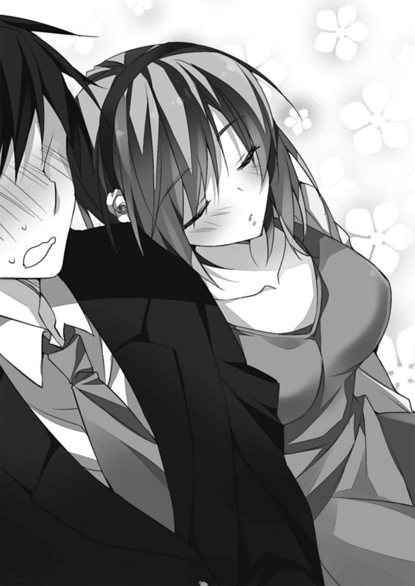
ムラサキさんは、少し恥ずかしそうに笑った。
「あっ、縁日ですよ柏田さん！」
視聴覚室を後にした俺たちが廊下を歩いていると、ムラサキさんが楽しそうな声を上げた。
「へぇ～縁日......入ってみましょうか」
『縁日』の看板が掲げられた教室内に入ると、教室内は輪投げスペースと射的スペースに分かれていた。
「輪投げと射的、どちらも三回チャンスで百円です！ どっちにしますか～!?」
係の生徒に声をかけられる。
ぱっと見た感じ、輪投げの方がすいていたので、輪投げをやることにした。
百円払うと、輪投げ用の輪っかを三つ渡された。二メートルほど離れた先の台の上に、お菓子やらぬいぐるみやらの景品がずらっと並んでいる。その中に、ゲームソフトがあるのを見つけた。あんな高価な景品もあるのか......。
「あっ！ あのゲーム私欲しかったんです！」
ゲームソフトを見て、ムラサキさんが言った。
よっしゃああああああ、絶対ゲーム取るしかねえだろ!!
俺は気合い充分で、ゲームソフトに向かって輪っかを投げた。
..................。
見事に、外した。三回とも懲りずにゲームソフトを狙ったが、全て外してしまった。やってみると、輪っかが思ったとおりの方向へ飛んでいかず、意外と難しかったのだ。
「柏田さん、私のためにゲームを狙って下さるなんて......嬉しいです！」
「いや......取れなくてすみません......」
それからムラサキさんも三回程ゲームソフト狙いで輪っかを投げたが、全て外してしまった。
「全て外してしまった方は、女性限定で残念賞を用意してまーす！」
女性限定かよ......どこもかしこも嫌な世の中だぜ......。
「残念賞はポッキーで～す！」
係の生徒は、ポッキーを一本......ムラサキさんに渡した。
「ありがとうございました～！」
教室を出ると、ムラサキさんはポッキーを持ってじっと見つめていた。
「ポッキーたった一本って、しけてますよね～」
「せっかくなので......これ、半分こしましょうか♪」
ムラサキさんは何かを企んでいるかのような笑顔を浮かべて、そんなことを言い出した。
「えっ......」
俺が何か言おうとした瞬間......俺の口の中に、ポッキー......のチョコがついている方が、放り込まれた。
「んん!?」
ポッキーを入れられてしまい、何も喋ることができなくなっていると......。
ぱくっ。
「......!?」
ムラサキさんが......なんと、俺が口に入れている方と逆側のチョコがついていない方のポッキーに、かぶりついた。
なんだこのポッキーゲーム状態はああああ!?
つーか、普通に廊下なんですけど!? 幸い、今周りにはあまり人がいないようだが......。
俺が混乱状態に陥っていると、ムラサキさんがポッキーを咥えたまま顔を上下に動かして、パキッと音を立ててポッキーを割った。
ポッキーはムラサキさんが咥えたところから一センチくらいのところで割れてしまった。チョコがついている部分は俺が咥えている状態、ついていない部分はムラサキさんが咥えている状態になった。
「あら～全然半分こ出来なかったですねぇ～。残念」
ポッキーをもぐもぐしている口を手で軽く押さえながら、彼女は脳天気にそんなことを言う。
俺は色々言いたいことがあったが口にポッキーのチョコ部分が入っているので口が開けられず、早急にバリバリと音を立ててポッキーのチョコ部分をかみ砕き、飲み込む。
「なっ......一体何してんですかああ!?」
「だってポッキーを半分こするにはこうするしか方法がないんですよ？ チョコがついている部分を手で持ったら、チョコが手についちゃいますからね？」
ムラサキさんは人差し指を口元にあて、俺に向かってウィンクしてきた。
「な、な、な、だからって......」
「そんなに怒らないで下さいよぉ～」
「いや、決して怒ってはないですけどっ......」
「でもお顔が真っ赤になってますよ？」
「それは照れてるからに決まってんでしょ!?」
言わせんな恥ずかしい！
動揺のあまりついタメ語になってしまった。
「あら......そ、そうでしたか......。......でも、今更そんなに恥ずかしがることですか？ だって私たち......キスもした仲じゃないですか♪」
「............えぇええええええっ!?」
なんだそれは!? 初耳ですが!?
「それに、熱い一夜を過ごした仲でもありますし......」
「はああぁああぁあ!?」
今飲み込んだポッキーが胃から戻ってきそうな勢いで驚いた。
..................あ、もしかして......熱い一夜ってのは、同人原稿のアシスタントをやったときのことを言ってるのか？ 確かに熱かったけど......（修羅場的な意味で）。
「ちょ、ちょっと待って下さい......熱い一夜は把握しましたけど、その前の......キ、キス......って、なんですか!?」
そっちの方は全然身に覚えがないぞ!? ムラサキさんの家に泊まったときに、俺は無意識のうちにそんなことをしでかした......のか!?
「えー？ 忘れてしまったんですか？ 私のファーストキスを奪ったのに～......」
「えっ!? はああ!? ちょ、マジで身に覚えがないんですけど!?」
俺が大慌てで騒いでいる様子を見て、彼女は嬉しそうに小悪魔的な笑みを浮かべている。ちくしょう、完全に楽しんでるな......。だけど、本当に覚えていないものは覚えていないのだ。
「......ほらぁ～、初めて会った日のことですよ。夏コミで、私のサークルスペースで......」
「えっ!? サークルスペースで......？」
夏コミでムラサキさんに初めて会ったときのことを必死に思い出す。ええっと、確か、サークルスペースの中に入れてもらって、二人きりで色々話して......。
「............あっ!!」
思い出した......。ムラサキさんに飲みかけのペットボトルを渡されて......。
「た、確かにしましたね......」
「あ、やっと思い出してくれました？」
「はい......。............間接キス、を......」
ムラサキさんにペットボトルのお茶を渡されて、俺は彼女の飲みかけとは知らずに飲んでしまったので、必然的に間接キスをしてしまったのだ。
俺の発言に、ムラサキさんは楽しそうに笑った。俺は赤面したまま何も言えなくなる。キスって......そういう意味かよ！
ああ、結局また彼女にからかわれてしまった......。
本当にムラサキさんって天性の小悪魔で、男を振り回すのがうまいよなあ......そこまで考えて、ふと思い出した。
この間、ムラサキさんはエセビッチで、実は全然男慣れしていない隠れ喪女である......と、ムラサキさんの友人である永瀬さんに言われたことを。
未だに信じられないが......永瀬さんが噓をつくとも思えない。
あの話が本当だとしたら......今日の言動は、本当は男になれていないのに無理して頑張っている、ということなのか......？ 全くそんな風には見えないのだが......。
「次、どこ行きま......」
俺が言いかけたそのとき。
「２─Ａで占いの館やってまーす！ どうですか～!?」
「!!」
近くにいた女子生徒が勧誘してきた声に、思わず吹き出しそうになった。
なんだ、このデジャブは......!?
２─Ａの占いの館......って、昨日桜井さんといるときに勧誘されて行ったとこじゃねえか......。
「柏田さん！ 占いですって！」
ムラサキさんが目を輝かせる。......なんで女子ってこうも占い好きなんだ？
「ムラサキさん、興味あるんですか......？」
「えぇ！ 私最近少し占いにハマってるんですよ～♪」
「すぐそこなんで、是非どうぞ！」
俺の意見は聞かれることもなく、いつの間にか女子生徒に占いの館へと案内される形になってしまった。
「柏田さん......もしかして、占いお嫌いでした？」
俺が気むずかしい顔をしてしまっていたせいで、ムラサキさんに気を遣わせてしまった。
「い、いえ！ そんなことないですよ！」
慌てて笑顔を作って否定する。
実際、別に占いが嫌いなわけじゃない。
ただ......二日連続で、違う女の子と占いに行くっていうのが、どうも自分の中で複雑な気分というか......。
『占いの館』の教室へ入ると、当然昨日と同じように『タロット占い』『誕生日占い』『手相占い』とスペースが分かれていて......これまた昨日と同じように、唯一『誕生日占い』の机だけ席が空いていた。
『誕生日占い』、人気ねえんだな......。
「ではこちらへどうぞ～！」
案の定、空いている『誕生日占い』の机の前まで案内されてしまう。ちょ、ちょっと待てよ......まさか......。
「!?」
俺の嫌な予感は的中した。
『誕生日占い』の占い師の生徒は、昨日と同じ女子生徒だったのだ。
俺以上に驚いているのは占い師の生徒で、俺の顔を見た瞬間眉間に皺を寄せて怖い顔になり、俺の顔と隣に座るムラサキさんの顔を交互に見ている。
「な、なんと......」
占い師の生徒は小声でそれだけ呟いた。いろいろ言いたいことはあるんだろうが、一応俺のことを気遣ってかそれ以上は何も言わなかった。
......そりゃあ、二日連続で同じ生徒が、しかも......昨日とは違う女子と一緒に占いに来たら、いろいろ思うところはあるだろう......。しかも、この占い師は昨日俺と桜井さんのことをカップルと勘違いしていたわけで......うう、頭痛くなってきた......。俺は気まずくてひたすら下を向いていた。
「で、ではまず......こちらの紙にフルネームと生年月日を書いて下さい」
占い師の生徒は動揺を隠し切れていない様子で、昨日と同じように紙を差し出した。自分の生年月日を書き終えてから、ムラサキさんの手元を盗み見る。四月二十四日生まれ......確か彼女は大学二年生だったと思うので、計算すると......もう二十歳ってことか。この間酒飲んでたし、そりゃあそうか。
書き終えた紙を占い師の生徒に渡す。
「ふふっ、楽しみですね～♪」
俺と占い師の気まずさを知る由もなく、ムラサキさんは占いの結果を楽しみに待っている。占い師の生徒は、昨日と同じ手つきでキーボードに俺たちの生年月日を入力している。......俺は、全く同じ結果を再び聞くことになるんだよな......。
「はい、それではまず............そ、そちらの男の方から......」
占い師の生徒は、昨日は俺のことを『彼氏』と呼んだものだが、今日は当然そういうわけにもいかないようで、言いにくそうに口を開く。
「......柏田直輝さんの基本性格は、温厚で優しくお人好し。自分の思い込みで偏見や反発心を持ったりしやすい。自分の意見はしっかり持っていて、頑固な面も。それでいて優柔不断で気が多い。人見知りが激しく社交性に乏しいが一度仲良くなった人とはトコトン仲良くなる。根は真面目だが誘惑に惑わされやすい。普段は控えめで消極的な性格だがここぞというときはしっかりやる人」
昨日と全く同じ占い結果を、占い師の生徒は早口で一気に読み上げた。昨日より読み方が雑なのは気のせいだろうか？ 昨日聞いたんだからいいだろ？ と言わんばかりの空気を感じる。
「あら～、当たってますね～！」
「マジっすか!?」
ムラサキさんの反応に、思わず声を上げた。
昨日桜井さんにも当たってるって言われたし......やっぱり周りから見た俺の性格って、この占い結果の通りなのか？ うーん、あまり嬉しくない結果なだけに、微妙な気分だ......。
気付くと、占い師の生徒が俺を睨み付けていた。目が合った瞬間すぐに逸らされる。
......この人完全に、俺のこと二股男だと誤解してるよな!?
こんな地味で冴えない男のくせに可愛い女の子相手に二股かけてるなんて......って思われてるんじゃ......。
「次ー恋愛運ー」
占い師の生徒が次の項目を読み上げる。......なんかだるそうなのは気のせいだろうか？
「ほうっておけないと周りの女性から思われており、好意を持たれることが多いでしょう。ぶっちゃけ、モテます。......っ！」
占い師の生徒は読み上げてから、はっと何かに気がついたかのように俺の顔に目を向けた。まさか......『この結果当たってるじゃん！』とか思ってるんじゃあるまいな......？ たまたまその場の流れで二日連続で女子と占いに来ただけで、どちらとも付き合ってるわけじゃないし、全くモテてるわけじゃない......という事実をこの場で説明できたらどんなに楽だろうか......。
「なるほど～！ これも当たっていそうですね～♪」
「えっえぇ!?」
ムラサキさんまで何を言い出すんだ!?
「それでは次......狭川紫さん」
狭川紫......ムラサキさんの本名を聞いて、ふと思い出す。この間彼女がお好み焼き屋で酔っ払ったとき、彼女に本名で呼んで欲しいなどと言われて......俺は彼女を初めて本名である『紫さん』と呼んだ。その後、勿論気恥ずかしいので呼び方は今まで通りの『ムラサキさん』に戻してしまったが......あのときはものすごくドキドキしたもんだ。しかもその後、彼女に耳元で囁かれたりもしたんだよなあ......。
「狭川紫さんの基本性格は、堅実な努力家。これと決めたことに関しては努力を惜しまず、とことん極める。自分の納得のいくまで努力し続けるというストイックな職人気質。人に対して義理堅く、親しい人間からは信頼も厚い。また、面倒見が良い一面も」
「すげー、当たってますね！」
俺は思わず声を上げてしまった。ムラサキさんが同人界で若くしてあそこまで上り詰めたのは、元からの才能もあるだろうが、本人の努力よるところも大きいのだろう。
「そ......そうでしょうかね？」
ムラサキさんは戸惑いながらも、少し嬉しそうな表情を浮かべる。
「まだ続きがありますので」
占い師の生徒は俺をジロリと睨み付けてきた。
「あ、すみません......」
占い師は咳払いをしてから続きを読み上げる。
「えーと、基本性格の続きです。見栄っ張りで本当の自分を隠しているところがある。本来の性格は真面目で慎重、異性にもガードが固いが、見栄を張ってそれを隠して振る舞うことで周囲の人間を誤解させることが多い」
見栄っ張りで本当の自分を隠している？ ......本来は真面目でガードが固い？
......瞬時に、この間永瀬さんに言われたことを再度思い出す。『本当は男慣れしていない』......この占い結果と、結構一致してるな......。
普段男慣れしているかのように俺をからかってくる彼女はやはり作られた側面であり、ムラサキさんは本当は、男慣れしていない、男に対してガードが固い真面目で清純な女性、なのだろうか......？
「えぇっ......!?」
ムラサキさんは、占い結果に戸惑っている。
「こ、これは当たってないですね～......！ み、見栄を張って自分を隠しているだなんてそんな......。私はいつだって自分に正直に生きてますよ!? ねぇ、柏田さん！」
慌てた様子で否定すると、なぜか俺に振ってきた。
「えっ......？ うーん、どうなんでしょうね......？」
俺は疑いの眼差しでムラサキさんを見る。
この占い結果や永瀬さんの言葉が本当だとすると......今日の小悪魔的言動だって、無理して見栄を張って、頑張って自分を作っていた、ということになる。男慣れしていないのに、無理して男慣れしてるフリをして......。
......なんかそれはそれで萌えるな！
「続いて恋愛運です。異性を惹きつける天性の才能を持っている。異性の気持ちを無意識に振り回してしまう小悪魔気質。生まれ持った魅力のために、自分では意識していなくても興味のない男性からもモテてしまうことが多い」
「当たってますね！」
俺は思わず思い切り肯定してしまう。これほどまでにムラサキさんの人格を適切に表現できるなんて、本当にこの占い当たってるな......。ネットの無料の占いとは思えない......。
「えぇ～？ そ、そうでしょうか......？」
この結果には、ムラサキさんは分かりやすく嬉しそうにしていた。
「えーと、それでは最後に......」
占い師の生徒が言いかけたとき。突如、バイブ音が聞こえてきた。俺の携帯のバイブ音とは違う音だ。
ムラサキさんがポケットからスマホを取り出した。どうやら、彼女のスマホが鳴っているようだ。
「あ............」
彼女は自分のスマホの画面を見て、気まずそうな顔をしている。バイブ音は鳴り続けているので、電話の着信かもしれない。
「もしかして電話ですか？ ......出なくて大丈夫なんですか？」
ムラサキさんは軽くため息をついてから、
「ご、ごめんなさい......では、少し失礼します」
と立ち上がり、教室内では迷惑になると感じたのか、廊下へと出て行った。
この占い師の生徒と二人きりで、占いの結果の続きを聞くのはかなりしんどい......と瞬時に思った俺は、慌てて立ち上がり、
「す、すみません、ありがとうございました！」
と、占い師に礼を言い、ムラサキさんの後を追いかけて教室を出ることにする。最後にまだ何かあったようだが......あ、多分相性占いだな。ムラサキさんとの相性は少し気になるが、この気まずい空気のまま結果を聞くのはとてもじゃないが耐えられない......。
占い師の生徒は何か言いたげにジト目で俺を見ていたが、
「はい......ありがとうございました」
とだけ、低い声で言った。
「志乃？ どうしたの」
廊下に出ると、ムラサキさんが電話している声が聞こえてきた。電話のセリフから、その電話が彼女の同人サークルの売り子兼彼女の友人である、永瀬志乃さんからのものであると分かった。
どうして、永瀬さんからの電話に出るのに、一瞬躊躇っていたのだろう？
「ええ......勿論、バリバリやってるわ！ 当たり前じゃない。私だってそんなバカじゃないわよぉ。ふふ......志乃ってば心配性なんだから～」
............彼女の言葉を聞いているうちに、なんとなく事態を把握した。
どうやら、永瀬さんはムラサキさんがちゃんと原稿をやっているか心配して電話をかけてきたようだ。すごいな、どんだけムラサキさんのこと気にかけてるんだよ......。
......っていうかムラサキさん、何思いっきり噓ついてんだよ!? 聞いてるこっちがびっくりしたわ！
つうか、そこまで永瀬さんが心配するほど、今って原稿やばい状態なのか？ 本当に来て大丈夫だったのか？
まあ原稿をやらずに文化祭に来ていることがバレたら色々とまずそうなので、とりあえずバレないよう声を発しないようにしよう......。
「喫茶店やってますよ～！ どうですか～!?」
「!?」
俺がそんなことを考えていた瞬間、突然教室から出てきた生徒が大声で俺たちを喫茶店に勧誘してきた。
『ちょっと──!? 今喫茶店、って聞こえましたけど......喫茶店、って......もしかして......恋ヶ崎さんたちの高校の文化祭行ってるんですか──っ!?』
スマホから、永瀬さんの怒鳴り声が音漏れして聞こえてきた。
「えっ、ち、違うわよ......テレビの音かなんかじゃない？」
「二階でお化け屋敷やってますよー！ カップルでどうですかー!?」
お化け屋敷の看板を持った生徒まで、俺たちをカップルと間違えて大声で勧誘してくる。
『完全に文化祭行ってんじゃないですか──っ！ あんた何考えてんですかー!? 後で困るのは自分なんですからねっ!? 自業自得なんですからねっ!? もう知らないっ！』
「ええっ!? ちょ、待ってよ志乃......！ 私が悪かったわ！ ごめんなさい！ そんなこと言わないで......」
ムラサキさんは真っ青な顔になって必死に弁解するが、やがてスマホを耳から離してそのまま見つめている。
「..................」
どうやら、永瀬さんによって一方的に電話が切られてしまったようだ。
「あの、だ、大丈夫ですか......？」
色んな意味で。
「後でフォローしないと......」
あまり大丈夫じゃなさそうな感じで、ムラサキさんは呟いた。
いや、フォローより、原稿やった方がいいんじゃ......？
「ま、まあ......なんだかんだ言って志乃はツンデレですから！ いつも最終的には私を甘やかしてくれるんですよ！ だから今回も......多分大丈夫......なハズ......というかそう信じたい......」
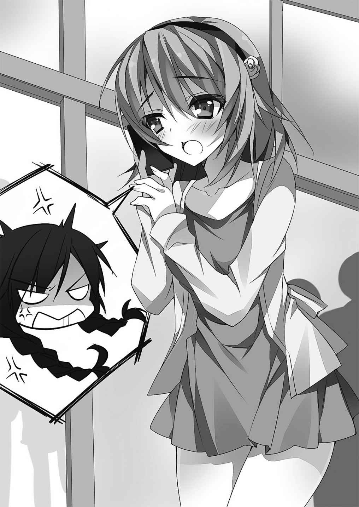
どんどん尻すぼみに声が小さくなっていくムラサキさん。
「ほ、本当に大丈夫ですか......？ 帰りますか......？」
俺も不安になって、彼女に尋ねた。
「いえ......でも今日の本来の目的は柏田さんと桃さんのクラスの劇を見ることですから！ それを見るまでは絶対帰れません！ ............劇を見たら高速で志乃の家まで行って謝罪しますっ！」
「いや、謝罪より原稿をすべきなんじゃ!?」
「原稿は頑張ればどうにかなります！ 志乃に嫌われることの方が問題なんです！ ああっ......あんなにすぐバレる噓をついてしまうだなんて、私のバカッ......！」
ムラサキさんは真っ青な顔のまま訴えた。そ、そういうもん......なのか？
「そういえば柏田さんは、何時までお時間大丈夫なんですか？」
「あ、劇は午後二時からで、準備があるからその一時間前には自分の教室に行かないといけないんで、自由にできるのは一時までですね」
携帯の時計を見る。現在、十二時十五分。あと四十五分か......。
「そうですか。それではちょうどいい時間ですし、お昼ご飯にしますか？」
「あ、いいですか？」
ムラサキさんの気遣いで、喫茶店で昼食をとることになった。
劇まで後少し、か......。途端に緊張感が押し寄せてくる。
今日色々あって今まで一時的に頭から消すことができていたけど......俺にはこれから、大仕事が待っているんだ。
それは勿論、クラスの劇の主役ではない。
当然それも成功させなければならないが......もっと難易度が高く、成功させられるか分からない仕事が、俺には残っている。
長谷川と山本さんを会わせて、できることなら......和解してもらう、という大仕事だ。
二人を会わせようと考えているのは劇の後なので、刻々とその時間が差し迫ってきている。
「......さん......柏田さん？」
名前を呼ばれて、はっとする。
向かい側の席に座るムラサキさんが、昼食を食べながら、俺の顔を見て心配そうな表情を浮かべていた。
「す、すみません......ぼーっとしてしまって......」
「大丈夫ですか......？ お顔の色が優れないようですが......」
やべ、緊張のあまり顔色が悪くなっていたのか、俺は......。
今はムラサキさんと一緒だってのに、彼女を心配させてしまうなんて。
「劇を目前にして、緊張なさってるんですか？」
「......え!? ええっと、まあ......そんなところです」
そうか、今の俺の様子を見たら、普通そう思うよな。
「............なんだか、それ以外にも心配事を抱えてらっしゃるように見えますね......？」
「えぇっ!?」
彼女は俺の目を見て薄く笑う。
そこまで分かってしまうなんて......ムラサキさん、めちゃくちゃ勘が鋭いな......。
いや、昨日も恋ヶ崎に俺が落ち込んでいること見破られたし、俺が分かりやす過ぎるんだろうか？ 情けない......。
「いやぁ～......ほんと、鋭いですね......」
隠すことを諦めて、頭をかきながら認める。
「その心配事は......私には話していただけないようなこと......ですか？」
「えっ......!? え、えっと......」
うーん、話がややこしいし、人の家庭の事情をあんまり言いふらすわけにもいかないし、何よりあまり心配ばかりかけるのもかっこ悪いからなあ......。まあ、今更のような気もするが......。
俺が焦って考え込んでいると、ムラサキさんが俺に笑いかけた。
「話したくないことは誰にでもありますからね」
「す、すみません......」
条件反射で謝った。
「いえ、謝らないで下さい」
彼女は優しい笑顔を俺に向けてくれる。
「何か私にできることがあれば......いつでもおしゃって下さいね♪」
そんな彼女の優しい笑顔と優しい言葉に......動揺していた俺の心は少なからず救われたのだった。
５
昼飯を食べ終えてから、劇の準備のために教室に行かなくてはならない時間になったので、俺はムラサキさんと別れた。
「劇、頑張って下さいね♪ 客席で応援してますから」
「はい、ありがとうございます！」
準備のために自分の教室へ行き、衣装へと着替える。
気付くと、恋ヶ崎が化粧ポーチを持って俺の近くまで来ていた。
こいつ、またあの化け物メイクを俺に施すつもりか......。
「ほら、やってあげるから座って」
俺は黙って椅子に着席し、目を瞑って恋ヶ崎にされるがままになった。化粧の感触がくすぐったい。今日は割と丁寧にやってくれているみたいだ。
「お前さ......」
俺は恋ヶ崎に聞きたいことがたくさんあった。鈴木とうまくいってるみたいじゃねえか。なんで昨日俺に何も言わなかったんだ？ 告白はするつもりでいるのか？
「え？ 何？」
だが俺はいざ恋ヶ崎を前にすると......怖くて、何も聞けなかった。
ただでさえ今は、大仕事を前にしてクソ緊張しているのだ。そんなときに聞くことでもないかもしれない。劇を終えて、無事長谷川と山本さんの問題を片付けた後、落ち着いた精神状態のときに......ゆっくり聞こう。そう思った。
「いや......なんでもない」
「はあ？」
化粧を終えた恋ヶ崎が、化粧道具を仕舞いながら立ち上がる。
「............じゃ、頑張りなさいよね」
「あ......ああ！」
恋ヶ崎の励ましの言葉に、力強く返事をした。
恋ヶ崎はすぐに、俺から離れて大道具の仕事へと戻っていった。
「えっ......柏田!?」
「すげー！ 別人みたいだぞ!?」
俺の顔を見て、桐谷や近くにいたクラスメイトの男子が声をかけてきた。
「えっ......？」
気のせいだろうか......昨日周りにされた反応と微妙に違う。昨日は、俺の顔を見た瞬間に爆笑されてばかりだったが......。
「ど、どんな顔になってるんだ？」
近くにいた女子が、鏡を貸してくれた。
「おおお......!?」
鏡を見て、驚愕した。想像していたメイクとは全く違うメイクをされた自分の顔が、そこにあった。
「柏田、意外と女装似合うじゃん！ 遠くから見たら普通に女に見えるよ!?」
笹川が俺の顔を見て驚いている。
......そう、今日の俺の女装は......我ながら意外とイケてる、と思った。恋ヶ崎が、お笑い系ではないかなりガチなメイクをしてくれたのである。何度鏡を見ても、これが自分の顔だなんて信じられない。
恋ヶ崎の奴が、一体どういうつもりでメイクの仕方を変えてきたのかは分からない。単なる気まぐれか......それとも、あいつなりの俺へのエール......だったりするのだろうか？
「......あら？ 柏田君......」
教室から体育館へ移動する途中、長谷川に声をかけられた。
長谷川とは昨日の帰りに少し気まずく別れてしまったため、声をかけてもらえて内心ほっとする。
彼女は俺の顔を見て驚いている。おそらく、俺のメイクが昨日と大分変わっているからだろう。
そういえば、昨日の化け物メイクは長谷川に『笑いがとれる』と褒められたんだよなあ。今日の割とまともなメイクは......長谷川的にはどうなんだろうか？ 笑いがとりにくくなってしまった、と残念がるだろうか。
「すごいわ......メイクの仕方でこんなにも変わるものなのね......」
長谷川は感心した様子で俺の顔を見る。
「あ、メイクのうまい女子にやってもらって......。昨日のメイクの方が良かったかな？」
言いながら、長谷川の様子を窺う。
「......そうね、昨日のメイクもとても良かったけれど......今日のメイクも、これはこれでいいと思うわ」
長谷川は俺の顔をまじまじと見たままそう言ったので、俺は長谷川に見られていることに動揺しつつも、長谷川に認めてもらったことに内心安堵した。
やがて、劇が開幕した。
すぐに俺の出番がやってくる。
演技をしながら客席に目をやると、ムラサキさんと山本さん、それと園田さんの姿をそれぞれ発見することができた。
俺は昨日と同じように相変わらずガチガチで下手くそな演技だが、大きな失敗はせず、順調に劇は進行していった。
今日も昨日と同様、このまま何事もなく無事に劇を終えることができるだろう......と、誰もが思っていた。
劇の終盤になり、王子役の長谷川の出番になった。
「これは、なんと美しいお嬢さんだ」
俺は死んでいる演技の最中で目を瞑っているため、真っ暗な視界の中で、昨日と全く同じ長谷川のセリフが響き渡る。
「王子様、このお方はもう、息をしていないのです」
続いて、小人役の生徒のセリフが聞こえる。
何度も繰り返したため、さすがに覚えている。この後は......王子の『おお、それは可哀想に』というセリフ。
「........................」
しかし、どうしたのだろう。
王子役の長谷川の次のセリフが、一向に聞こえてこない。
演技のために間をとっているのか？ なんて思ったが、それにしても長すぎる。もしかして、セリフを忘れたのか......？ 長谷川に限ってそんなことは考えにくいとは思うが、全く練習をしてないわけだしありえないことはない。昨日は覚えていたのに今日になって飛んでしまったのだろうか......？
俺は心配になり、半目を開けて様子を見た。
「..................」
王子役の長谷川は、俺のすぐ近くで、客席を見たまま硬直していた。
周りの小人役の生徒たちは、そんな彼女の様子を見て明らかに動揺している。
長谷川は、なぜ演技も忘れて固まっているんだ......？ 彼女の顔をよく見ると......一点を見つめたまま、表情を強ばらせていた。
............！
そうか、もしかして、長谷川は......
お兄さんである山本さんの姿を、舞台から見つけてしまったんだ！
まさか長谷川が演技も出来なくなるほど動揺してしまうだなんて、完全に想定外だった。山本さんに劇を見に来るように言ったのは俺だ。長谷川が今こんな状態になってしまっているのは、俺の責任なんだ。ああ、どうしよう......。
「長谷川さん......？」
長谷川のすぐ近くにいた小人役の女子生徒が、客席には聞こえないくらいの小さな声で長谷川に呼びかけるが、長谷川は一切反応せず硬直したままだ。長谷川の耳には声が届いていないようだ。
大分間が空いてしまっているため、客席もどよめき始める。くそっ......どうしたらいいんだ......？
......少し展開を変えてしまってでも、無理矢理進行させた方が、このままの状態よりはいくらかマシ......だよな？
俺は思いきって、死んだふりをして横になっている状態から、身体を起こした。
「ゲホッゲホゲホッ......」
口の中に予め入れていたリンゴの欠片を、咳をしてはき出した。
長谷川が演技できる状態ではないと判断した俺は、王子からキスをされていないのに、独断で目覚めることにしたのだ。
長谷川も、他の役者の生徒も、そんな俺の様子を見て驚いている。
やべ、何か言わないと......。リンゴをはき出したはいいが、咄嗟だったから何も考えてなかった......。ええっと、この場に相応しいセリフは......。
「......す、素敵な王子様がいらっしゃったから、つい生き返ってしまいましたわ～......」
俺のセリフを聞いて、他の役者たちは一瞬ポカンとするが、すぐに、
「............おぉー！ 白雪姫が生き返ったー！」
と、小人役の笹川がアドリブで言った。
「......し、白雪姫が生き返った！ 毒リンゴの呪いが溶けたんだ！」
続いて、小人役の別の生徒が、慌てて自分のセリフを言う。
そんな俺たちの様子を見て、長谷川は一瞬はっとした表情になって、
「......白雪姫、私は隣の国の王子です。私と結婚して下さいませんか？」
と、台本にある通りのセリフを言った。
良かった......長谷川はようやく我に返って、演技ができる状態に戻ってくれたようだ。
その後は、長谷川も完全に元の様子に戻り、なんとか順調に進行していった。一時はどうなることかと思ったが......なんとかなって本当に良かった。白雪姫と王子のキスシーンという、一番の見せ所はなくなってしまったが......。
長谷川は俺が思っていた以上に、兄の姿に動揺していた。
俺が山本さんを呼んだことで、まさかあそこまで長谷川を動揺させてしまうなんて......。
やがて、劇は無事終幕を迎えた。
最後の出番を終えて、俺と長谷川、他の役者たちは舞台袖へと戻る。
「ごめんなさい」
舞台袖控え室へと入った途端、長谷川が、俺たち役者や、他のその場にいた裏方の生徒に向かって頭を下げた。
「長谷川さん......さっきはどうしたの？」
小人役の女子生徒が、心配しているとも怒っているとも取れる様子で、長谷川に問いかけた。その様子に、見ている俺の方が胸が痛くなってくる。
「............その......セリフが、飛んでしまって......」
本当のことを言うわけにもいかないのだろう、長谷川は言いにくそうにそう言った。
「は、長谷川は前日に代役に決まったんだし、仕方ないよ！」
気が付くと俺は、そんな言葉を口にしていた。俺なんかがフォローしたところで無駄かもしれないとか、長谷川のことが好きなんじゃないかと勘ぐられるかもとか、そんなことを考える余裕もなく、咄嗟に出た言葉だった。
「まあ、そうだよな～。前日に決まって一日目完璧に覚えてただけでもすげーよ。キスシーンなくなっちゃったのは残念だけどさー」
俺の言葉に同調してくれたのは、笹川だった。内心とてもありがたく思う。
「そうだよねー」
「うんそうだよ、長谷川さん、気にしないで～」
他の女子も、長谷川を励まし始める。クラスメイトがみんないい人たちで良かった......。長谷川は辛そうに俯いて、彼女たちの言葉を聞いていた。完璧主義で責任感が強い長谷川のことだ。この場にいる誰よりも、自分で自分を責めているのだろう......。
舞台袖控え室を出たところで、長谷川から声をかけられた。
「柏田君......その、さっきは、フォローしてくれてありがとう......。劇中も、終わった後も......」
長谷川は俺に礼の言葉を言ってくれたが......少し警戒しているような表情で、俺を見ていた。
「あ、いや......昨日は俺がフォローしてもらったし......」
俺はこんなことが言いたいわけじゃなかった。山本さんを呼んだのは俺なんだ、ごめん......。まずはそう言わなければいけない。それから、どうにか長谷川と山本さんを引き合わせないと......。まさか長谷川が、兄の姿を見ただけであそこまで動揺するとは思っていなかった。こんな状態で、長谷川は話し合いに応じてくれるのだろうか？ やはり俺は、余計なことをしてしまったのではないだろうか？
「......柏田君......あの......劇の後話がある、って言っていたのって......もしかして......」
長谷川が何かを言いかけた、そのとき......俺たちの元に誰かが近付いてきた。
「あっ............」
見るとそこには、山本さんの姿があった。
「......二人とも、劇、お疲れさま」
山本さんは少し困ったような笑顔を浮かべて、俺たちに声をかける。
次の瞬間......。
「え......っ!?」
長谷川が、何も言わず......その場から駆けだした。
何も話す前に、山本さんの姿を見るなり逃げ出すなんて......それ程、長谷川は山本さんと話すのが嫌なのか？
話したらなんとかなるかもしれない......そんな風に思っていた俺の考えは、甘かったのかもしれない。これじゃあ昨日と全く同じだ。二人は話すことすらできない......。
結局俺は、何もできないのか......？
いや......このままじゃダメだ。何も解決なんかしない。
俺が......どうにかするって、決めたんだろ!?
「長谷川！」
俺は彼女の名を呼びながら、その場から走り出した。
長谷川は、めちゃくちゃ足が速かった。
そういえば、彼女は運動神経も抜群だったことを思い出す。
白雪姫の格好はスカートが長くえらい走りにくい。一度ドレスの裾を踏んで転びそうになったりしているうちに、長谷川の姿を見失いそうになる。
それでも必死に追いかけ......体育館を出て、渡り廊下を走り......渡り廊下から校舎へ入ったところで、俺は彼女に追いつくことができた。長谷川の腕をしっかりと摑む。
「はあ、はあ、はあ......」
白雪姫姿と王子姿で全力疾走の追いかけっこをした俺たちは、えらい目立っていた。周囲を歩いている人がみんな俺たちに注目している。
「ごめん......勝手に......山本さん呼んじゃって......」
まず俺は、長谷川に謝った。彼女は俯いたまま俺の顔を見ようともしない。
「やっぱり......柏田君だったの......」
長谷川の声は暗かった。勝手に山本さんを呼んだ俺に対して、怒っているのかもしれない。
「うん......よく事情も知らないのに余計なことしちゃった、よな......。だけど、二人はきちんと話した方がいいんじゃないかって、思って......」
ずっと腕を摑んでしまっていたことに気付いて、俺は慌てて手を離した。離してから、やばい、また逃げられたらどうしよう......と焦ったが、長谷川は俺から少し離れて、俯いたまま壁に寄りかかった。どうやら逃げるつもりはないようなので、少し安心する。
「きちんと話す......？」
彼女は俯いたまま、低い声で俺の言葉を繰り返した。
「そんなこと、望んでいないわ。私だって、あの人だって」
長谷川はいつになく強い口調でキッパリと言い切った。俺とは目を合わせてくれないまま。そんな長谷川の態度に、俺は内心大きく動揺してしまう。どうしよう、やはり長谷川は今、俺に対して怒っているかもしれない。
だけど、ここで引くわけにはいかない。
「長谷川はそうかもしれないけど......お兄さんは、長谷川と話がしたいと思ってるよ。一度、話すだけでも......」
「柏田君には関係ないでしょう!?」
長谷川は、俺の顔を真っ直ぐ見て強い調子で言った。
そのセリフに、俺は怖じ気づく。長谷川にここまで言われるとは思っていなかった。今彼女は、完全に俺に対して怒っている。迷惑に思っている。
せっかく今まで、少しずつ仲良くなることができていたっていうのに......。
長谷川は、自分が発したセリフに少し驚いた様子ではっとなる。だが弁解することはなく、そのまま再び俺から視線を逸らして俯いてしまう。
「と、とにかく......もう放っておいてもらえる？」
長谷川は俺の顔を見ないまま冷たく言い放った。
好きな相手に拒絶されてしまうことが、こんなに辛いとは思わなかった。
長谷川に嫌われてでも、二人の仲をどうにかしたい。昨日俺は、そんな風に思った。その気持ちに噓偽りはないつもりだったが......実際に拒絶を目の当たりにすると、想像していたよりもずっと辛い。やっぱり嫌われてもいいだなんて、噓だ。長谷川に嫌われたくない。長谷川に拒絶されるだなんて、絶対耐えられない。
......ここで引き下がれば、もしかしたらまだ間に合うかもしれない。
謝れば、許してもらえるかもしれない。余計なことをしてごめん。家族内の問題なのにどうにかしようと出しゃばって首を突っ込んだ俺がバカだった。もうこんなことはしないから許して欲しい、と。
だけど......本当にそれでいいのか？
それでは二人の仲は何も解決しない。今までのままだ。長谷川の本心だって聞けていない。
俺はそこで、それまで怖くて見られずにいた長谷川の顔を見た。
俯いた彼女が今どんな顔をしているのか気になった。
「............！」
彼女の表情を見て、驚いた。
今長谷川は、今にも泣き出しそうな顔をしていた。
もっと、怒り、嫌悪、憎しみに満ちた表情をしているのかと思っていたが、そんな感情は一切彼女の表情に浮かんでいなかった。
長谷川の目には、ただただ大きな悲しみが映っている。
山本さんのことを、もう関係のない人だと、彼女は言った。だがそれは、本当に彼女の本心なのだろうか？ ......だったら、今のこの表情はなんなんだ？
俺は今一度、覚悟を決めた。
昨日自分で決めたんじゃないか。二人の仲をどうにかすると。うまくいかせると。
それにさっき、長谷川は『柏田君には関係ない』と言った。その言葉をこのまま受け入れるわけにはいかない。それを受け入れたら、俺と長谷川が他人であると認めてしまうことになるのだ。
「か......関係なくなんかないよ！」
震える声で、俺は否定した。
長谷川は俺の言葉に驚いて、俺を見ている。
「だ、だって......俺と長谷川は友達だろ？ 長谷川が、そう言ってくれたんだろ？」
友達......長谷川にそう言ってもらったとき、俺はすごく嬉しかった。その時のことを鮮明に思い出す。
「柏田君......」
長谷川は、驚いた顔で俺を見つめていた。
「............っ!?」
次の瞬間、俺は勇気を出して長谷川の手を摑んだ。
「な、何っ......!?」
長谷川は大きく動揺し声を上げたが、俺はそのまま長谷川の手を引いて早足で歩き出す。
不思議と、好きな子の手を握っているという緊張感はあまりなかった。
長谷川を、山本さんの元へ連れて行かないと。
やっぱりどうしても、二人は言葉を交わさなくてはいけない。直接話し合わなければいけない。強くそう思った。
「ちょっ......柏田君!?」
俺に手を引かれながら、長谷川が抵抗の声を上げる。
「やっぱり......このままじゃダメだよ！ 長谷川はお兄さんに言いたいことがあるように見える......。それがたとえ、お兄さんに対しての文句だろうと、お兄さんを責めるような言葉であろうと、ちゃんと言った方がいい！ 逃げてばかりで何も話さないなんて......ダメだよ。そんなの、何も解決しないよ！」
「..................」
長谷川は俺の言葉に、何も言わなかった。
だけど、彼女は俺の手を振りほどくことはしなかった。
校舎から渡り廊下に出ると、そこに山本さんの姿があった。
もしかしたら、俺たちを探して体育館から出てきたのかもしれない。
「えっ......!? 二人とも......」
山本さんは戻ってきた俺たちの姿を見て、とても驚いてる。
「..................」
長谷川は、もう逃げようとはしなかった。
何も言わずに、山本さんの顔から視線を逸らす。
「勝手に......こんなことしてすみません......。だけど、余計なお世話かもしれないけど......二人は互いに言いたいことがあるように見えたので......。言いたいことは、言った方がいいと......思うんです。だって二人は、兄妹......なんですから」
「柏田君......」
山本さんは、俺の言葉に驚いた表情を見せる。
少し黙っていたが、やがて......。
「翠......ごめん！」
長谷川に向かって頭を下げた。
「今更謝ったって、許してもらえるとは思ってない......。だけど、どうしても謝りたかった」
長谷川は山本さんの言葉に驚いた様子で、目を見張っている。
「幼いお前を深く傷つけて、悪かった。謝っても償いきれないことを、俺はしてしまった。いくら悔やんでも悔やみきれない」
「..................」
長谷川は、兄の謝罪の言葉に何も言わない。
山本さんがこんなに真摯に謝っているのだ。少しは気持ちを分かってあげてもいいのではないだろうか、と俺は思う。
「別に......もういいわ、あのときのことは......」
長谷川は、恐ろしいくらい冷静な口調で返した。
「今更......よく覚えてもいないし、なんとも思っていないわ」
それは、兄を許す言葉だったはずなのだが......少しも感情がこもっていない冷たい口ぶりだった。
「翠......」
山本さんは、長谷川の言葉に悲しそうに表情を歪めた。許してもらえたとは、受け取ってないようだった。
「だから......もう忘れて。あなただって私の存在は辛いだけでしょう。お母さんに言われて、義理で私を気にかけているのかもしれないけれど......」
長谷川は淡々と続ける。彼女は、そんな風に思っていたのか......。
「母さんに言われて義理で......？ そんなわけないだろ!? 俺は離れて暮らしていても、一瞬たりともお前のことを忘れたことなんかない！ 俺にこんなことを言う資格はないが......またお前と、昔みたいに話せたらって......ずっと思ってた」
山本さんは、長谷川の言葉を強く否定した。
長谷川は彼の言葉に驚いた表情になったが、すぐに俯いてしまった。
「............お互い、関わらない方が身のためよ......」
小さく呟いた。長谷川が、ここまで山本さんを拒絶するだなんて......。
山本さんは、悲しそうな表情で長谷川を見つめた。
「......お前は、俺の存在を忘れたいんだろうな......。俺のせいでお前は深く傷つき、家族もバラバラになってしまって、辛い思いばかりさせてしまったんだ、当然だ......」
「......がう......」
そのとき......本当に小さな声だったが、長谷川が何か言葉を発した。俺も山本さんも、それを聞き逃さなかった。
「え？」
山本さんが聞き返すと、長谷川がゆっくりと顔を上げて口を開いた。
「違う......家族がバラバラになってしまったのは......兄さんのせいなんかじゃない！」
俺と山本さんは、長谷川の顔を見て同時に驚いた。
「え......」
「み、翠......？」
顔を上げた長谷川は......なんと、泣いていたのだ。
目を見開いて驚いた表情のまま......目に涙をためていた。
「ど......どうしたんだ？ 翠......」
「......兄さんが......」
長谷川が、涙を流しながら再度口を開いた。
「兄さんが......大学をやめて家から出なくなって、両親が離婚して......最初は......兄さんを責めたわ......」
長谷川は、涙を拭いながら続ける。
「............だけど、本当は分かっていた。
兄さんがそうなったのも、両親が離婚したのも......兄さんのせいなんかじゃない。全部......私のせいだって......」
長谷川の言葉に、俺は愕然とした。
全部、長谷川のせい......？ 長谷川は今、そう言ったのか......？
「な......？ お前、何を言って......」
山本さんも、長谷川の言葉に衝撃を受けている様子だ。
「お父さんとお母さんが喧嘩しているときに聞いてしまったの。お父さんが、兄さんがああなったのはゲームのせいだ、って言っているのを......。高校までゲームなんかやってなかったあいつが、どうして突然そんなものをやるようになったんだ？ お前がちゃんと見てなかったんだろ？ って、お母さんを責めているのを......」
『ああなった』というのは、当然ネットゲーム廃人になってしまってヒキコモリになってしまったときのことを言っているのだろう......。
「兄さんがネットゲームをやるようになってしまったのは......勿論、私のせい。先に始めたのは私で、兄さんは最初、私が心配だからって一緒にやってくれていただけだった......。ゲームやアニメなどのオタク的な趣味にハマる前までは、兄さんは私よりも優秀だった。真面目で、何事にも努力を欠かさない人だった。......それなのに......」
長谷川は、心底悔しそうな表情になる。
「......兄さんの人生を狂わせてしまったのは......私なのよ......。私は......兄さんの妹でいる資格なんかない......。もう関わらない方がいいのよ......」
長谷川は涙が止められない様子で、それでも最後まで言い切った。
彼女の言葉に、衝撃のあまり言葉を失った。
長谷川が、山本さんの人生を狂わせた......？ 妹でいる資格なんかない......？
彼女は今までずっと、そんな風に思っていたのか......!?
「違う！」
山本さんが、強く長谷川の言葉を否定した。
「翠......お前は今まで......そんな風に思っていたのか......？」
山本さんは、酷く驚いた様子で長谷川の肩を摑んだ。
「翠......よく聞いてくれ。俺はもうあのとき大人だったんだ。自分の意志と責任でゲームにハマってしまった。悪いのは全て俺なんだ。お前のせいだなんてことは、ない。絶対ない！」
長谷川は、目に涙をためたまま、今度は山本さんから目を逸らさず......強く力説する彼の目を、しっかりと見ていた。
「これからは二度と、そんな風に自分を責めるな！」
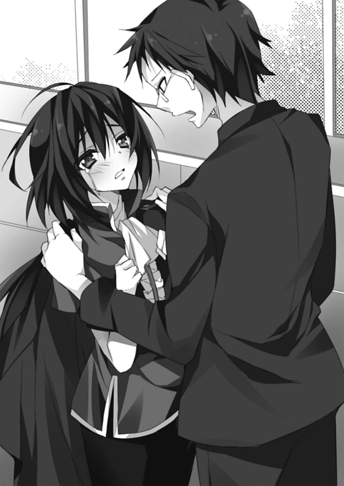
「............」
長谷川は、涙を流し続けたまま、黙って山本さんの言葉を聞いていた。
長谷川は......今まで、兄を許せなかったわけじゃなくて......自分が、兄の人生を狂わせてしまったという罪悪感から、兄と会えずにいたんだ。
確かに、山本さんがオタクになったのは長谷川の影響だと言っていた。
だから長谷川は、自分のせいで兄がオタクになり、ネットゲームをやるようになってしまったと思い込んでいたのだろう。兄がヒキコモリになってしまって大学を中退したのも、全て自分の責任だと、彼女は思い込んでしまったのだ。
だから彼女は、山本さんのことを『もう関係ない人』なんて言ったり、『お互いに関わらない方が身のため』なんて言ったりしたのか......？
「まさか翠が、そんな風に責任を感じていたなんて......。翠......もしかしてお前は、あれからアニメやゲームなどのオタク趣味全般を、やめてしまったんじゃないのか......？」
山本さんの言葉に、長谷川がびくっと身体を強ばらせた。
長谷川がオタク文化やオタクそのものを嫌っているのは......きっと、この一連の出来事がきっかけなのだろう、と今では分かる。
「俺があんな風になったのを、お前が自分のせいだと感じていたのなら......人一倍責任感の強いお前のことだ。責任を感じて、オタク趣味をやめてしまったんじゃないかって、思ったんだが......」
長谷川は山本さんの言葉に黙っている。そんな様子を見て、山本さんは何かを察したようだ。
「............やっぱり、そうなんだな......？」
長谷川は、黙って頷いた。
「兄さんがああなってしまったのは......私が、ゲームなどのオタク文化を、兄さんに教えてしまったせいよ。そんなものを知らなければ、兄さんは道を踏み外すことなんてなかったのに......。あんなもの、兄さんに教えなければ良かった......いいえ、最初から私自身だって、あんなものに手を出さなければ良かった......。今でも、強く後悔しているわ......」
「翠......それも、間違ってる」
長谷川の言葉を、山本さんは再度きっぱり否定した。
「あんなことになってしまったけど、俺は、翠の影響でオタクになって、二人でアニメやゲームを楽しんだことを、少しも後悔なんかしてない。翠がどう思っているのかは分からないが......少なくとも俺は、あの日々がすごく楽しかった。オタクになったこと自体が悪かったなんて思ってない。悪いのはゲームじゃない。俺自身が弱かったから......あんなことになってしまったんだ。アニメや漫画、ゲーム、同人誌......オタク文化そのものが悪いわけじゃない。それらは素晴らしい文化なんだ。俺がこんなこと言える立場じゃないけど......それだけは分かって欲しい」
山本さんは、長谷川に向かって力強く語った。真摯な彼の言葉に、聞いている俺が感動してしまいそうだった。
「............」
長谷川は何も言わずに、ただ自分の兄のことをじっと見つめていた。
彼女も、俺と同じように......山本さんの言葉に心を動かされているかのように見えた。
長谷川はしばらくの間黙っていたが、やがてゆっくりと口を開いた。
「............そう......。兄さんは......今でも、オタク文化を愛しているのだものね......」
長谷川は、全てを見透かしているかのような、優しい笑顔を浮かべていた。
「えっ......？」
長谷川の意味深な発言に、山本さんは不思議そうに聞き返した。
「最近の兄さんのマイブームは......『侵略！ マーズちゃん』......だったかしら？」
「えぇっ!? な、なんで翠がそれを......!?」
山本さんは、長谷川の発言に大層驚いている。俺も長谷川の発言がよく理解できず、混乱する。
『侵略！ マーズちゃん』とは......少し前まで放映していた、火星人の美少女マーズちゃんが地球を侵略しようと暴れまわるというストーリーの、オタク向け深夜アニメだ。
......花火大会の日......注文したピザの箱にマーズちゃんの絵が描かれていて、長谷川がピザの箱を見た瞬間、『マーズちゃん』のキャラ名を口にしたことを思い出す。俺は『なぜ長谷川がこんな深夜アニメを知っているんだ!?』と驚いたと同時に、『長谷川は隠れオタクなんじゃ......!?』なんて勝手に勘違いをしてしまった。
結局、どうしてオタクではない長谷川がマーズちゃんを知っていたのか、未だに謎のままだったのだが......。
「兄さんのブログに、毎週アニメの感想が書かれているじゃない」
「えっ......!?」
ブログ......？ 山本さんは、ブログをやっていたのか？ 全然知らなかった......。
つまり、頭の中で整理すると......山本さんは自身のブログの中でマーズちゃんの話題を出した。長谷川はそれを見ていたので、マーズちゃんを知っていて、ピザの箱にも反応した......と。そういうことでいいのだろうか......？
長谷川は、山本さんのブログをチェックしていた、ということか......。
「翠......俺のブログを見てるのか!?」
山本さん本人も俺と同じように驚いており、長谷川に問いかけた。
「私が小学生の頃から......兄さんのブログのアドレス、変わっていないじゃない」
動揺している山本さんとは対照的に、長谷川は落ち着いた様子で質問に答えた。
「そ、そうだけど......あのブログ、未だにお前が見てたなんて......」
山本さんは、長谷川の言葉に驚きを隠せない様子でいる。
まだ二人が仲が良かったときから山本さんがやっていたブログを、長谷川は、二人の関係にひびが入り、別々に暮らすようになった今でも......ずっと見続けていた、ということか......。
やはり長谷川は......仲違いしてしまったお兄さんのことを、今でもずっと気にかけていたのだ。
俺が思っていた以上に、二人は互いのことを思い合っていたんだ。
だからこそ、互いを傷つけてしまったという罪悪感から......長い間溝が深まったままだったのかもしれない。
だけど、今日直接話すことが出来て、彼等は和解できたように見えた。
そこで、校内放送が文化祭終了時間を知らせた。
波乱の文化祭は、なんとか......幕を閉じた。
６
俺と長谷川は、山本さんを玄関まで見送った。
「じゃあ、翠......また連絡するよ」
山本さんの言葉に、長谷川は黙って頷いた。
「............兄さん......」
長谷川が、緊張した面持ちで山本さんを呼んだ。
「......その、文化祭に来てくれて......本当は、嬉しかったわ......」
「翠......」
山本さんは感動した様子で、長谷川を見た。
長谷川が最後に素直になることができて、本当に良かった......と、俺は心から思った。
「柏田君......今日は、本当にありがとう。君にはなんとお礼を言ったらいいか......」
山本さんは俺に感謝してくれた。
「いえ、こちらこそ......来て下さってありがとうございました！」
俺と長谷川は、帰っていく山本さんの後ろ姿を見送った。
山本さんの背中を見る長谷川は......とても優しい目をしていた。
体育館に戻ると、劇の片付けが終わっていた。
「片付けに参加しないなんて......悪いことをしてしまったわ......」
クラスメイトたちが誰もいなくなり、劇で使った道具も綺麗に片付けられた体育館の舞台を見て、長谷川は申し訳なさそうに呟いた。
「元々大道具も小道具も少なかったから、すぐ片付け終わったんじゃないかな？」
準備にもあまり時間がかからなかったので、片付けも同様だったのではないかと思う。
俺たちはそのまま教室へ戻ることにした。
「急ぎましょう」
長谷川は、何事もなかったかのように俺に言う。
「あ、うん......」
先ほどまでの彼女の様子とのあまりの違いに少し戸惑いながらも、長谷川と共に急ぎ足で教室へ戻った。
俺たちが教室内に入った瞬間、なぜかクラスの奴らの注目を浴びたような気がした。恋ヶ崎も、教室に戻ってきた俺と長谷川のことを一瞬だけ見た。
他のクラスではまだ片付けが行われていたが、片付けを既に終えたうちのクラスでは、クラスメイトの半数程度が教室内でだべっていた。残りの半数は、部活の方の出し物などの片付けに行っているのだろう。
劇で使用した道具が教室の端にまとめられていた。そういえば、この後のキャンプファイヤーで、燃やせるような小さい道具は燃やす、と言われていたことを思い出す。きっと燃やすものを一か所に固めて置いているのだろう。
「お前......長谷川と二人でどこ抜けてたんだ!?」
自分の席へ戻ると、桐谷が声をかけてきた。
「えっ......いや......」
なんと答えていいか分からず、口ごもってしまう。
「クラス内で軽く噂んなってたぜ。主役二人がいない！ ......ってな」
「マジかよ......!?」
だからさっき長谷川と二人で教室内に戻ってきた瞬間、注目を浴びたのか？
「なんだよ、ついに告ったのか!?」
「ち、ちげえよ！」
「なんだ......。後夜祭前なのに早まったのかと思ったぜ」
「え......？ なんだそれ」
桐谷の発言に疑問を抱く。
「......お前、知らねえの？ うちの高校の後夜祭、告白タイムとかってのがあるらしいぜ。学校側の公式なわけじゃなくて、生徒らが勝手にやってるだけらしいけど......毎年続いてる伝統らしいぞ」
「えっ!? そんなもんあるんだ......知らなかった......」
後夜祭で告白タイムって......そんな青春っぽいイベントがうちの高校にあったとは。
「後夜祭ってフォークダンスとキャンプファイヤーだけかと思ってた......」
後夜祭のメインは、フォークダンスとキャンプファイヤーだ。フォークダンスは、男女で輪になって順番に相手を変えて踊っていく、という至ってスタンダードなもの。男子が一緒にダンスを踊りたい女子に声をかける......というシチュエーションをギャルゲーで見たことがあるが、そんなロマンチックなものではない。
「そのフォークダンスの後、キャンプファイヤーが始まって自由時間になるんだけど、そのときに告白したい相手がいる奴は相手を探し出して告るんだってよ」
「ま、マジか......」
うわ～......そんなイベントで本当に告る奴なんていんのか？
周りに他の生徒もいるんだから、完全に見世物じゃねえか。
文化祭の熱気と勢いにやられて告白するなんて......そんなことする奴が実際にいるとしたら、とんでもないお祭り野郎だな。俺は絶対にそんな軽率な真似しねえぞ。
「それではそろそろ校庭へ移動しまーす。手分けして燃やすものを持ち出してねー」
担任の言葉に、生徒たちはそれぞれ持てる分だけ燃やす道具を持ち、校庭へと移動し始める。
「やべっ！ 着替えねえと」
白雪姫の格好のまま化粧も落とさず桐谷と話し込んでいるうちに、後夜祭が始まる時間になってしまった。
「そのままでいいだろ。みんな文化祭の格好のまま後夜祭出るみたいだぞ」
「いやいやいや......この格好のまま女子とフォークダンス踊るのは俺が嫌だ......」
それはそれでウケは狙えるかもしれねえがな......。
桐谷に先に校庭へ行ってもらい、俺は誰もいなくなった教室で制服へと着替えた。
着替えを終えて顔を洗って化粧を落としてから校庭へ出ると、校庭の中心に組み立てられた櫓へ生徒たちが文化祭で使用した小道具などを投げ込んでいる最中だった。
全て投げ込み終わると、櫓を囲んで大きな二重の輪を作る。女子が内側、男子が外側で、男子が移動していくという形式だ。俺は慌てて自分のクラスがいる場所を探し、輪の自分の場所へと入った。
まだ空が明るいので、櫓は点火されない。一時間ほど踊って日が沈みかけてきたころ、点火されることになっている。
やがて音楽が流れ始め、フォークダンスが始まった。
数回フォークダンスの全体練習はしたのだが、何度やっても女子と手を繫いで踊るだなんて慣れるものではない。ドギマギしながら踊っていると。
「柏田着替えちゃったんだ～。あのままだったら面白かったのにー」
「......えっ!? あ......ははは......いや、さすがにあの格好は厳しいでしょ......」
最初に踊ったクラスメイトの女子に声をかけられ、戸惑いながらも返答する。今までほとんど話したことなどない女子だったので驚いた。
......以前までだったら、女子に声をかけられることなんてなかっただろう。劇で主役を（しかも女装で）やったおかげで、前よりは男女問わず気軽に話しかけてもらえるようになった......気がする。それだけでも、文化祭で白雪姫役をやった甲斐があったと思えた。......まあ、それも文化祭の最中だけだろうから、もうすぐ終わるんだけどな......。
やがて......。
「あ......」
「おう......」
恋ヶ崎と、踊る番になった。
俺にとって恋ヶ崎は、女子で唯一、好き放題言い合える相手だが......それでも、いや、だからこそなのか、手を繫ぐことも、ダンスを踊ることも、なんだか気恥ずかしい。
「............どうだったの？ うまくいったの？ さっきまでいなくなってたけど......」
不意に恋ヶ崎に質問される。勿論その質問は......俺が昨日こいつに相談した、長谷川と山本さんの件についてだろう。
「ああ............そ、そうだな......」
うまくいった......と言っていい結果になったと思う。
俺は二人を引き合わせただけで、ほとんど何もしていないが......。
「......へえー......あんたにしてはよくやったじゃん。まあ今度詳しく聞くけど......」
「ああ、あのさ、お前は......」
お前の方は、鈴木とどうなんだ？ と聞こうとして......音楽が切り替わり、次の人の番になってしまった。ああ、また、恋ヶ崎に鈴木との進展具合を聞けなかった......。
それから暫く経過して......。
「あっ......」
「......宜しく......」
ついに、長谷川と踊る番になった。彼女も王子の衣装から制服姿に着替えていた。素っ気なく俺に挨拶する。
戸惑いながら、長谷川の手をとる。
長谷川の手に触れた瞬間から、ドキドキが止まらない。さっきも俺は長谷川の手をとってしまったわけだが、あのときは必死でそれどころじゃなかったのだ。今とはわけが違う。
「............」
言いたいことはたくさんあるのに、緊張のあまり言葉が出てこなかった。
「柏田君......」
「えっ......!?」
長谷川の方から声をかけられて、動揺する。
「さっきは............恥ずかしいところを見せてしまって......ごめんなさい」
「えっ!? いや、そんなこと......」
見ると......長谷川は少し、顔が赤くなっていた。俯いて俺の顔を見ないようにしている。
そうか......泣き顔を見られてしまったから、恥ずかしいのだろう......。
いつも冷静で落ち着いている彼女だからこそ......あんな姿を俺に見られてしまって、恥ずかしいという気持ちも人一倍なんじゃないだろうか、と思った。
それから互いに黙ったまま、長谷川とのダンスの時間が終わってしまった。
もっと長谷川に触れていたかった......。
いや、それよりも......緊張と動揺のあまり、何一つ気の利いたことを言えなかったことに、激しく後悔した。
やがて曲が終わり、フォークダンスが終了した。日も丁度良く沈みかけてきている。
いよいよ、キャンプファイヤーを行うため、校庭の櫓が点火された。この点火が後夜祭の一番のメインイベントのようだ。屋上から櫓までひかれたワイヤーの上を、滑車に吊された火の玉が飛んでくる。櫓にあたって、音をあげて勢いよく燃え上がる。櫓を囲む生徒たちが感動の声を上げた。
すっかり暗くなった空の下、炎は勢いを増して赤々と燃えている。生徒たちは列を崩して思い思いの場所へ移動し、それぞれ一緒に過ごしたい人と火を眺めている。帰りたい人はここで帰宅しても良いことになっていた。
......そこで俺は、先ほどの桐谷の言葉を思い出した。
そうか、今まさに......『告白タイム』というイベントに突入したんじゃないのか？
「柏田ー、どうすんだー？ 告るのか？」
近くにいる桐谷が、からかうように俺に尋ねてくる。
「こっ......告るわけねえだろ！」
しかし俺は、そこで気付いた。
俺が長谷川に告らなくても......他の男子が長谷川に告るかもしれないじゃないか！
ただでさえ長谷川は男子にモテるのに、今回の文化祭で、劇で王子役を演じて目立ってしまい、更にファンが増えたのではないかと予想する。
やべえ、長谷川が他の男子に告られたらどうしよう......。そこまで考えていなかった。
「......あ？ 柏田、どこ行くんだ？」
俺がその場から移動しようとすると、桐谷に声をかけられた。
「ちょ、ちょっと......人探してくる！」
「ふーん......ま、せいぜい頑張れよ」
桐谷はにやにやしながら俺を送り出した。
こいつ、絶対俺が長谷川に告白すると勘違いしてやがる......。俺は単に、長谷川が他の男子に告白されないよう、彼女を見つけ出して見張っていたいだけだというのに。
長谷川は同じクラスなので近くにいるはずなのだが、なかなかその姿を見つけられない。くそっ、もう既に他の男子に呼び止められて、告白のためにどこか人気のないところへ連れて行かれてしまったのかも......。
「あっ、柏田君！」
俺が長谷川を探して走り回っていると、思いがけない人物に出くわした。
「さ、桜井さん......」
彼女も早足で歩いて移動していたようだ。
......もしかして、誰かを探していたのだろうか......？ ということはやっぱり、彼女も告白するために好きな人を探して......？
「......か、柏田君......息切らしてますけど、もしかして............誰か、探してるんですか......？」
桜井さんは少し動揺したような様子で俺に尋ねてきた。
「えっ......!? ああ......うん、まあ......」
「......っ！ そ、そうですか......。............が、頑張って下さいね！」
彼女は俺の言葉に、笑顔で声援をくれた。
「あ、うん......ありがとう！」
桜井さんが好きな相手に告白するつもりなのかどうかなども気になったが、あまり話している時間もないので、彼女に礼を言って足早に立ち去ろうとする。
......その時。
「..................サッカーゴールの近く......ですよ......」
「......えっ？」
小さな声で桜井さん呟いた声が、俺の耳に届いた。
驚いて振り向き、彼女の顔を見る。
「............頑張って、下さいね......」
彼女は......笑顔で俺に、再度励ましの言葉をくれた。
だけど......気のせいだったのだろうか？
同じ笑顔でも、そのときの彼女は......とても悲しそうな笑顔を浮かべているように見えたのは......。
俺は一心不乱に、サッカーゴールへと向かって走った。
............バレている？ 桜井さんに、俺の好きな相手が？
一体なぜだ？ 昨日まで、桜井さんと長谷川は面識すらなかったというのに......。
彼女は本当に、俺の好きな人が誰か分かっているのか？ 半信半疑だったが、それを確かめるためにも、俺はサッカーゴールへと行く必要があった。
......最後に彼女が見せた悲しげな笑顔が......瞼の裏に焼き付いて離れない。
一体どうして......彼女は、あんな表情をしていたのだろう......？
「......っ！」
前方にサッカーゴールを発見し......俺は、驚きのあまり声を失う。
そこには......本当に、長谷川がいたのだ......。
やっぱり、桜井さんは......俺の好きな人が長谷川だということを知っていたのだ。それで、俺がこの告白タイムに長谷川に告白しようとして探しているのだと思い込んで、俺に長谷川の居場所を教えてくれたのだろう。
一体なぜだ......？ 恋ヶ崎から聞いて......？ いや、あいつは絶対そんな口が軽い真似はしない。断言できる。じゃあ、どうして......？
......いや、それよりも、今は目の前の状況の方が大事だ！
だって......目の前のサッカーゴールの横に立つ長谷川は......俺の見知らぬ男子生徒と一緒にいたのだ。
「長谷川！」
俺は彼女の名を呼びながら、長谷川の近くへと駆けていった。
「......柏田君？」
長谷川は、俺の姿を見て驚いている。
「......ちっ......」
男子生徒は、俺の姿を見て舌打ちをした。
「あのさ......状況見て分かんないか？ 今は俺が長谷川さんと話してるんだよ。後にしてくれないか？」
男子生徒は心底うざったそうに俺に言う。
もしかして......今、まさに告白するところ、だったのか......？
うわー俺、完全に邪魔したんだな......。この男子が俺に苛立っているのも当然だ。
だが......しかし。
「悪い！ お、俺も......長谷川に話があるんだよ！ それも、急用だ！ わ、悪いけど......そっちを後にしてくれないか!?」
震えそうな声で、男子生徒に向かって言った。
横から邪魔しておいて、我ながらなんて自己中心的なセリフだろうと思った。
だけど......ここだけは譲れない。他の男に長谷川を取られるわけにはいかない。最低な奴になろうが、何が何でも、引き下がるわけにはいかないんだ！
「はあ......!? な、何言ってんだこいつ......」
名も知らぬ男子生徒は、怒りを通り越して心底驚いているような表情で俺を見た。
「......ちっ......あーもう、そうかよ、勝手にしろよ」
捨て台詞を吐くと、男子生徒は俺たちに背を向けてその場を後にした。
名も知らぬ男子生徒よ、告白のチャンスを邪魔してすまん......だが、俺も絶対に譲れなかったんだ。恋する者同士、分かってくれ......。
「か、柏田君......そんなに走って私の元へ来るなんて......一刻を争うほどの急用だったの？」
長谷川は心配そうな顔で俺を見る。
「あ......えっと......」
彼女の言葉に焦る。さっきは咄嗟に『急用』と言ったが、勿論俺は、長谷川に用などない。どうにか誤魔化そうとして言葉を探していた、その時。
俺の目に......見覚えのある姿が映り込んだ。
俺たちの前方、何メートルも離れたところに。
たくさんの生徒が、キャンプファイヤーを囲んでいる姿に紛れて......。
恋ヶ崎が、鈴木と一緒にいるのが見えた。
二人は何かを話しているようだが......当然、こんなに距離が離れていては何も聞こえない。
告白......しているのか......？
告白するには、今は絶好のチャンスだ。
恋ヶ崎と鈴木は、軽音部のライブのステージを通して距離が縮まり、打ち上げではオタクトークで盛り上がって......締めくくりは、この告白タイムだ。とてもよくできた流れだと思う。
それに、『キャンプファイヤーの告白タイム』だなんて、いかにも青春っぽいロマンチックなシチュエーション、少女マンガ脳なあいつは......恋ヶ崎は、大好きだろうと思う。
やっぱりあいつ、ついに鈴木に告白を......？
「......くん？ 柏田君？」
「............えっ!?」
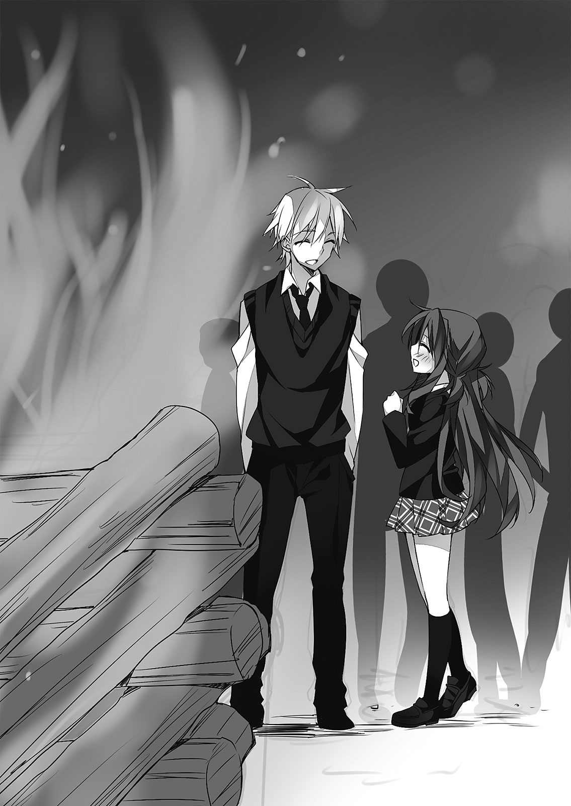
長谷川に呼びかけられて、俺は驚く。
やべっ......恋ヶ崎と鈴木の姿に完全に気を取られていて、自分の状況を忘れていた......。
「ごっごめん、ちょっとぼーっとしてて......」
こんなときに何をやってるんだ俺は！ あいつはあいつで頑張ってるんだから、いいじゃないか。何をこんなに動揺しているんだ？ 今は目の前の状況の方が大事じゃないか。
俺は恋ヶ崎と鈴木の姿から目を逸らし、全力で脳内からかき消した。
後夜祭が終わったら......恋ヶ崎に聞いてみればいい......。今はせっかく長谷川と一緒なんだ......忘れよう......。
「でも......丁度良かったわ......。私も、柏田君に話があって......声をかけようと探していたところだったの。その途中で、先ほどの男子生徒に声をかけられてしまったのだけれど......」
「えっ......!?」
俺は長谷川の発言に衝撃を受けた。
長谷川が、俺に、話......!?
このキャンプファイヤーの告白タイムに......!?
そんなの......嫌でも期待してしまうではないか......。長谷川が、俺に告白をしようとしてるんじゃないか、って......！
「で......柏田君の話って......？」
「えっ、いや......長谷川の話が先でいいよ！」
俺はつい、そう口走った。
「え......？ でも、急用だったんじゃ......」
「いや、大丈夫！ 長谷川の話を先に聞きたいんだ！」
我ながら下手すぎる誤魔化し方だと思った。さぞかし長谷川に不審がられていることだろう......。
「そう......？ そう言うのなら......じゃあ、先に話させてもらうわ」
長谷川は不思議そうにしながらも、一応納得してくれたようで、話し始める。
「柏田君......今日は、本当にありがとう」
長谷川は穏やかな口調で、俺に言った。
「え......？」
「兄を文化祭に呼んでくれて......それから、私を兄の元まで連れて行ってくれて......」
「あ、いやあ......そんな......」
告白ではなかった......ということに内心少々落胆しつつも、彼女のお礼の言葉に素直に嬉しくなった。
さっきまで、驚くほどいつも通りの態度で、素っ気なかったのに......。
「なんとお礼を言っていいか......分からないわ......。私は今まで、傷つきたくないという自分自身の心の弱さから、兄に連絡ができなくて仲違いしたままだったのだけれど......今日柏田君が兄と話す場を設けてくれたことで、数年ぶりに兄と話すことができて......本当はすごく、嬉しかった」
「長谷川......」
「最初は......くだらない意地を張ってあんな態度をとってしまって......本当に申し訳なかったと思っているわ。それなのに、柏田君は諦めずに私を兄の所まで連れて行ってくれて......」
彼女は真剣に俺の目を見て、感謝の言葉を述べてくれている。
「感謝しても......しきれないわ。柏田君は、私達兄妹の......恩人よ」
「............」
俺は、彼女の言葉に涙が出そうになった。
......俺は決して、彼女に感謝されたくてしたわけじゃない。
むしろ、兄妹の問題に赤の他人である俺が口を出してしまい、嫌われるかもしれない......という覚悟の上の行動だった。
俺自身の意志で、勝手にやったことだ。俺がそうしたいから、やっただけなんだ。
それなのに......彼女は今俺の目を見て、心から感謝してくれている。
こんなに嬉しいことってあるだろうか......？
「か、柏田君......？」
俺が涙を堪えるために目に力を入れてその場に硬直していたところ、不思議に思った長谷川が声をかけてきた。
「あっ......ごめん、ぼーっとしちゃって......いや......そんなに感謝してくれるなんて、思ってなかったからさ......嬉しくて......」
長谷川は俺の言葉に、柔らかい笑顔を浮かべてくれた。
「............それで、柏田君の話っていうのは......何？」
「えっ......!?」
しかし次の瞬間、俺は長谷川の言葉に大きく動揺する。
やばい、すっかり忘れてた......。
「え、えーっと......」
ど、どうしよう......ここで、何話すつもりだったか忘れちゃった～......なんて誤魔化しは、さすがに通用しないよな......。俺は必死で脳みそをフル回転させる。
......ちょっと待てよ、......今は、告白タイムだ......。
もういっそ、このチャンスに俺の気持ちを......。
......いやいやいや！ 早まるなよ俺！ さっき自分でそれだけは絶対にするものかと心に決めたじゃないか！
「柏田君......？」
長谷川は、黙ったまま悶々としている俺に不思議そうに首を傾げる。
..................。
そうだ............。
今は、『告白タイム』なんだ......。
俺は......もう一つ、長谷川に告白しなくてはならないことがあるじゃないか......。
この恋心以外に......彼女に隠し続けていることが、あるじゃないか......。
好きな人に隠し事を続けるなんて......本当は俺は、嫌だったんだ。本当の自分を見せていないような気がして......。
長谷川は今俺に感謝してくれているが、俺が本当のことを言ったら......一体どうなってしまうのだろう？ それでも今と同じように、俺に優しい笑顔を向けてくれるのだろうか？ せっかく俺のことを『友達』として認めてくれているのに、その関係が壊れてはしまわないだろうか？
正直、怖いという気持ちも大きい。
だけど......それでも、本当の自分を、長谷川に認めて欲しい......。
「......ごめん、俺、今まで隠してたんだけど............長谷川に、言わなくちゃいけないことがあって......」
「え......？」
長谷川は少し驚いて、俺の顔を見上げる。
俺は軽く深呼吸して、決意を固めた。
「お、俺............山本さんと同じように......オタク趣味を、持ってるんだ......」
俺の言葉に、長谷川は目を見開いて驚いている。
しばらくの間、彼女は俺の顔をじっと見つめていた。
沈黙が、辛かった。何でもいいから言葉を発して欲しかった。
「............そう」
やがて長谷川は、無表情で短くそれだけ返事をした。
彼女のその反応に......俺は途端に不安がこみ上げてくる。
お兄さんと和解したからと言って......彼女がオタク文化を嫌っているのは、今でも変わらないのだ。昔はオタク文化が好きだったとしても、オタク文化と関わったことによって引き起こってしまった様々な辛い出来事を考えれば、それも当然だ。それらが、長い間彼女を苦しめ続けていたのだ。
以前彼女は「オタク趣味の人も苦手」と言った。お兄さんと和解した今でも、その気持ちは変わらないかもしれない。もし、そうだとしたら......せっかくここまで築いた彼女との関係が、一気に崩壊してしまっても......おかしくない。
長谷川の反応が......ただただ怖かった。
彼女の顔が見られなくなり、俺は俯いてしまう。
やがて長谷川は、ゆっくりと話し始めた。
「......私は今まで、オタク文化を憎んでいた。そのきっかけとなったのは、小学生のとき、兄に裏切られたと感じた出来事があって、酷くショックを受けたこと......だと、昔は思っていたわ。だけど、今はそうは思わない。当時は許せなかったけれど、冷静に考えれば、あのことが、兄の私に対する裏切り行為なんかではないってこと、すぐに理解できたわ」
......長谷川が『裏切られたと感じた出来事』と話しているのは、山本さんの同人誌を発見してしまったことだろう。当時はショックだったが、今ではあまり気にしていない......ということだろうか。
「だから、私がオタク文化を憎んでしまった本当の原因は、そのことではないと分かった。そのことではなくて......私がオタクだったせいで、兄を巻き込んでしまい、結果的に兄の人生を狂わせてしまった......と、私が思い込んでいるせいだったの。オタク文化を憎むことで、逃げていたんだと思うわ......。悪いのはネットゲームと、オタク文化そのものだ......って」
そのオタク文化を兄に勧めてしまったことに、彼女は大きな責任を感じると同時に、自責の念に駆られてしまっていたのだろう。
「だから......さっき兄に、『オタク趣味そのものが悪いわけじゃない。それらは素晴らしい文化なんだ』って言われて......なんだか、オタク趣味を兄に勧めた私自身をも、兄は肯定してくれたような気がして......救われた気分だった。私だって......本当は、分かっていた。オタク趣味そのものが悪なんかじゃない、って」
彼女は少し、すっきりしたような表情になっていた。
「だから......これからは私、オタク趣味や、オタクである人を否定したりなんかしない。自分勝手な理由で拒むのは、もうやめる」
彼女は、少しの迷いもなくキッパリと宣言した。
それは、つまり......オタク嫌いをやめたから、俺がオタクであることも気にしない......という答えだと捉えて良いのだろうか？
「第一......『オタクであること』というのは、単なるその人の趣味の一つに過ぎないわ。それによってその人自身に対しての気持ちまで変えてしまうなんて、私は今までなんて愚かだったのかしら......」
今日の彼女は、今までにないくらい自分の正直な気持ちを俺にたくさん話してくれる。俺はそれが嬉しかった。
「だから......」
長谷川は少し恥ずかしそうに俯いてから、真っ直ぐに俺の目を見つめた。
「オタクであろうとなかろうと、柏田君が私にとって恩人で、強く信頼のおける......かけがえのない大切な人であることは......何も変わらないわ」
彼女は、優しい笑顔を浮かべて、はっきりと言った。
──『かけがえのない大切な人』。
彼女は今確かに、そう言った。俺のことを、そう言ってくれた。
彼女の今の言葉が、俺にとってどれほど嬉しかったことだろう。
彼女の口からこんな言葉が聞けたなら......俺が今までしてきたことなど、大したことないと思える。
彼女は今、俺が今まで見た中で、一番の笑顔を浮かべていた。
この笑顔をいつまでも見ていたい。この笑顔を、彼女の幸せを、守りたい。
彼女を襲う全ての辛く悲しい出来事から......彼女を、守りたい。
「柏田......君......？」
「は、長谷川......」
俺は、黙っている俺を不思議に思ってキョトンとしている彼女の瞳を、真っ直ぐに見た。
俺は今......自分の中に溢れるこの感情を抑える術を、知らない。
彼女を愛しいと思う気持ちが、溢れて爆発してしまいそうだった。
「俺、..................」
俺は震える唇を動かして......言葉を発した。
「長谷川のことが....................................好きだ」
「............え？」
彼女は俺の言葉に、目を大きく見開いた。
「その......ク、クラスメイトとしてとか、友達としてとか、そういうことじゃなくて......一人の人として、一人の女性として......長谷川のことが......好きなんだ......」
今まで長谷川と過ごした時間が全て、走馬燈のように脳内を駆け巡った。
入学式の日、彼女の美しさと優しさに強く心惹かれたその日から、どんどん長谷川への気持ちは膨らんでいく一方だった。
ただ姿を見つめて隠れて手伝いをすることしかできなかった日々から、少しずつ言葉を交わすことができるようになって......。
今彼女は、俺の目の前で、俺のことを......『かけがえのない大切な人』と、言ってくれた。
そのことがとても嬉しかった。
後先のことなど何一つ考えてなどいなかった。
もう自分の気持ちを抑えておくことなど、できなくなってしまった。
「柏田......くん......」
彼女は驚いた表情のまま、俺のことを見つめていた。
長谷川の白い頰が、暗闇の中で、遠くに揺れる炎の色を受けてちらちらと赤く輝いていた。
その顔を見つめながら、やっぱり長谷川は世界で一番綺麗だと、ぼんやり思った。
あとがき
読者の皆様、ご無沙汰しております。村上凛です。
この度は『オタリア』七巻をお手にとって頂き、ありがとうございます。
七巻ではついに、文化祭本番編となりました。
昔を思い出しながら、私の高校時代の文化祭は勿論このようなものとはほど遠く......ああ、こんな文化祭送りたかったなあ～......と妄想を膨らませながら執筆した次第でございます。
前巻に引き続き今回は文化祭当日の黒歴史を披露しますと、（もはや毎巻恒例のようになっていますね......笑）部活の出し物であろう事かコスプレなんぞをしてしまい、その姿で校内を歩いて、クラスの友達に遭遇してしまうという恥ずかしすぎるハプニングに見舞われました......。
私はそれだけで済んだのでまだいいですが、私の部活の友人はそのコスプレ姿の写真が卒業アルバムに掲載されてしまい、悲惨でしたね......（笑）。
最後に謝辞を。
担当様。今回いろいろな面で迷惑をおかけしてしまいすみませんでした。今後ともどうぞ宜しくお願いします。
あなぽん様。いつも素敵なイラストをありがとうございます。執筆しながらイラストが上がってくるのが楽しみで仕方ありません。
ファンレター下さった読者の方々。今回もお返事できず申し訳ありません。執筆に行き詰まったとき、何度も読み返しています。本当にいつも救われています。ありがとうございます。
コミカライズを担当して頂いている葵季むつみ様。原作からは想像できない素晴らしい演出や、オリジナルのエピソードや四コマなど、読み応えたっぷりの面白いコミックをいつもありがとうございます。
八巻も全力投球したいと思いますので、どうぞ宜しくお願い致します。
村上 凛
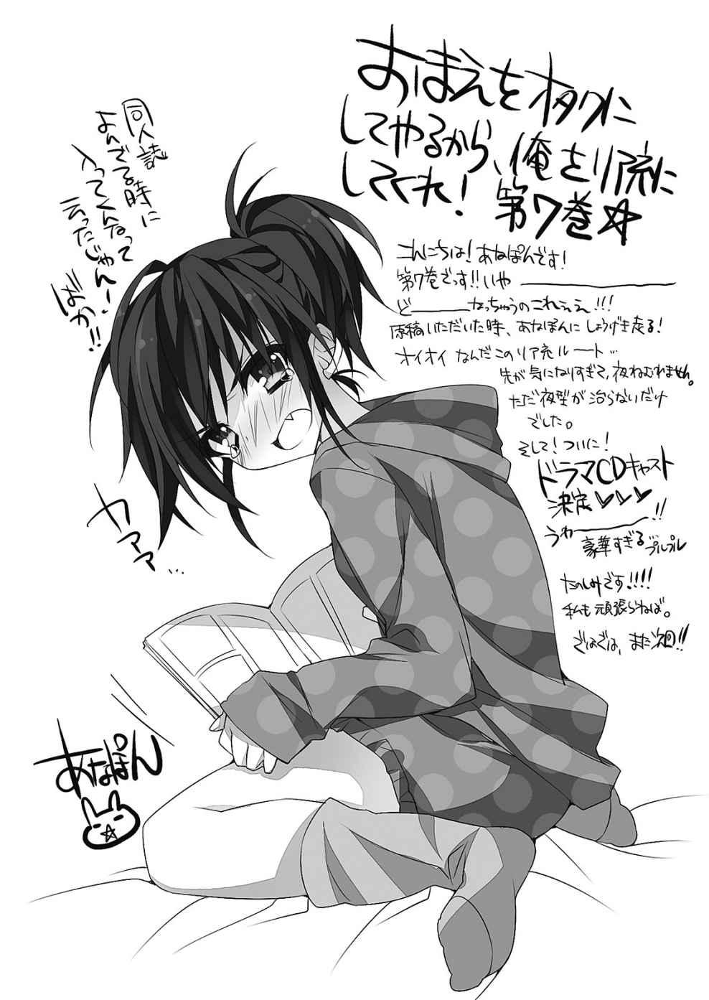
おまえをオタクにしてやるから、
俺をリア充にしてくれ！７
村上 凛
平成25年6月25日 発行
発行者 山下直久
発行所 株式会社富士見書房
〒102-8144 東京都千代田区富士見1-12-14
http://www.fujimishobo.co.jp/
(C)2013 Rin Murakami, Anapon/Fujimishobo